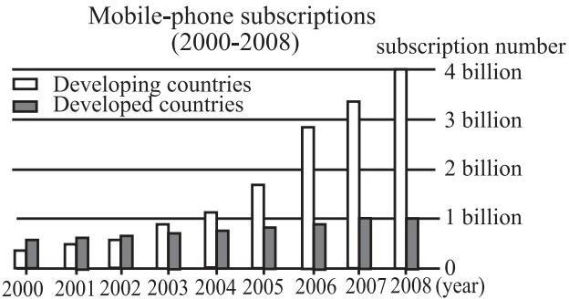

yy-2010-01
📄 原文 · 完整保留，点击展开/收起▾
Read the following text. Choose the best word(s) for each numbered blank and mark A, B, C or D on ANSWER SHEET 1. (10 points)
The outbreak of swine flu that was first detected in Mexico was declared a global epidemic on June 11, 2009. It is the first worldwide epidemic __1__ by the World Health Organization in 41 years.
The heightened alert __2__ an emergency meeting with flu experts in Geneva that assembled after a sharp rise in cases in Australia, and rising __3__ in Britain, Japan, Chile and elsewhere.
But the epidemic is “ __4__ ” in severity, according to Margaret Chan, the organization’s director general, __5__ the overwhelming majority of patients experiencing only mild symptoms and a full recovery, often in the __6__ of any medical treatment.
The outbreak came to global __7__ in late April 2009, when Mexican authorities noted an unusually large number of hospitalizations and deaths __8__ healthy adults. As much of Mexico City shut down at the height of a panic, cases began to __9__ in New York City, the southwestern United States and around the world.
In the United States, new cases seemed to fade __10__ warmer weather arrived. But in late September 2009, officials reported there was __11__ flu activity in almost every state and that virtually all the __12__ tested are the new swine flu, also known as (A) H1N1, not seasonal flu. In the U.S., it has __13__ more than one million people, and caused more than 600 deaths and more than 6,000 hospitalizations.
Federal health officials __14__ Tamiflu for children from the national stockpile and began __15__ orders from the states for the new swine flu vaccine. The new vaccine, which is different from the annual flu vaccine, is __16__ ahead of expectations. More than three million doses were to be made available in early October 2009, though most of those __17__ doses were of the FluMist nasal spray type, which is not __18__ for pregnant women, people over 50 or those with breathing difficulties, heart disease or several other __19__. But it was still possible to vaccinate people in other high-risk groups: health care workers, people __20__ infants and healthy young people.
第 1 题 · 本题位置已在原文中高亮（完形空位 / 新题型段落），请结合原文选出正确选项
答案：D
本题讲解：2010 完形第 1 空 · “被 WHO ______ 的全球性流行病”该填哪个动词
答案：D（designated 命名；指定）。
第 0 步：先立机制——本空的线索结构
空格前是名词短语 the first worldwide epidemic，空格后紧跟 by the World Health Organization，这是“过去分词 + by 施动者”的被动结构：空格里要填一个 WHO 能对“疫情”发出的动作。所以这道题不必背四个词的全部释义，只需回答一个问题：WHO 对一场疫情，做的是哪个动作？
第 1 步：定位原文
It is the first worldwide epidemic __1__ by the World Health Organization in 41 years.
空格是过去分词，与其后的 by the World Health Organization 构成被动结构，一起修饰 the first worldwide epidemic：要填的是一个 WHO 能对“疫情”发出的动作。
第 2 步：找证据——上一句已经预演了这个动作
The outbreak of swine flu that was first detected in Mexico was declared a global epidemic on June 11, 2009.
上一句刚说完这场疫情“被宣布为全球性流行病（was declared a global epidemic）”——“宣布、认定”这个动作 WHO 已经做过一次。本空考查的就是它的同义复现：答案应当与 declare 同族。
第 3 步：逐项排除
| 选项 | 词义 | 判定 | 理由与典型误解 |
|---|---|---|---|
| A criticized | 批评 | ✗ 排除 | WHO 对疫情的动作是“认定”而非“批评”，与全文通报语境相反。（典型误解：只背词义，不核对动作发出者与对象的关系。） |
| B appointed | 任命 | ✗ 排除 | appoint 的宾语必须是人，epidemic 是疾病，搭配不成立。（典型误解：只记住 appoint 有“指定”义项，没检查宾语类型。） |
| C commented | 评论 | ✗ 排除 | comment 不及物，须接 on sth 才能带出对象，本空语法直接不通。（典型误解：忽略动词的及物性，以为评论可以直接带宾语。） |
| D designated | 命名；指定 | ✓ 当选 | 与上句 was declared 同义复现，语义语法双合。 |
代入后的完整句义：它是世界卫生组织 41 年来认定的首个全球性流行病。
第 4 步：预判追问
- 为什么不能选 B？appoint 不也有“指定”的意思吗？：appoint 的“指定”只用于人：指定某人担任某职（appoint her as minister）。把某个事物“定名为、认定为”某身份，用的是 designate（sth is designated ...）。本空宾语是 epidemic（疾病），只能配 designate。
- commented 后面不是可以接宾语吗？：comment 是不及物动词，要借介词 on 才能带出对象：comment on the epidemic。而本空位置是“epidemic + 空格 + by WHO”，中间没有任何介词，所以 commented 语法直接不通。
易错点
- 误选 B（appointed）：把中文释义里的“指定”当成万能对应，没检查宾语类型——appoint 的宾语必须是人。
- 误选 C（commented）：忽略及物性：comment on sth 才完整，本空后面只有 by 施动者。
- 误选 A（criticized）：脱离全文语境：原文是官方疫情通报与应对，不存在“批评疾病”的表达需求。
记忆锚点：被疾病 + by WHO → designate（认定、命名）；declare 与 designate 同义复现；comment 必须带 on，appoint 只认“人”。
yy-2010-02
📄 原文 · 完整保留，点击展开/收起▾
Read the following text. Choose the best word(s) for each numbered blank and mark A, B, C or D on ANSWER SHEET 1. (10 points)
The outbreak of swine flu that was first detected in Mexico was declared a global epidemic on June 11, 2009. It is the first worldwide epidemic __1__ by the World Health Organization in 41 years.
The heightened alert __2__ an emergency meeting with flu experts in Geneva that assembled after a sharp rise in cases in Australia, and rising __3__ in Britain, Japan, Chile and elsewhere.
But the epidemic is “ __4__ ” in severity, according to Margaret Chan, the organization’s director general, __5__ the overwhelming majority of patients experiencing only mild symptoms and a full recovery, often in the __6__ of any medical treatment.
The outbreak came to global __7__ in late April 2009, when Mexican authorities noted an unusually large number of hospitalizations and deaths __8__ healthy adults. As much of Mexico City shut down at the height of a panic, cases began to __9__ in New York City, the southwestern United States and around the world.
In the United States, new cases seemed to fade __10__ warmer weather arrived. But in late September 2009, officials reported there was __11__ flu activity in almost every state and that virtually all the __12__ tested are the new swine flu, also known as (A) H1N1, not seasonal flu. In the U.S., it has __13__ more than one million people, and caused more than 600 deaths and more than 6,000 hospitalizations.
Federal health officials __14__ Tamiflu for children from the national stockpile and began __15__ orders from the states for the new swine flu vaccine. The new vaccine, which is different from the annual flu vaccine, is __16__ ahead of expectations. More than three million doses were to be made available in early October 2009, though most of those __17__ doses were of the FluMist nasal spray type, which is not __18__ for pregnant women, people over 50 or those with breathing difficulties, heart disease or several other __19__. But it was still possible to vaccinate people in other high-risk groups: health care workers, people __20__ infants and healthy young people.
第 2 题 · 本题位置已在原文中高亮（完形空位 / 新题型段落），请结合原文选出正确选项
答案：C
本题讲解：2010 完形第 2 空 · “警惕升级”与“紧急会议”谁先谁后
答案：C（followed 在……之后发生）。
第 0 步：先立机制——本空的线索结构
这道空考的是两个事件的时间顺序：警惕升级与紧急会议。谁先谁后，原文已经给了铁证——定语从句里写着 assembled after a sharp rise in cases（在病例激增之后召开）。于是链条固定为：疫情恶化 → 会议召开 → 警惕升级，会议在前、警惕升级在后。
第 1 步：定位原文
The heightened alert __2__ an emergency meeting with flu experts in Geneva that assembled after a sharp rise in cases in Australia, and rising numbers in Britain, Japan, Chile and elsewhere.
空格是主句谓语动词，主语 the heightened alert（警惕升级）、宾语 an emergency meeting（紧急会议）：填的动词决定这两个事件谁先谁后。
第 2 步：找证据——定语从句里的 after 是题眼
that assembled after a sharp rise in cases in Australia, and rising numbers in Britain, Japan, Chile and elsewhere
after 已经把会议的位置钉死在“疫情恶化”之后。空格要表达的是 alert 与 meeting 的关系：只有“会议先开、警报随后拉响”能与这个顺序兼容；任何把 alert 放到会议之前、或说成 alert 促成会议的选项都与此矛盾。
第 3 步：逐项排除
| 选项 | 词义 | 判定 | 理由与典型误解 |
|---|---|---|---|
| A proceeded | 继续进行 | ✗ 排除 | proceed 的核心义是“继续”，警惕系统是首次升级，无从“继续”。（典型误解：只看主语像个事件，不核对 proceed 的“继续”义。） |
| B activated | 激活 | ✗ 排除 | activate 是“前者启动后者”，与会议在先的原文顺序相反。（典型误解：把因果方向读反了。） |
| C followed | 在……之后发生 | ✓ 当选 | 只表顺序：会议在先、警惕升级在后，与 after a sharp rise 吻合。 |
| D prompted | 促使 | ✗ 排除 | prompted 断言 alert 是会议的原因，与 after 线索矛盾。（典型误解：看到“升级之后开会”很像因果就选 prompted，没有用 after 校准顺序。） |
代入后的完整句义：随着澳大利亚病例激增、英国日本智利等地感染人数不断上升，流感专家在日内瓦召开紧急会议之后，警戒级别随之提升。
第 4 步：预判追问
- followed 和 prompted 都能接 meeting，差别到底在哪？：followed 只陈述顺序：meeting 发生在前、alert 发生在后，不掺因果；prompted 则断言 alert 是开会的原因。原文的 after a sharp rise 已经把“促成会议”的原因锁定为疫情恶化，所以只能选纯顺序义的 followed。
- 为什么 proceed 不行？：proceed 的核心义是“继续”，暗示动作早已开始、中途接续；这里是警惕系统第一次升级，没有“继续”可言。
易错点
- 误选 D（prompted）：把“警惕升级”当成了开会的原因——促成会议的是疫情恶化，after 已经把顺序钉死。
- 误选 B（activated）：因果方向颠倒：activate 是“前者启动后者”，与会议在先的原文顺序相反。
记忆锚点：after 是顺序题眼：疫情恶化 → 会议 → 警惕升级；follow 只表“随后发生”，prompted、activated 都会抢因果。
yy-2010-03
📄 原文 · 完整保留，点击展开/收起▾
Read the following text. Choose the best word(s) for each numbered blank and mark A, B, C or D on ANSWER SHEET 1. (10 points)
The outbreak of swine flu that was first detected in Mexico was declared a global epidemic on June 11, 2009. It is the first worldwide epidemic __1__ by the World Health Organization in 41 years.
The heightened alert __2__ an emergency meeting with flu experts in Geneva that assembled after a sharp rise in cases in Australia, and rising __3__ in Britain, Japan, Chile and elsewhere.
But the epidemic is “ __4__ ” in severity, according to Margaret Chan, the organization’s director general, __5__ the overwhelming majority of patients experiencing only mild symptoms and a full recovery, often in the __6__ of any medical treatment.
The outbreak came to global __7__ in late April 2009, when Mexican authorities noted an unusually large number of hospitalizations and deaths __8__ healthy adults. As much of Mexico City shut down at the height of a panic, cases began to __9__ in New York City, the southwestern United States and around the world.
In the United States, new cases seemed to fade __10__ warmer weather arrived. But in late September 2009, officials reported there was __11__ flu activity in almost every state and that virtually all the __12__ tested are the new swine flu, also known as (A) H1N1, not seasonal flu. In the U.S., it has __13__ more than one million people, and caused more than 600 deaths and more than 6,000 hospitalizations.
Federal health officials __14__ Tamiflu for children from the national stockpile and began __15__ orders from the states for the new swine flu vaccine. The new vaccine, which is different from the annual flu vaccine, is __16__ ahead of expectations. More than three million doses were to be made available in early October 2009, though most of those __17__ doses were of the FluMist nasal spray type, which is not __18__ for pregnant women, people over 50 or those with breathing difficulties, heart disease or several other __19__. But it was still possible to vaccinate people in other high-risk groups: health care workers, people __20__ infants and healthy young people.
第 3 题 · 本题位置已在原文中高亮（完形空位 / 新题型段落），请结合原文选出正确选项
答案：B
本题讲解：2010 完形第 3 空 · rising ______：和 a sharp rise in cases 配对的数量词
答案：B（numbers 数量；人数）。
第 0 步：先立机制——本空的线索结构
并列结构是本题的骨架：前半说“澳大利亚病例数激增”，后半与之对仗，就是“英国等地的（感染）人数上升”。所以空格要填一个能表示“人数、数量”的名词，并且能进 rising + 名词这个组合。
第 1 步：定位原文
The heightened alert followed an emergency meeting with flu experts in Geneva that assembled after a sharp rise in cases in Australia, and rising __3__ in Britain, Japan, Chile and elsewhere.
空格在并列结构里：a sharp rise in cases in Australia, and rising __3__ in Britain...。并列的两半应当同构，空格被 rising（不断上升的）修饰。
第 2 步：找证据——rise 与 rising 同根复现
a sharp rise in cases in Australia, and rising __3__ in Britain, Japan, Chile and elsewhere
前文的 sharp rise（激增）与空格前的 rising 是同根复现；cases（病例）对应的正是英国等地的感染人数。rising numbers（数量不断攀升）是英语里表“人数上升”的高频搭配。
第 3 步：逐项排除
| 选项 | 词义 | 判定 | 理由与典型误解 |
|---|---|---|---|
| A digits | 数字；数位 | ✗ 排除 | digit 是 0-9 的数位，rising digits 搭配不成立。（典型误解：看到“数字”就选 digit，没区分“数位”与“数量”。） |
| B numbers | 数量；人数 | ✓ 当选 | rising numbers 与 a sharp rise in cases 同构复现，表人数攀升。 |
| C amounts | 数量；数额 | ✗ 排除 | amount 配不可数名词且偏“数额”，人数是可数概念。（典型误解：把 amount 当成万能“数量”。） |
| D sums | 总和；金额 | ✗ 排除 | sums 指“总和、金额”，与疫情人数语境无关。（典型误解：未结合语境，只认词面义。） |
代入后的完整句义：随着澳大利亚病例急剧增多，英国、日本、智利等地的感染人数也在不断上升。（句意为会议召开的背景）
第 4 步：预判追问
- amounts 不也是“数量”吗？为什么不行？：amount 的搭档是不可数名词（an amount of cash）；人数是可数概念，英语惯用 numbers。而且 amounts 偏“金额、数额”，与病例语境不合。
- 为什么必须能搭配 rising？：空格前的 rising 正是前文 sharp rise 的同根复现，“rising + 数量名词”是固定组合：rising numbers、rising costs。digits、sums 都进不了这个组合。
易错点
- 误选 A（digits）：把“数字”的中文释义直接对号，没意识到 digit 是 0-9 的数位。
- 误选 C（amounts）：忽视可数/不可数搭配：人数用 numbers，不用 amounts。
记忆锚点：a sharp rise in cases 与 rising numbers 前后同构：病例数对应感染人数；amount 配不可数，sum 是金额，digit 是数位。
yy-2010-04
📄 原文 · 完整保留，点击展开/收起▾
Read the following text. Choose the best word(s) for each numbered blank and mark A, B, C or D on ANSWER SHEET 1. (10 points)
The outbreak of swine flu that was first detected in Mexico was declared a global epidemic on June 11, 2009. It is the first worldwide epidemic __1__ by the World Health Organization in 41 years.
The heightened alert __2__ an emergency meeting with flu experts in Geneva that assembled after a sharp rise in cases in Australia, and rising __3__ in Britain, Japan, Chile and elsewhere.
But the epidemic is “ __4__ ” in severity, according to Margaret Chan, the organization’s director general, __5__ the overwhelming majority of patients experiencing only mild symptoms and a full recovery, often in the __6__ of any medical treatment.
The outbreak came to global __7__ in late April 2009, when Mexican authorities noted an unusually large number of hospitalizations and deaths __8__ healthy adults. As much of Mexico City shut down at the height of a panic, cases began to __9__ in New York City, the southwestern United States and around the world.
In the United States, new cases seemed to fade __10__ warmer weather arrived. But in late September 2009, officials reported there was __11__ flu activity in almost every state and that virtually all the __12__ tested are the new swine flu, also known as (A) H1N1, not seasonal flu. In the U.S., it has __13__ more than one million people, and caused more than 600 deaths and more than 6,000 hospitalizations.
Federal health officials __14__ Tamiflu for children from the national stockpile and began __15__ orders from the states for the new swine flu vaccine. The new vaccine, which is different from the annual flu vaccine, is __16__ ahead of expectations. More than three million doses were to be made available in early October 2009, though most of those __17__ doses were of the FluMist nasal spray type, which is not __18__ for pregnant women, people over 50 or those with breathing difficulties, heart disease or several other __19__. But it was still possible to vaccinate people in other high-risk groups: health care workers, people __20__ infants and healthy young people.
第 4 题 · 本题位置已在原文中高亮（完形空位 / 新题型段落），请结合原文选出正确选项
答案：A
本题讲解：2010 完形第 4 空 · 疫情“______ in severity”：定级证据全在下文
答案：A（moderate 中等的；适度的）。
第 0 步：先立机制——本空的线索结构
空格是给“严重程度”定级的形容词。But 是语气信号：上一段刚说警惕升级、会议紧急，这里转折——言下之意是“别慌，没那么严重”。定级的证据就写在同一句的后半截，不需要任何联想，顺着证据读即可。
第 1 步：定位原文
But the epidemic is "__4__" in severity, according to Margaret Chan, the organization's director general, with the overwhelming majority of patients experiencing only mild symptoms and a full recovery, often in the absence of any medical treatment.
空格是带引号的表语形容词，与 in severity（就严重程度而言）连用，给疫情定级；是 WHO 总干事观点的转述。
第 2 步：找证据——with 独立主格里的三组证据
with the overwhelming majority of patients experiencing only mild symptoms and a full recovery, often in the absence of any medical treatment
绝大多数患者只有轻微症状（mild symptoms）、还能完全康复（full recovery）、甚至无需治疗——这组证据直接排除“极端严重”，指向“中等、温和”的定级。
第 3 步：逐项排除
| 选项 | 词义 | 判定 | 理由与典型误解 |
|---|---|---|---|
| A moderate | 中等的 | ✓ 当选 | 与 mild symptoms / full recovery 证据链吻合，severity 的标准定级词。 |
| B normal | 正常的 | ✗ 排除 | normal 表“符合常态”，不含轻重等级，不能给 severity 定级。（典型误解：把“不算严重”偷换成“正常”。） |
| C unusual | 异常的 | ✗ 排除 | unusual 强调罕见，与“疫情可控、多数自愈”的安抚语气相反。（典型误解：被转折词带偏，以为 But 之后要强调意外性。） |
| D extreme | 极端的 | ✗ 排除 | extreme 与 mild symptoms / full recovery 的证据正相反。（典型误解：只看上半句“警惕升级”，顺着“疫情很吓人”的直觉选了 extreme。） |
代入后的完整句义：但据世卫组织总干事陈冯富珍称，此次流感的严重程度为“中等”，绝大多数患者仅有轻微症状并能完全康复，通常无需任何治疗。
第 4 步：预判追问
- But 转折到底转折的是什么？：前文：紧急会议、警惕升级——气氛紧张。转折后：严重程度其实中等。转折的对象是“紧张的气氛”，所以 But 之后应是往轻里说的形容词：moderate 正合适，extreme 正相反。
- normal 为什么不行？它不也表示“不严重”吗？：normal 说的是“符合常规”，不含轻重等级；而 in severity 需要一个能定级的词（轻、中等、重）。“中等”另有其词：moderate。
易错点
- 误选 D（extreme）：顺着“警惕升级”的紧张语气往下读，没看到 But 的反向信号和 mild symptoms 的证据。
- 误选 B（normal）：把“不严重”混同于“正常”；severity 的定级词应是 moderate。
记忆锚点：severity 定级看证据：mild symptoms + full recovery → moderate in severity（严重程度中等）；But 之后往轻处落笔。
yy-2010-05
📄 原文 · 完整保留，点击展开/收起▾
Read the following text. Choose the best word(s) for each numbered blank and mark A, B, C or D on ANSWER SHEET 1. (10 points)
The outbreak of swine flu that was first detected in Mexico was declared a global epidemic on June 11, 2009. It is the first worldwide epidemic __1__ by the World Health Organization in 41 years.
The heightened alert __2__ an emergency meeting with flu experts in Geneva that assembled after a sharp rise in cases in Australia, and rising __3__ in Britain, Japan, Chile and elsewhere.
But the epidemic is “ __4__ ” in severity, according to Margaret Chan, the organization’s director general, __5__ the overwhelming majority of patients experiencing only mild symptoms and a full recovery, often in the __6__ of any medical treatment.
The outbreak came to global __7__ in late April 2009, when Mexican authorities noted an unusually large number of hospitalizations and deaths __8__ healthy adults. As much of Mexico City shut down at the height of a panic, cases began to __9__ in New York City, the southwestern United States and around the world.
In the United States, new cases seemed to fade __10__ warmer weather arrived. But in late September 2009, officials reported there was __11__ flu activity in almost every state and that virtually all the __12__ tested are the new swine flu, also known as (A) H1N1, not seasonal flu. In the U.S., it has __13__ more than one million people, and caused more than 600 deaths and more than 6,000 hospitalizations.
Federal health officials __14__ Tamiflu for children from the national stockpile and began __15__ orders from the states for the new swine flu vaccine. The new vaccine, which is different from the annual flu vaccine, is __16__ ahead of expectations. More than three million doses were to be made available in early October 2009, though most of those __17__ doses were of the FluMist nasal spray type, which is not __18__ for pregnant women, people over 50 or those with breathing difficulties, heart disease or several other __19__. But it was still possible to vaccinate people in other high-risk groups: health care workers, people __20__ infants and healthy young people.
第 5 题 · 本题位置已在原文中高亮（完形空位 / 新题型段落），请结合原文选出正确选项
答案：A
本题讲解：2010 完形第 5 空 · 句尾“名词 + doing”悬空：with 独立主格的标准位
答案：A（with 介词，引导独立主格）。
第 0 步：先立机制——本空的线索结构
空格后面是“名词短语 + 现在分词”的组合，它有自己的逻辑主语、却不是完整句子。前面主句已经完整（the epidemic is "moderate" in severity），这段只能靠“with + 名词 + doing”的独立主格结构挂在句尾作状语。这是英语语法的固定通道：介词四选一，只有 with 能开这扇门。
第 1 步：定位原文
But the epidemic is "moderate" in severity, according to Margaret Chan, the organization's director general, __5__ the overwhelming majority of patients experiencing only mild symptoms and a full recovery, often in the absence of any medical treatment.
空格是介词，后面跟着“名词短语 + 现在分词”的组合：the overwhelming majority of patients（名词）+ experiencing（-ing）。
第 2 步：找证据——结构判断：名词 + doing 悬在句尾
the overwhelming majority of patients experiencing only mild symptoms and a full recovery
主句已经完整，逗号后不能再接另一个完整句子，也不能裸挂“名词 + doing”；in、from、by 都不能引导这种独立主格，唯一合法的引导词是 with。
第 3 步：逐项排除
| 选项 | 词义 | 判定 | 理由与典型误解 |
|---|---|---|---|
| A with | （引导独立主格） | ✓ 当选 | with + n. + doing 是唯一合法的独立主格通道，语义上交代定级依据。 |
| B in | 在……里 | ✗ 排除 | in 开不了“名词 + doing”独立主格，结构不合法。（典型误解：只想着“在患者中”，没检查后面还悬着一个 doing。） |
| C from | 来自 | ✗ 排除 | from 表来源，语义与结构均不成立。（典型误解：忽略 experiencing 的存在，只盯着名词短语。） |
| D by | 由；通过 | ✗ 排除 | by 后接不了“名词 + doing”两件套，与 with 独立主格混淆。（典型误解：把 with 独立主格与 by doing 方式状语混为一谈。） |
代入后的完整句义：……总干事陈冯富珍称：由于绝大多数患者仅有轻微症状并能完全康复，此次流感的严重程度为“中等”。
第 4 步：预判追问
- 为什么必须先认出独立主格？：因为主句已经完整，逗号后不能再接另一个完整句子（除非有连词），也不能裸挂“名词 + doing”。英语给这个结构预留的唯一介词位就是 with。
- 这个 with 结构在句子里起什么作用？：它交代“中等”定级的依据：绝大多数患者症状轻微、能自愈——相当于一个压缩的原因状语，与第 4 空的证据链正好衔接。
易错点
- 误选 D（by）：把 with 独立主格记混成 by doing 方式状语；by 后面接不了“名词 + doing”两件套。
- 误选 B（in）：只看名词短语像地点或范围，没注意后面的 experiencing 还悬着。
记忆锚点：句尾“名词 + doing”悬空 → with 独立主格（with + n. + doing）；in、from、by 都开不了这扇门。
yy-2010-06
📄 原文 · 完整保留，点击展开/收起▾
Read the following text. Choose the best word(s) for each numbered blank and mark A, B, C or D on ANSWER SHEET 1. (10 points)
The outbreak of swine flu that was first detected in Mexico was declared a global epidemic on June 11, 2009. It is the first worldwide epidemic __1__ by the World Health Organization in 41 years.
The heightened alert __2__ an emergency meeting with flu experts in Geneva that assembled after a sharp rise in cases in Australia, and rising __3__ in Britain, Japan, Chile and elsewhere.
But the epidemic is “ __4__ ” in severity, according to Margaret Chan, the organization’s director general, __5__ the overwhelming majority of patients experiencing only mild symptoms and a full recovery, often in the __6__ of any medical treatment.
The outbreak came to global __7__ in late April 2009, when Mexican authorities noted an unusually large number of hospitalizations and deaths __8__ healthy adults. As much of Mexico City shut down at the height of a panic, cases began to __9__ in New York City, the southwestern United States and around the world.
In the United States, new cases seemed to fade __10__ warmer weather arrived. But in late September 2009, officials reported there was __11__ flu activity in almost every state and that virtually all the __12__ tested are the new swine flu, also known as (A) H1N1, not seasonal flu. In the U.S., it has __13__ more than one million people, and caused more than 600 deaths and more than 6,000 hospitalizations.
Federal health officials __14__ Tamiflu for children from the national stockpile and began __15__ orders from the states for the new swine flu vaccine. The new vaccine, which is different from the annual flu vaccine, is __16__ ahead of expectations. More than three million doses were to be made available in early October 2009, though most of those __17__ doses were of the FluMist nasal spray type, which is not __18__ for pregnant women, people over 50 or those with breathing difficulties, heart disease or several other __19__. But it was still possible to vaccinate people in other high-risk groups: health care workers, people __20__ infants and healthy young people.
第 6 题 · 本题位置已在原文中高亮（完形空位 / 新题型段落），请结合原文选出正确选项
答案：B
本题讲解：2010 完形第 6 空 · in the ______ of any medical treatment：自愈反推“无治疗”
答案：B（absence 缺乏；没有）。
第 0 步：先立机制——本空的线索结构
空格所在的介词短语修饰的是 a full recovery——患者能完全康复。既有证据是“症状轻微、能自愈”，那么“治疗”在这个短语里的角色只能是“缺席”：常常在没有任何治疗的情况下就康复了。四个选项都是“in (the) ___ (of)”家族的搭配，比的就是谁的方向对。
第 1 步：定位原文
But the epidemic is "moderate" in severity, ..., with the overwhelming majority of patients experiencing only mild symptoms and a full recovery, often in the __6__ of any medical treatment.
空格在 in the ____ of any medical treatment 这一介词框架里，该短语修饰 a full recovery（完全康复）。
第 2 步：找证据——证据方向：康复不靠治疗
experiencing only mild symptoms and a full recovery, often in the __6__ of any medical treatment
康复是常态、症状是轻微的，说明治疗并非康复的必要条件——“无治疗也康复”。in the absence of = 在缺乏……的情况下，正好装进这个语义。
第 3 步：逐项排除
| 选项 | 词义 | 判定 | 理由与典型误解 |
|---|---|---|---|
| A progress | 进行 | ✗ 排除 | in progress 表“进行中”，且不带 the ... of 框架，搭配不成立。（典型误解：只认 progress 是积极词，不看搭配框架。） |
| B absence | 缺乏；没有 | ✓ 当选 | in the absence of = 无、缺乏，与自愈证据方向一致。 |
| C presence | 在场 | ✗ 排除 | in the presence of 表“有……在场”，与“无需治疗”的语义相反。（典型误解：与 absence 混为一对近义词，正反方向没分清。） |
| D favor | 支持 | ✗ 排除 | in favor of 表“支持、有利于”，主宾关系颠倒。（典型误解：把 in favor of 背成万能褒义搭配。） |
代入后的完整句义：……绝大多数患者仅有轻微症状并能完全康复，通常无需任何治疗。
第 4 步：预判追问
- 怎么判断该填“有治疗”还是“没治疗”？：看证据方向：mild symptoms、full recovery、often——患者轻症自愈是普遍现象，说明治疗不是必要条件，于是“治疗”以缺席身份出现：in the absence of。
- in the absence of 是固定搭配吗？：是。in the absence of sth = 在没有某事物的情况下，反义是 in the presence of sth。这对反义词组是完形高频考点。
易错点
- 误选 C（presence）：背过 in the presence of 却没做语义方向判断：证据指向“无治疗”，presence 正好说反。
- 误选 A（progress）：把 in progress 当成可填空的固定搭配，没核对它是否带 the ... of 框架。
记忆锚点：自愈证据 → in the absence of medical treatment（无需治疗）；反义对：absence 与 presence，favor 是“支持”别乱入。
yy-2010-07
📄 原文 · 完整保留，点击展开/收起▾
Read the following text. Choose the best word(s) for each numbered blank and mark A, B, C or D on ANSWER SHEET 1. (10 points)
The outbreak of swine flu that was first detected in Mexico was declared a global epidemic on June 11, 2009. It is the first worldwide epidemic __1__ by the World Health Organization in 41 years.
The heightened alert __2__ an emergency meeting with flu experts in Geneva that assembled after a sharp rise in cases in Australia, and rising __3__ in Britain, Japan, Chile and elsewhere.
But the epidemic is “ __4__ ” in severity, according to Margaret Chan, the organization’s director general, __5__ the overwhelming majority of patients experiencing only mild symptoms and a full recovery, often in the __6__ of any medical treatment.
The outbreak came to global __7__ in late April 2009, when Mexican authorities noted an unusually large number of hospitalizations and deaths __8__ healthy adults. As much of Mexico City shut down at the height of a panic, cases began to __9__ in New York City, the southwestern United States and around the world.
In the United States, new cases seemed to fade __10__ warmer weather arrived. But in late September 2009, officials reported there was __11__ flu activity in almost every state and that virtually all the __12__ tested are the new swine flu, also known as (A) H1N1, not seasonal flu. In the U.S., it has __13__ more than one million people, and caused more than 600 deaths and more than 6,000 hospitalizations.
Federal health officials __14__ Tamiflu for children from the national stockpile and began __15__ orders from the states for the new swine flu vaccine. The new vaccine, which is different from the annual flu vaccine, is __16__ ahead of expectations. More than three million doses were to be made available in early October 2009, though most of those __17__ doses were of the FluMist nasal spray type, which is not __18__ for pregnant women, people over 50 or those with breathing difficulties, heart disease or several other __19__. But it was still possible to vaccinate people in other high-risk groups: health care workers, people __20__ infants and healthy young people.
第 7 题 · 本题位置已在原文中高亮（完形空位 / 新题型段落），请结合原文选出正确选项
答案：D
本题讲解：2010 完形第 7 空 · came to global ______：下文的 noted 是同根提示
答案：D（notice 注意；关注）。
第 0 步：先立机制——本空的线索结构
这一句要说的意思是：2009 年 4 月末，疫情开始受到全球的某种“待遇”。后面 when 从句讲的是墨西哥当局“注意到”了大量住院与死亡——注意这个动词 noted，它是空格的同根词，直接提示空格应填 notice 一族。先“被注意到”，再“引起全球关注”，逻辑链一气呵成。
第 1 步：定位原文
The outbreak came to global __7__ in late April 2009, when Mexican authorities noted an unusually large number of hospitalizations and deaths among healthy adults.
空格在 come to global ____ 这一搭配里，主语是 the outbreak（疫情爆发）：填疫情“成为/受到”什么样的全球性事物。
第 2 步：找证据——when 从句里的同根词 noted
when Mexican authorities noted an unusually large number of hospitalizations and deaths among healthy adults
当局 noted（注意到）异常数量的住院和死亡——正因为先被“注意到”，疫情才“引起全球关注”。come to (global) notice（引起关注）是固定搭配，双向印证。
第 3 步：逐项排除
| 选项 | 词义 | 判定 | 理由与典型误解 |
|---|---|---|---|
| A reality | 现实 | ✗ 排除 | come to reality 非惯用搭配（应为 come true），且无复现支撑。（典型误解：把 come true 的变体硬套进 come to ____。） |
| B phenomenon | 现象 | ✗ 排除 | 语义勉强但 come to a phenomenon 非真实搭配。（典型误解：语义大概说得通就放行，不做搭配核对。） |
| C concept | 观念；概念 | ✗ 排除 | outbreak 是事件不是概念，搭配与语义均不成立。（典型误解：未把选项真正代入句义。） |
| D notice | 注意；关注 | ✓ 当选 | come to global notice 为固定搭配，与下文 noted 同根复现。 |
代入后的完整句义：2009 年 4 月末，这场疫情引起了全球关注：墨西哥当局注意到健康成年人中出现异常多的住院与死亡病例。
第 4 步：预判追问
- 为什么下文的 noted 能当证据？：完形的复现常发生在相邻句之间：先说疫情“被注意到”，再说“引起全球关注”。notice 与 noted 同根，这种呼应比词典释义更硬。
- come to notice 还有别的常见变体吗？：有：come to one's notice（引起某人的注意）、bring sth to sb's notice（使某人注意到）。本句的宾语位被 global 占据，即“引起全球关注”。
易错点
- 误选 B（phenomenon）：语义大致通顺就放行，没核对 come to + 名词是否为真实搭配。
- 误选 A（reality）：把 come true 的变体硬套进 come to ____ 框架。
记忆锚点：come to global notice 引起全球关注；下文 noted 同根复现——先“被注意到”，再“受关注”。
yy-2010-08
📄 原文 · 完整保留，点击展开/收起▾
Read the following text. Choose the best word(s) for each numbered blank and mark A, B, C or D on ANSWER SHEET 1. (10 points)
The outbreak of swine flu that was first detected in Mexico was declared a global epidemic on June 11, 2009. It is the first worldwide epidemic __1__ by the World Health Organization in 41 years.
The heightened alert __2__ an emergency meeting with flu experts in Geneva that assembled after a sharp rise in cases in Australia, and rising __3__ in Britain, Japan, Chile and elsewhere.
But the epidemic is “ __4__ ” in severity, according to Margaret Chan, the organization’s director general, __5__ the overwhelming majority of patients experiencing only mild symptoms and a full recovery, often in the __6__ of any medical treatment.
The outbreak came to global __7__ in late April 2009, when Mexican authorities noted an unusually large number of hospitalizations and deaths __8__ healthy adults. As much of Mexico City shut down at the height of a panic, cases began to __9__ in New York City, the southwestern United States and around the world.
In the United States, new cases seemed to fade __10__ warmer weather arrived. But in late September 2009, officials reported there was __11__ flu activity in almost every state and that virtually all the __12__ tested are the new swine flu, also known as (A) H1N1, not seasonal flu. In the U.S., it has __13__ more than one million people, and caused more than 600 deaths and more than 6,000 hospitalizations.
Federal health officials __14__ Tamiflu for children from the national stockpile and began __15__ orders from the states for the new swine flu vaccine. The new vaccine, which is different from the annual flu vaccine, is __16__ ahead of expectations. More than three million doses were to be made available in early October 2009, though most of those __17__ doses were of the FluMist nasal spray type, which is not __18__ for pregnant women, people over 50 or those with breathing difficulties, heart disease or several other __19__. But it was still possible to vaccinate people in other high-risk groups: health care workers, people __20__ infants and healthy young people.
第 8 题 · 本题位置已在原文中高亮（完形空位 / 新题型段落），请结合原文选出正确选项
答案：C
本题讲解：2010 完形第 8 空 · 住院与死亡 ______ healthy adults：群体里的介词
答案：C（among 在……群体中）。
第 0 步：先立机制——本空的线索结构
要表达的逻辑是：这些病例发生在“健康成年人”这一人群之中——之所以令人惊讶，恰恰因为他们原本是健康的人。表达“在某个群体内部”的介词是 among。四个选项都是纯介词比拼，判断标准只有一条：谁能把“群体内发生”说出来。
第 1 步：定位原文
The outbreak came to global notice in late April 2009, when Mexican authorities noted an unusually large number of hospitalizations and deaths __8__ healthy adults.
空格是介词，连接 hospitalizations and deaths（住院与死亡）和 healthy adults（健康成年人）两个名词块。
第 2 步：找证据——unusually 的惊讶感从哪来
noted an unusually large number of hospitalizations and deaths __8__ healthy adults
unusually（异常地）是语义提示：住院死亡发生在本该健康的成年人群体中，才显得异常。第 4 空刚说过绝大多数患者症状轻微、能自愈——healthy adults 正是伏笔，介词必须表达“群体内发生”，among 正是此义。
第 3 步：逐项排除
| 选项 | 词义 | 判定 | 理由与典型误解 |
|---|---|---|---|
| A over | 越过；优于 | ✗ 排除 | over 表“越过、胜过”，与句义无关。（典型误解：对 over 的多义不做筛选。） |
| B for | 对于 | ✗ 排除 | for 的“对于”丢掉了“群体内发生”的核心义。（典型误解：把 for 当万能介词。） |
| C among | 在……群体中 | ✓ 当选 | among 表“在群体中”，准确表达病例在人群内的分布。 |
| D to | 对于；到 | ✗ 排除 | to 表方向/对象，代入后不成话。（典型误解：未代入句义核对方向。） |
代入后的完整句义：墨西哥当局注意到健康成年人中出现了异常多的住院与死亡病例。
第 4 步：预判追问
- 为什么不是 in healthy adults？：in 也能表“在……之内”，但多用于具体空间或范围；对“人群”这一集合体，英语惯用 among the adults、among patients。而且本题四个选项里根本没有 in，among 是唯一表达群体分布的。
- healthy adults 前文有伏笔吗？：有。第 4 空刚说过绝大多数患者症状轻微、能自愈——那么健康成年人中出现的死亡自然“异常（unusually）”。unusually large 与 among healthy adults 共同制造了惊讶感。
易错点
- 误选 B（for）：用“对于”粗略带过，丢了“群体之内发生”这一核心语义。
- 误选 A（over）：只记得 over 也能跟名词，没核对“越过、胜过”义与句义的距离。
记忆锚点：人群内部发生 → among healthy adults；unusually 的惊讶感正来自“健康群体中出现死亡”。
yy-2010-09
📄 原文 · 完整保留，点击展开/收起▾
Read the following text. Choose the best word(s) for each numbered blank and mark A, B, C or D on ANSWER SHEET 1. (10 points)
The outbreak of swine flu that was first detected in Mexico was declared a global epidemic on June 11, 2009. It is the first worldwide epidemic __1__ by the World Health Organization in 41 years.
The heightened alert __2__ an emergency meeting with flu experts in Geneva that assembled after a sharp rise in cases in Australia, and rising __3__ in Britain, Japan, Chile and elsewhere.
But the epidemic is “ __4__ ” in severity, according to Margaret Chan, the organization’s director general, __5__ the overwhelming majority of patients experiencing only mild symptoms and a full recovery, often in the __6__ of any medical treatment.
The outbreak came to global __7__ in late April 2009, when Mexican authorities noted an unusually large number of hospitalizations and deaths __8__ healthy adults. As much of Mexico City shut down at the height of a panic, cases began to __9__ in New York City, the southwestern United States and around the world.
In the United States, new cases seemed to fade __10__ warmer weather arrived. But in late September 2009, officials reported there was __11__ flu activity in almost every state and that virtually all the __12__ tested are the new swine flu, also known as (A) H1N1, not seasonal flu. In the U.S., it has __13__ more than one million people, and caused more than 600 deaths and more than 6,000 hospitalizations.
Federal health officials __14__ Tamiflu for children from the national stockpile and began __15__ orders from the states for the new swine flu vaccine. The new vaccine, which is different from the annual flu vaccine, is __16__ ahead of expectations. More than three million doses were to be made available in early October 2009, though most of those __17__ doses were of the FluMist nasal spray type, which is not __18__ for pregnant women, people over 50 or those with breathing difficulties, heart disease or several other __19__. But it was still possible to vaccinate people in other high-risk groups: health care workers, people __20__ infants and healthy young people.
第 9 题 · 本题位置已在原文中高亮（完形空位 / 新题型段落），请结合原文选出正确选项
答案：B
本题讲解：2010 完形第 9 空 · cases began to ______ in New York City：主语 cases 定动词
答案：B（crop up 突然出现）。
第 0 步：先立机制——本空的线索结构
主语是 cases（病例），后接三个地点状语。病例与地点的组合只指向一个动作：“出现”。四个选项都是 up 短语，辨析点全在 up 前面的动词上——谁的意象能跟“病例冒出来”接上。
第 1 步：定位原文
As much of Mexico City shut down at the height of a panic, cases began to __9__ in New York City, the southwestern United States and around the world.
空格是 began to 之后的动词原形，主语是 cases（病例），后面跟三个并列地点状语：纽约、美国西南部、世界各地。
第 2 步：找证据——语境：疫情正在升级蔓延
As much of Mexico City shut down at the height of a panic
墨西哥城大部分关闭、恐慌达到顶点——疫情正在升级。纽约等地“开始出现病例”正是蔓延的写照，动词要带出“冒出来、发生”的动态。
第 3 步：逐项排除
| 选项 | 词义 | 判定 | 理由与典型误解 |
|---|---|---|---|
| A stay up | 熬夜 | ✗ 排除 | stay up 主语须是人，cases（病例）配不上。（典型误解：只看 up 短语字面，不查动词与主语的搭配。） |
| B crop up | 突然出现 | ✓ 当选 | crop up 表“突然出现”，贴合病例多地冒头的蔓延语境。 |
| C fill up | 装满 | ✗ 排除 | fill up 需要容器宾语，病例不是可“装满”的对象。（典型误解：忽略动词的容器意象。） |
| D cover up | 掩盖 | ✗ 排除 | cover up 表“掩盖”，需有施动者，方向与句义颠倒。（典型误解：被 cover 的“覆盖”字面义带偏。） |
代入后的完整句义：就在墨西哥城大部分地区因恐慌高峰而关闭之际，纽约、美国西南部以及世界各地开始出现病例。
第 4 步：预判追问
- crop up 是正式用语吗？跟 appear 差在哪？：crop up 偏口语化，强调“突然冒出来、不期而至”，比 appear 多一层意外感——正贴合 panic 背景下病例四起的场面。
- 四个短语怎么快速排除？：抓住主语 cases（事物、非人、非容器）：stay up 需要人、fill up 需要容器、cover up 需要施动者，都跟 cases 配不上；只剩 crop up。
易错点
- 误选 C（fill up）：没识别 fill up 的容器意象，cases 不是能被“装满”的对象。
- 误选 D（cover up）：把“覆盖”当字面义套用，忽略 cover up 的“掩盖”义与施动者要求。
记忆锚点：cases（问题、病例）+ 地点 → crop up（突然冒出）；stay up 熬夜、fill up 装满、cover up 掩盖，主语都配不上病例。
yy-2010-10
📄 原文 · 完整保留，点击展开/收起▾
Read the following text. Choose the best word(s) for each numbered blank and mark A, B, C or D on ANSWER SHEET 1. (10 points)
The outbreak of swine flu that was first detected in Mexico was declared a global epidemic on June 11, 2009. It is the first worldwide epidemic __1__ by the World Health Organization in 41 years.
The heightened alert __2__ an emergency meeting with flu experts in Geneva that assembled after a sharp rise in cases in Australia, and rising __3__ in Britain, Japan, Chile and elsewhere.
But the epidemic is “ __4__ ” in severity, according to Margaret Chan, the organization’s director general, __5__ the overwhelming majority of patients experiencing only mild symptoms and a full recovery, often in the __6__ of any medical treatment.
The outbreak came to global __7__ in late April 2009, when Mexican authorities noted an unusually large number of hospitalizations and deaths __8__ healthy adults. As much of Mexico City shut down at the height of a panic, cases began to __9__ in New York City, the southwestern United States and around the world.
In the United States, new cases seemed to fade __10__ warmer weather arrived. But in late September 2009, officials reported there was __11__ flu activity in almost every state and that virtually all the __12__ tested are the new swine flu, also known as (A) H1N1, not seasonal flu. In the U.S., it has __13__ more than one million people, and caused more than 600 deaths and more than 6,000 hospitalizations.
Federal health officials __14__ Tamiflu for children from the national stockpile and began __15__ orders from the states for the new swine flu vaccine. The new vaccine, which is different from the annual flu vaccine, is __16__ ahead of expectations. More than three million doses were to be made available in early October 2009, though most of those __17__ doses were of the FluMist nasal spray type, which is not __18__ for pregnant women, people over 50 or those with breathing difficulties, heart disease or several other __19__. But it was still possible to vaccinate people in other high-risk groups: health care workers, people __20__ infants and healthy young people.
第 10 题 · 本题位置已在原文中高亮（完形空位 / 新题型段落），请结合原文选出正确选项
答案：A
本题讲解：2010 完形第 10 空 · fade ______ warmer weather arrived：伴随还是条件
答案：A（as 随着；当……的时候）。
第 0 步：先立机制——本空的线索结构
判断连词只需问一个问题：这两个事件是什么关系？这里是“随着天气转暖，病例同步减少”的伴随关系——两个变化同向推进，不是假设，也不是时间终点。选连词先定逻辑关系，再背词义。
第 1 步：定位原文
In the United States, new cases seemed to fade __10__ warmer weather arrived.
空格是连词，连接两个分句：new cases seemed to fade（新病例似乎在减少）与 warmer weather arrived（天气转暖）。
第 2 步：找证据——下文的 But 反证这是季节性波动
But in late September 2009, officials reported there was significant flu activity in almost every state
下文用 But 转折“9 月末流感再度活跃”，反证前句写的是季节性波动：天气转暖时病例回落，是伴随变化，不是 if、unless 的假设，也不是 until 的“撑到某点为止”。
第 3 步：逐项排除
| 选项 | 词义 | 判定 | 理由与典型误解 |
|---|---|---|---|
| A as | 随着 | ✓ 当选 | as 表伴随：两个变化同步推进，贴合季节性波动叙述。 |
| B if | 如果 | ✗ 排除 | if 引入假设，与陈述疫情实况的语气冲突。（典型误解：把自然现象的伴随关系当成假设条件。） |
| C unless | 除非 | ✗ 排除 | unless 是否定条件（如果不），语义方向不符。（典型误解：忽略 unless 的否定性条件义。） |
| D until | 直到 | ✗ 排除 | until 制造硬终点，破坏两个过程同步推进的伴随感。（典型误解：把 fade 的过程性误读成一次性动作。） |
代入后的完整句义：在美国，新病例似乎随着天气转暖而逐渐减少。
第 4 步：预判追问
- seemed to fade 的语气对选连词有影响吗？：有。seemed（似乎）说明这是对趋势的观察描述，与 as 的“伴随观察”语气最合；if、unless 引入假设，与观察语气冲突。
- as 表“随着”时时态有要求吗？：常见搭配是两个过程同步推进（as + 过去式，主句一般过去或过去进行）。本句 fade（渐少）与 arrived（转暖）都是过程动词，as 是标准选择。
易错点
- 误选 D（until）：把“随着变少”压成“撑到某点为止”，丢失了两个变化同步推进的过程感。
- 误选 B（if）：把已发生的实况读成假设条件。
记忆锚点：两个变化同步推进 → as（随着）；if、unless 是假设通道，until 是硬终点，都装不下“伴随”。
yy-2010-11
📄 原文 · 完整保留，点击展开/收起▾
Read the following text. Choose the best word(s) for each numbered blank and mark A, B, C or D on ANSWER SHEET 1. (10 points)
The outbreak of swine flu that was first detected in Mexico was declared a global epidemic on June 11, 2009. It is the first worldwide epidemic __1__ by the World Health Organization in 41 years.
The heightened alert __2__ an emergency meeting with flu experts in Geneva that assembled after a sharp rise in cases in Australia, and rising __3__ in Britain, Japan, Chile and elsewhere.
But the epidemic is “ __4__ ” in severity, according to Margaret Chan, the organization’s director general, __5__ the overwhelming majority of patients experiencing only mild symptoms and a full recovery, often in the __6__ of any medical treatment.
The outbreak came to global __7__ in late April 2009, when Mexican authorities noted an unusually large number of hospitalizations and deaths __8__ healthy adults. As much of Mexico City shut down at the height of a panic, cases began to __9__ in New York City, the southwestern United States and around the world.
In the United States, new cases seemed to fade __10__ warmer weather arrived. But in late September 2009, officials reported there was __11__ flu activity in almost every state and that virtually all the __12__ tested are the new swine flu, also known as (A) H1N1, not seasonal flu. In the U.S., it has __13__ more than one million people, and caused more than 600 deaths and more than 6,000 hospitalizations.
Federal health officials __14__ Tamiflu for children from the national stockpile and began __15__ orders from the states for the new swine flu vaccine. The new vaccine, which is different from the annual flu vaccine, is __16__ ahead of expectations. More than three million doses were to be made available in early October 2009, though most of those __17__ doses were of the FluMist nasal spray type, which is not __18__ for pregnant women, people over 50 or those with breathing difficulties, heart disease or several other __19__. But it was still possible to vaccinate people in other high-risk groups: health care workers, people __20__ infants and healthy young people.
第 11 题 · 本题位置已在原文中高亮（完形空位 / 新题型段落），请结合原文选出正确选项
答案：C
本题讲解：2010 完形第 11 空 · ______ flu activity in almost every state：But 之后的重新定调
答案：C（significant 显著的；影响明显的）。
第 0 步：先立机制——本空的线索结构
空格修饰 flu activity，句子用 But 与前句“新病例似乎随着天气转暖而减少”反转：9 月末几乎每个州都有____的流感活动。转折后要表达的是“实际情况不容小觑”，所以形容词要能表达“明显、值得注意”，而不是笼统的“大”。
第 1 步：定位原文
But in late September 2009, officials reported there was __11__ flu activity in almost every state and that virtually all the samples tested are the new swine flu, not seasonal flu.
空格是定语形容词，修饰 flu activity（流感活动、蔓延情况），所在句以 But 开头。
第 2 步：找证据——fade 与 But 的对照
new cases seemed to fade as warmer weather arrived. But ...
fade（似乎减少）与 But 形成对照：表面回落 → 实际蔓延。修饰 flu activity 的词要传达“蔓延得足以引人注意”，significant（显著的、影响明显的）正是此义。
第 3 步：逐项排除
| 选项 | 词义 | 判定 | 理由与典型误解 |
|---|---|---|---|
| A excessive | 过度的 | ✗ 排除 | excessive 表“过分、过量”，修饰对象是行为不是疫情活动。（典型误解：找到褒贬相近的词就停手，不再核对修饰对象。） |
| B enormous | 巨大的 | ✗ 排除 | enormous 管体量大小，flu activity 需要的是“可察觉的蔓延”。（典型误解：把“严重”粗略等同于“巨大”。） |
| C significant | 显著的 | ✓ 当选 | significant 表“可察觉、有可见影响”，与 But 语气和分布描述双合。 |
| D magnificent | 壮丽的 | ✗ 排除 | magnificent 管外观壮丽，与疫情语境无关，纯词形干扰。（典型误解：词形与 significant 相近导致误认。） |
代入后的完整句义：但 2009 年 9 月末，官方报告几乎每个州都有明显的流感活动，且几乎所有检测样本都是新型猪流感而非季节性流感。
第 4 步：预判追问
- significant 到底强调“大”还是“重要”？：它强调“大到能被察觉、有可见影响”（large enough to be noticeable），与 enormous 的“绝对体积大”不同。flu activity 的蔓延用“可察觉”描述最准。
- 为什么 magnificent 这种词也会出现在选项里？：完形常用形近词制造干扰：magnificent 与 significant 共享词尾，靠词形相似引诱粗心的考生——辨析时永远先回到“修饰对象 + 语境”。
易错点
- 误选 B（enormous）：用“巨大”粗略对号，没注意 enormous 修饰体量而 flu activity 需要的是“可察觉的蔓延”。
- 误选 D（magnificent）：词形相近误认，或干脆没把词代入语境。
记忆锚点：But 之后重新定调：flu activity 配 significant（显著、引人注意）；enormous 管体量，magnificent 管外观。
yy-2010-12
📄 原文 · 完整保留，点击展开/收起▾
Read the following text. Choose the best word(s) for each numbered blank and mark A, B, C or D on ANSWER SHEET 1. (10 points)
The outbreak of swine flu that was first detected in Mexico was declared a global epidemic on June 11, 2009. It is the first worldwide epidemic __1__ by the World Health Organization in 41 years.
The heightened alert __2__ an emergency meeting with flu experts in Geneva that assembled after a sharp rise in cases in Australia, and rising __3__ in Britain, Japan, Chile and elsewhere.
But the epidemic is “ __4__ ” in severity, according to Margaret Chan, the organization’s director general, __5__ the overwhelming majority of patients experiencing only mild symptoms and a full recovery, often in the __6__ of any medical treatment.
The outbreak came to global __7__ in late April 2009, when Mexican authorities noted an unusually large number of hospitalizations and deaths __8__ healthy adults. As much of Mexico City shut down at the height of a panic, cases began to __9__ in New York City, the southwestern United States and around the world.
In the United States, new cases seemed to fade __10__ warmer weather arrived. But in late September 2009, officials reported there was __11__ flu activity in almost every state and that virtually all the __12__ tested are the new swine flu, also known as (A) H1N1, not seasonal flu. In the U.S., it has __13__ more than one million people, and caused more than 600 deaths and more than 6,000 hospitalizations.
Federal health officials __14__ Tamiflu for children from the national stockpile and began __15__ orders from the states for the new swine flu vaccine. The new vaccine, which is different from the annual flu vaccine, is __16__ ahead of expectations. More than three million doses were to be made available in early October 2009, though most of those __17__ doses were of the FluMist nasal spray type, which is not __18__ for pregnant women, people over 50 or those with breathing difficulties, heart disease or several other __19__. But it was still possible to vaccinate people in other high-risk groups: health care workers, people __20__ infants and healthy young people.
第 12 题 · 本题位置已在原文中高亮（完形空位 / 新题型段落），请结合原文选出正确选项
答案：D
本题讲解：2010 完形第 12 空 · all the ______ tested：能“被化验”的名词只有一个
答案：D（samples 样本；取样）。
第 0 步：先立机制——本空的线索结构
能进“all the ____ tested”框架的名词必须是一件可以拿去化验的实物——化验的对象是样本。判断流感类型靠的正是实验室里的病毒样本，所以这道题不需要辨析抽象词义，只需要问：谁能被送进实验室？
第 1 步：定位原文
But in late September 2009, officials reported ... and that virtually all the __12__ tested are the new swine flu, also known as (A) H1N1, not seasonal flu.
空格被两个语法点夹住：前面是 all the，后面是 tested（过去分词作后置定语，即“被检测的”）。
第 2 步：找证据——检测结果反过来锁定化验对象
virtually all the __12__ tested are the new swine flu, also known as (A) H1N1, not seasonal flu
后文说检测结果“几乎全是新型猪流感、而非季节性流感”——能区分这两种流感的只有化验环节，被化验的实物即样本（samples）。
第 3 步：逐项排除
| 选项 | 词义 | 判定 | 理由与典型误解 |
|---|---|---|---|
| A categories | 类别 | ✗ 排除 | category 是抽象划分，不能被“检测”。（典型误解：未检查名词能否承受 tested 这一动作。） |
| B examples | 例子 | ✗ 排除 | example 表“举例”，语境中无所指，不能被化验。（典型误解：把 example 当万能名词。） |
| C patterns | 模式 | ✗ 排除 | pattern 表“模式”，非实物，无法被送检。（典型误解：只觉得 pattern“高大上”，不做语境核对。） |
| D samples | 样本 | ✓ 当选 | sample 即化验样本，是唯一能被 tested 的实物。 |
代入后的完整句义：官方报告称，几乎所有检测样本都是新型猪流感（甲型 H1N1），而非季节性流感。
第 4 步：预判追问
- 为什么 tested 是关键提示？：tested 是过去分词后置定语，等于 which were tested。它给名词规定了动作承受者身份：必须是被送进实验室的东西。四个选项里只有 samples 能被“检测”。
- sample 在疫情报道里的惯用说法？：virus samples（病毒样本）、test samples（送检样本）、samples from patients（患者取样）。检测新闻里的 sample 几乎专指样本。
易错点
- 误选 B（examples）：把 example 当万金油，没核对“能否被检测”。
- 误选 A（categories）：抽象名词混进实物位。
记忆锚点：all the ____ tested：能被化验的只有 samples（样本）；抽象词（类别、例子、模式）进不了实验室。
yy-2010-13
📄 原文 · 完整保留，点击展开/收起▾
Read the following text. Choose the best word(s) for each numbered blank and mark A, B, C or D on ANSWER SHEET 1. (10 points)
The outbreak of swine flu that was first detected in Mexico was declared a global epidemic on June 11, 2009. It is the first worldwide epidemic __1__ by the World Health Organization in 41 years.
The heightened alert __2__ an emergency meeting with flu experts in Geneva that assembled after a sharp rise in cases in Australia, and rising __3__ in Britain, Japan, Chile and elsewhere.
But the epidemic is “ __4__ ” in severity, according to Margaret Chan, the organization’s director general, __5__ the overwhelming majority of patients experiencing only mild symptoms and a full recovery, often in the __6__ of any medical treatment.
The outbreak came to global __7__ in late April 2009, when Mexican authorities noted an unusually large number of hospitalizations and deaths __8__ healthy adults. As much of Mexico City shut down at the height of a panic, cases began to __9__ in New York City, the southwestern United States and around the world.
In the United States, new cases seemed to fade __10__ warmer weather arrived. But in late September 2009, officials reported there was __11__ flu activity in almost every state and that virtually all the __12__ tested are the new swine flu, also known as (A) H1N1, not seasonal flu. In the U.S., it has __13__ more than one million people, and caused more than 600 deaths and more than 6,000 hospitalizations.
Federal health officials __14__ Tamiflu for children from the national stockpile and began __15__ orders from the states for the new swine flu vaccine. The new vaccine, which is different from the annual flu vaccine, is __16__ ahead of expectations. More than three million doses were to be made available in early October 2009, though most of those __17__ doses were of the FluMist nasal spray type, which is not __18__ for pregnant women, people over 50 or those with breathing difficulties, heart disease or several other __19__. But it was still possible to vaccinate people in other high-risk groups: health care workers, people __20__ infants and healthy young people.
第 13 题 · 本题位置已在原文中高亮（完形空位 / 新题型段落），请结合原文选出正确选项
答案：D
本题讲解：2010 完形第 13 空 · it has ______ more than one million people：主语是病毒
答案：D（infected 传染；感染）。
第 0 步：先立机制——本空的线索结构
先找主语 it 指什么：上一句刚刚说过 the new swine flu（新型猪流感）——it = 病毒。主语是病毒、宾语是人，动词只能是“感染”。后面并列的 caused more than 600 deaths（造成 600 多人死亡）也把语境锁定在病毒的公共卫生危害上。im-、in- 开头的形近词是本题的干扰设计。
第 1 步：定位原文
In the U.S., it has __13__ more than one million people, and caused more than 600 deaths and more than 6,000 hospitalizations.
空格是现在完成时的谓语动词，主语是 it（指代上文 the new swine flu），宾语是 more than one million people。
第 2 步：找证据——it 的指代链与并列谓语
virtually all the samples tested are the new swine flu ... In the U.S., it has __13__ more than one million people, and caused more than 600 deaths
it 紧跟前句句尾的 the new swine flu，指代干净；has ____ people 与 caused ... deaths、hospitalizations 并列，构成“感染—死亡—住院”的疫情损失链条，动词必须落在“感染”上。
第 3 步：逐项排除
| 选项 | 词义 | 判定 | 理由与典型误解 |
|---|---|---|---|
| A imparted | 传授；赋予 | ✗ 排除 | impart 的主语应是教育者，病毒作主语错位。（典型误解：只背词义，不锁定主语身份。） |
| B immersed | 使浸没；沉浸 | ✗ 排除 | immerse 表“浸没、沉浸”，主宾关系均不合。（典型误解：被 im- 开头的形近词干扰。） |
| C injected | 注射 | ✗ 排除 | inject 是“给人打针”，施动者是医护，与本句主语方向相反。（典型误解：与 infected 同为 im-/in- 开头，粗看混同。） |
| D infected | 感染 | ✓ 当选 | 病毒作主语 → infect，与 caused deaths 等并列构成损失链。 |
代入后的完整句义：在美国，这种病毒已感染一百多万人，造成 600 多人死亡、6000 多人住院。
第 4 步：预判追问
- injected 为什么尤其有迷惑性？：它与 infected 词形极近，且都跟“医疗”沾边。但 inject 的方向是“注入”：医护把药注入人体；本句是病毒作用人体，方向反了。形近词辨析永远先核对“谁对谁做”。
- it 的指代为什么不可能是别的？：it 紧跟前句句尾的 the new swine flu（而非 seasonal flu），且流感病毒的传播义与 infected 直接呼应，指代链条干净。
易错点
- 误选 C（injected）：im-/in- 形近词没做方向核对：inject 是“注入药水”，不是“被病毒感染”。
- 误选 A（imparted）：忽略了主语是病毒而非教育者。
记忆锚点：主语是病毒 → infect（感染）；inject 是“注入药水”方向相反；impart 传授、immerse 浸没，主语都错位。
yy-2010-14
📄 原文 · 完整保留，点击展开/收起▾
Read the following text. Choose the best word(s) for each numbered blank and mark A, B, C or D on ANSWER SHEET 1. (10 points)
The outbreak of swine flu that was first detected in Mexico was declared a global epidemic on June 11, 2009. It is the first worldwide epidemic __1__ by the World Health Organization in 41 years.
The heightened alert __2__ an emergency meeting with flu experts in Geneva that assembled after a sharp rise in cases in Australia, and rising __3__ in Britain, Japan, Chile and elsewhere.
But the epidemic is “ __4__ ” in severity, according to Margaret Chan, the organization’s director general, __5__ the overwhelming majority of patients experiencing only mild symptoms and a full recovery, often in the __6__ of any medical treatment.
The outbreak came to global __7__ in late April 2009, when Mexican authorities noted an unusually large number of hospitalizations and deaths __8__ healthy adults. As much of Mexico City shut down at the height of a panic, cases began to __9__ in New York City, the southwestern United States and around the world.
In the United States, new cases seemed to fade __10__ warmer weather arrived. But in late September 2009, officials reported there was __11__ flu activity in almost every state and that virtually all the __12__ tested are the new swine flu, also known as (A) H1N1, not seasonal flu. In the U.S., it has __13__ more than one million people, and caused more than 600 deaths and more than 6,000 hospitalizations.
Federal health officials __14__ Tamiflu for children from the national stockpile and began __15__ orders from the states for the new swine flu vaccine. The new vaccine, which is different from the annual flu vaccine, is __16__ ahead of expectations. More than three million doses were to be made available in early October 2009, though most of those __17__ doses were of the FluMist nasal spray type, which is not __18__ for pregnant women, people over 50 or those with breathing difficulties, heart disease or several other __19__. But it was still possible to vaccinate people in other high-risk groups: health care workers, people __20__ infants and healthy young people.
第 14 题 · 本题位置已在原文中高亮（完形空位 / 新题型段落），请结合原文选出正确选项
答案：A
本题讲解：2010 完形第 14 空 · ______ Tamiflu from the national stockpile：from 前的动词
答案：A（released 释放；发放）。
第 0 步：先立机制——本空的线索结构
from the national stockpile（从国家储备中）提示动作方向是“从储备里拿出来、发放出去”。rel- 形近词（released、relayed、relieved）是本题的干扰设计，辨析点在三个动词各自的真实语义；还有一个不及物的 remained 负责检查你有没有做及物性判断。
第 1 步：定位原文
Federal health officials __14__ Tamiflu for children from the national stockpile and began taking orders from the states for the new swine flu vaccine.
空格是主句谓语动词，宾语 Tamiflu（达菲，抗病毒药），后面跟着 from the national stockpile（从国家储备中）。
第 2 步：找证据——from the national stockpile 是方向题眼
Federal health officials __14__ Tamiflu for children from the national stockpile
stockpile =（应急物资的）储备库。联邦官员从储备库中对药物做的动作只能是“释放、发放”——release ... from ... 是固定搭配。
第 3 步：逐项排除
| 选项 | 词义 | 判定 | 理由与典型误解 |
|---|---|---|---|
| A released | 释放；发放 | ✓ 当选 | release ... from ... 为固定搭配，“从储备中发放药品”语义成立。 |
| B relayed | 转发；转送 | ✗ 排除 | relay 只管信息传递，药物不是信息。（典型误解：rel- 形近词粗看混同。） |
| C relieved | 缓解；解除 | ✗ 排除 | relieve 的宾语是痛苦、负担，不是储备实物。（典型误解：只觉得 relieve 与医疗语境有关。） |
| D remained | 保持；遗留 | ✗ 排除 | remain 不及物，接不了宾语 Tamiflu，语法直接出局。（典型误解：未做及物性检查。） |
代入后的完整句义：联邦卫生官员从国家储备中发放了供儿童使用的达菲，并开始受理各州的新型猪流感疫苗订单。
第 4 步：预判追问
- rel- 三个词怎么一眼分开？：release = 放出、发放（释放犯人、发行影片、发放物资）；relay = 接力转送（信息）；relieve = 减轻（痛苦）。词尾 -ease（松开）、-lay（传送）、-lieve（变轻）各留了线索。
- release 的搭配网络还有哪些？：release prisoners（释放囚犯）、release a film（发行影片）、release news（发布消息）、release funds（拨发资金）。本句是“发放储备药品”。
易错点
- 误选 C（relieved）：被医疗语境吸引，没核对 relieve 的宾语是“痛苦”不是“药品”。
- 误选 B（relayed）：rel- 形近混淆：relay 只管信息传递。
记忆锚点：release ... from the stockpile（从储备中发放）；relay 管信息、relieve 管痛苦、remain 不及物直接出局。
yy-2010-15
📄 原文 · 完整保留，点击展开/收起▾
Read the following text. Choose the best word(s) for each numbered blank and mark A, B, C or D on ANSWER SHEET 1. (10 points)
The outbreak of swine flu that was first detected in Mexico was declared a global epidemic on June 11, 2009. It is the first worldwide epidemic __1__ by the World Health Organization in 41 years.
The heightened alert __2__ an emergency meeting with flu experts in Geneva that assembled after a sharp rise in cases in Australia, and rising __3__ in Britain, Japan, Chile and elsewhere.
But the epidemic is “ __4__ ” in severity, according to Margaret Chan, the organization’s director general, __5__ the overwhelming majority of patients experiencing only mild symptoms and a full recovery, often in the __6__ of any medical treatment.
The outbreak came to global __7__ in late April 2009, when Mexican authorities noted an unusually large number of hospitalizations and deaths __8__ healthy adults. As much of Mexico City shut down at the height of a panic, cases began to __9__ in New York City, the southwestern United States and around the world.
In the United States, new cases seemed to fade __10__ warmer weather arrived. But in late September 2009, officials reported there was __11__ flu activity in almost every state and that virtually all the __12__ tested are the new swine flu, also known as (A) H1N1, not seasonal flu. In the U.S., it has __13__ more than one million people, and caused more than 600 deaths and more than 6,000 hospitalizations.
Federal health officials __14__ Tamiflu for children from the national stockpile and began __15__ orders from the states for the new swine flu vaccine. The new vaccine, which is different from the annual flu vaccine, is __16__ ahead of expectations. More than three million doses were to be made available in early October 2009, though most of those __17__ doses were of the FluMist nasal spray type, which is not __18__ for pregnant women, people over 50 or those with breathing difficulties, heart disease or several other __19__. But it was still possible to vaccinate people in other high-risk groups: health care workers, people __20__ infants and healthy young people.
第 15 题 · 本题位置已在原文中高亮（完形空位 / 新题型段落），请结合原文选出正确选项
答案：C
本题讲解：2010 完形第 15 空 · ______ orders from the states：订单方向谁发给谁
答案：C（taking 接受订单）。
第 0 步：先立机制——本空的线索结构
订单方向是本题唯一的判断点：订单“来自各州”，意味着联邦官员处于接收端——受理订单。英语里“接单”用 take (an) order，“下单”用 place、give an order，方向一一对应。再叠加一条时间线证据：新疫苗当时尚未上市，联邦手里没有货，也谈不上“交付”。
第 1 步：定位原文
Federal health officials ... began __15__ orders from the states for the new swine flu vaccine.
空格是 began 之后的动名词，宾语 orders（订单），来源 from the states（来自各州），订购标的 for the new swine flu vaccine。
第 2 步：找证据——from the states 把流向钉死
began __15__ orders from the states for the new swine flu vaccine
from the states 表明订单的流向是各州 → 联邦，联邦只能“接单”。而下文才说疫苗 ahead of expectations（提前面世），此时无货可交。两路证据共同指向“接受订单”。
第 3 步：逐项排除
| 选项 | 词义 | 判定 | 理由与典型误解 |
|---|---|---|---|
| A placing | 下订单 | ✗ 排除 | place orders 是买方（各州）的动作，联邦是接单方，方向反。（典型误解：只认 order = 订单，不做流向判断。） |
| B delivering | 交付 | ✗ 排除 | 交付需先有货；疫苗尚未上市，deliver 不成立。（典型误解：被“订单 + 物流”的日常联想带偏。） |
| C taking | 接受（订单） | ✓ 当选 | take orders 表“接单”，与 orders from the states 的流向一致。 |
| D giving | 给予 | ✗ 排除 | give orders 主导义是“下命令”，下单义又属买方，均不合。（典型误解：忽略 give orders 的“命令”义占主导。） |
代入后的完整句义：联邦卫生官员……并开始受理各州订购新型猪流感疫苗的订单。
第 4 步：预判追问
- take orders 还有别的意思吗？会不会歧义？：take orders 也可指“听从指令”，但本句宾语后有 from the states（订单来源）和 for the new vaccine（订购标的），语境锁定为“接单”义。
- place 和 take 的方向口诀？：谁缺货谁 take（受理），谁要货谁 place（下单）。买方 place an order，卖方 take an order——和中文“下订单、接订单”完全对应。
易错点
- 误选 A（placing）：没盯住 from the states：订单来自各州，联邦只能接不能下。
- 误选 B（delivering）：忽略时间线：疫苗尚未上市，无货可交付。
记忆锚点：orders from the states → 联邦是接单方：take orders；place、give 是下单方动作，deliver 要有货——三条路都堵死，只剩 take。
yy-2010-16
📄 原文 · 完整保留，点击展开/收起▾
Read the following text. Choose the best word(s) for each numbered blank and mark A, B, C or D on ANSWER SHEET 1. (10 points)
The outbreak of swine flu that was first detected in Mexico was declared a global epidemic on June 11, 2009. It is the first worldwide epidemic __1__ by the World Health Organization in 41 years.
The heightened alert __2__ an emergency meeting with flu experts in Geneva that assembled after a sharp rise in cases in Australia, and rising __3__ in Britain, Japan, Chile and elsewhere.
But the epidemic is “ __4__ ” in severity, according to Margaret Chan, the organization’s director general, __5__ the overwhelming majority of patients experiencing only mild symptoms and a full recovery, often in the __6__ of any medical treatment.
The outbreak came to global __7__ in late April 2009, when Mexican authorities noted an unusually large number of hospitalizations and deaths __8__ healthy adults. As much of Mexico City shut down at the height of a panic, cases began to __9__ in New York City, the southwestern United States and around the world.
In the United States, new cases seemed to fade __10__ warmer weather arrived. But in late September 2009, officials reported there was __11__ flu activity in almost every state and that virtually all the __12__ tested are the new swine flu, also known as (A) H1N1, not seasonal flu. In the U.S., it has __13__ more than one million people, and caused more than 600 deaths and more than 6,000 hospitalizations.
Federal health officials __14__ Tamiflu for children from the national stockpile and began __15__ orders from the states for the new swine flu vaccine. The new vaccine, which is different from the annual flu vaccine, is __16__ ahead of expectations. More than three million doses were to be made available in early October 2009, though most of those __17__ doses were of the FluMist nasal spray type, which is not __18__ for pregnant women, people over 50 or those with breathing difficulties, heart disease or several other __19__. But it was still possible to vaccinate people in other high-risk groups: health care workers, people __20__ infants and healthy young people.
第 16 题 · 本题位置已在原文中高亮（完形空位 / 新题型段落），请结合原文选出正确选项
答案：B
本题讲解：2010 完形第 16 空 · is ______ ahead of expectations：下一句的原词复现
答案：B（available 可获得的；可用的）。
第 0 步：先立机制——本空的线索结构
ahead of expectations 限定了语义方向：疫苗提前做到了某事。而下文紧跟着 More than three million doses were to be made available in early October 2009——available 一词原样出现在下一句。这是完形里最硬的证据：复现。作者写 available 时，就是在替你填这个空。
第 1 步：定位原文
The new vaccine, which is different from the annual flu vaccine, is __16__ ahead of expectations.
空格是表语形容词，与 ahead of expectations（比预期提前）连用，说明新疫苗提前处于什么状态。
第 2 步：找证据——下一句原词复现 made available
More than three million doses were to be made available in early October 2009
下句“300 多万剂将于 10 月初可供使用”中 made available 原词复现——新疫苗提前“可获取、面世”。填空词与下文同词，直接锁定。
第 3 步：逐项排除
| 选项 | 词义 | 判定 | 理由与典型误解 |
|---|---|---|---|
| A feasible | 可行的 | ✗ 排除 | feasible 修饰方案计划，“疫苗可行”搭配错位。（典型误解：找到褒义词就停手，不复核搭配对象。） |
| B available | 可获得的 | ✓ 当选 | 与下句 made available 原词复现，直接锁定。 |
| C reliable | 可靠的 | ✗ 排除 | reliable 管质量，“提前”与“可靠”无逻辑关联。（典型误解：把“提前面世的好消息”误读成“质量好”。） |
| D applicable | 适用的 | ✗ 排除 | applicable 管规则条文适用，词首形近是干扰点。（典型误解：applicable 与 available 词首形近导致混认。） |
代入后的完整句义：新疫苗与每年的普通流感疫苗不同，比预期更早面世；2009 年 10 月初将有 300 多万剂可供使用。
第 4 步：预判追问
- 复现证据为什么比语感更可靠？：复现（原词或同根词重现）是作者自己留下的词义注脚：作者写 available 时就在解释空格。原词复现几乎是完形的必杀级证据，优先级高于一切词义联想。
- ahead of expectations 的主语还能是什么状态？：常见于进度、产量、上市时间：ahead of schedule（提前于计划）、ahead of expectations（超出预期）。本句说的是疫苗面世时间提前。
易错点
- 误选 C（reliable）：把“提前面世”的好消息误读成“质量可靠”。
- 误选 D（applicable）：词首形近混认，且没查下文复现。
记忆锚点：下句 made available 原词复现 → 空 16 = available（可获得的、已面世）；复现证据 > 语感。
yy-2010-17
📄 原文 · 完整保留，点击展开/收起▾
Read the following text. Choose the best word(s) for each numbered blank and mark A, B, C or D on ANSWER SHEET 1. (10 points)
The outbreak of swine flu that was first detected in Mexico was declared a global epidemic on June 11, 2009. It is the first worldwide epidemic __1__ by the World Health Organization in 41 years.
The heightened alert __2__ an emergency meeting with flu experts in Geneva that assembled after a sharp rise in cases in Australia, and rising __3__ in Britain, Japan, Chile and elsewhere.
But the epidemic is “ __4__ ” in severity, according to Margaret Chan, the organization’s director general, __5__ the overwhelming majority of patients experiencing only mild symptoms and a full recovery, often in the __6__ of any medical treatment.
The outbreak came to global __7__ in late April 2009, when Mexican authorities noted an unusually large number of hospitalizations and deaths __8__ healthy adults. As much of Mexico City shut down at the height of a panic, cases began to __9__ in New York City, the southwestern United States and around the world.
In the United States, new cases seemed to fade __10__ warmer weather arrived. But in late September 2009, officials reported there was __11__ flu activity in almost every state and that virtually all the __12__ tested are the new swine flu, also known as (A) H1N1, not seasonal flu. In the U.S., it has __13__ more than one million people, and caused more than 600 deaths and more than 6,000 hospitalizations.
Federal health officials __14__ Tamiflu for children from the national stockpile and began __15__ orders from the states for the new swine flu vaccine. The new vaccine, which is different from the annual flu vaccine, is __16__ ahead of expectations. More than three million doses were to be made available in early October 2009, though most of those __17__ doses were of the FluMist nasal spray type, which is not __18__ for pregnant women, people over 50 or those with breathing difficulties, heart disease or several other __19__. But it was still possible to vaccinate people in other high-risk groups: health care workers, people __20__ infants and healthy young people.
第 17 题 · 本题位置已在原文中高亮（完形空位 / 新题型段落），请结合原文选出正确选项
答案：D
本题讲解：those initial doses——回指 + 时间呼应锁定"首批"
答案：D（initial）。
第一步：先立机制——完形名词题的两大抓手
名词四选一，不靠"哪个词高级"，靠两条：指代复现（空格词与上文某处同义呼应）与搭配范畴（修饰关系是否成立）。本题空格修饰名词 doses（剂、支药剂），前面站着 those——those 是强指代信号，说明空格词是对前文那批药剂的复现。
第二步：定位原文——those doses 指什么
More than three million doses were to be made available in early October 2009, though most of those __17__ doses were of the FluMist nasal spray type.
those doses 直接回指上文的 more than three million doses，而那一批药剂的投放时间是 early October 2009（2009 年 10 月初）。空格要填的词必须把这个"初期"的时间属性复现出来。
第三步：对号入座
| 选项 | 词义 | 判定 |
|---|---|---|
| A prevalent | 流行的、普遍的 | doses 是药剂不是疾病，谈不上"流行"，范畴错位 |
| B principal | 最重要的、主要的 | 文中没有任何"主次比较"，凭空添加 |
| C innovative | 革新的、创新的 | 上文只说它 different from the annual flu vaccine，强调点在"首批上市"，不在"创新" |
| D initial | 最初的、初期的 | early October 2009 的同义复现：those initial doses = 10 月初投放的首批药剂 |
易错点
- 选 C（innovative）：被下文 different from the annual flu vaccine 带偏。"新疫苗"是全句背景信息，空格强调的是 those 指向那批药的时间属性；若强调创新，文中应有与旧疫苗的正面对比论述，这里没有。
- 选 A（prevalent）：把全文"流感"语境错误迁移到 doses 上；prevalent 修饰 disease、phenomenon，不修饰"剂量"。
- 选 B（principal）：忽视了文中无主次信息——完形干扰项常是"褒义合理但无文本支撑"的词。
记忆锚点：those + 名词 = 回指上文；先找到指代对象，再让空格词复现对象的属性——2009 年 10 月初投放 → initial。
yy-2010-18
📄 原文 · 完整保留，点击展开/收起▾
Read the following text. Choose the best word(s) for each numbered blank and mark A, B, C or D on ANSWER SHEET 1. (10 points)
The outbreak of swine flu that was first detected in Mexico was declared a global epidemic on June 11, 2009. It is the first worldwide epidemic __1__ by the World Health Organization in 41 years.
The heightened alert __2__ an emergency meeting with flu experts in Geneva that assembled after a sharp rise in cases in Australia, and rising __3__ in Britain, Japan, Chile and elsewhere.
But the epidemic is “ __4__ ” in severity, according to Margaret Chan, the organization’s director general, __5__ the overwhelming majority of patients experiencing only mild symptoms and a full recovery, often in the __6__ of any medical treatment.
The outbreak came to global __7__ in late April 2009, when Mexican authorities noted an unusually large number of hospitalizations and deaths __8__ healthy adults. As much of Mexico City shut down at the height of a panic, cases began to __9__ in New York City, the southwestern United States and around the world.
In the United States, new cases seemed to fade __10__ warmer weather arrived. But in late September 2009, officials reported there was __11__ flu activity in almost every state and that virtually all the __12__ tested are the new swine flu, also known as (A) H1N1, not seasonal flu. In the U.S., it has __13__ more than one million people, and caused more than 600 deaths and more than 6,000 hospitalizations.
Federal health officials __14__ Tamiflu for children from the national stockpile and began __15__ orders from the states for the new swine flu vaccine. The new vaccine, which is different from the annual flu vaccine, is __16__ ahead of expectations. More than three million doses were to be made available in early October 2009, though most of those __17__ doses were of the FluMist nasal spray type, which is not __18__ for pregnant women, people over 50 or those with breathing difficulties, heart disease or several other __19__. But it was still possible to vaccinate people in other high-risk groups: health care workers, people __20__ infants and healthy young people.
第 18 题 · 本题位置已在原文中高亮（完形空位 / 新题型段落），请结合原文选出正确选项
答案：C
本题讲解：not __ for sb——"不推荐"的建议句式
答案：C（recommended）。
第一步：先立机制——空格的"语法槽位"
空格处在 which is not __18__ for pregnant women...：被动语态 + not + for + 人群。这是一个建议/许可类句式——句子在回答"这种鼻喷剂型能不能给这些人用"。空格动词要表达"官方对人群的使用态度"，且能自然接 for sb。
第二步：定位原文——But 让步给了态度提示
...though most of those initial doses were of the FluMist nasal spray type, which is not __18__ for pregnant women, people over 50 or those with breathing difficulties, heart disease or several other problems.
But it was still possible to vaccinate people in other high-risk groups: ...
下一句以 But 开头：不能用的只是部分高危人群，其他人仍可接种。这是"有条件不推荐"，而不是"全面禁止"——语气最贴合的是"建议"层面的词。
第三步：对号入座
| 选项 | 词义 | 判定 |
|---|---|---|
| A presented | 提出、呈交 | 搭配是 present sth to sb，不接 for sb；也表达不出"能否使用" |
| B restricted | 限制 | "对孕妇限制使用"文中无据；受限应为 be restricted to，且句意不是限量管制 |
| C recommended | 推荐、建议 | not recommended for pregnant women = 不建议孕妇使用，官方口径自然、搭配地道 |
| D introduced | 引进、介绍 | introduce A to B；疫苗已投放市场（made available），不存在"引进"环节 |
易错点
- 选 B（restricted）：看到"孕妇不宜"就联想"限制"。但 restrict 管的是范围与数量（restricted to），而 But 让步句说明作者在讲"划定适用人群的建议"，不是管制。
- 选 D（introduced）：把"上市投放"与"针对人群"混为一谈——made available 已表达投放，空格表达的是使用建议。
- 选 A（presented）：只抓"疫苗呈现给人群"的字面联系，忽略 present 的搭配方向是 to sb。
记忆锚点：be (not) recommended for sb = （不）建议某人使用；让步 But 提示前文只是"部分不推荐"，语气最轻的 C 最贴合。
yy-2010-19
📄 原文 · 完整保留，点击展开/收起▾
Read the following text. Choose the best word(s) for each numbered blank and mark A, B, C or D on ANSWER SHEET 1. (10 points)
The outbreak of swine flu that was first detected in Mexico was declared a global epidemic on June 11, 2009. It is the first worldwide epidemic __1__ by the World Health Organization in 41 years.
The heightened alert __2__ an emergency meeting with flu experts in Geneva that assembled after a sharp rise in cases in Australia, and rising __3__ in Britain, Japan, Chile and elsewhere.
But the epidemic is “ __4__ ” in severity, according to Margaret Chan, the organization’s director general, __5__ the overwhelming majority of patients experiencing only mild symptoms and a full recovery, often in the __6__ of any medical treatment.
The outbreak came to global __7__ in late April 2009, when Mexican authorities noted an unusually large number of hospitalizations and deaths __8__ healthy adults. As much of Mexico City shut down at the height of a panic, cases began to __9__ in New York City, the southwestern United States and around the world.
In the United States, new cases seemed to fade __10__ warmer weather arrived. But in late September 2009, officials reported there was __11__ flu activity in almost every state and that virtually all the __12__ tested are the new swine flu, also known as (A) H1N1, not seasonal flu. In the U.S., it has __13__ more than one million people, and caused more than 600 deaths and more than 6,000 hospitalizations.
Federal health officials __14__ Tamiflu for children from the national stockpile and began __15__ orders from the states for the new swine flu vaccine. The new vaccine, which is different from the annual flu vaccine, is __16__ ahead of expectations. More than three million doses were to be made available in early October 2009, though most of those __17__ doses were of the FluMist nasal spray type, which is not __18__ for pregnant women, people over 50 or those with breathing difficulties, heart disease or several other __19__. But it was still possible to vaccinate people in other high-risk groups: health care workers, people __20__ infants and healthy young people.
第 19 题 · 本题位置已在原文中高亮（完形空位 / 新题型段落），请结合原文选出正确选项
答案：A
本题讲解：several other __——并列结构圈定"疾病"范畴
答案：A（problems）。
第一步：先立机制——并列结构是最硬的线索
空格前已列出 breathing difficulties（呼吸困难）、heart disease（心脏病），再用 or several other __ 收尾。other + 复数名词要求空格与前文并列项同范畴：前两项都是疾病，空格也必须表"疾病"。本题同时考 problem 的熟词僻义——health problem = 疾病。
第二步：定位原文——一张"身体状况"清单
...which is not recommended for pregnant women, people over 50 or those with breathing difficulties, heart disease or several other __19__.
不宜接种名单：孕妇、50 岁以上、有呼吸系统疾病、心脏病或其他若干疾病的人——从头到尾都是身体状况的列举，空格不会跳出这个清单。
第三步：对号入座
| 选项 | 词义 | 判定 |
|---|---|---|
| A problems | （熟词僻义）疾病 | health problems 即慢性病、健康问题，能与 difficulties、disease 并列 |
| B issues | 议题、争论的问题 | 抽象话题词，不是身体状况 |
| C agonies | 极大的痛苦 | 描述痛苦感受，不是病名，程度也过重 |
| D sufferings | 苦难、折磨 | 偏抽象苦难，不与具体病症并列 |
易错点
- 选 C/D（agonies/sufferings）：被"病人、病症"的语境带向"痛苦"。并列项 difficulties、disease 停在病名层面，而 agony/suffering 是感受层面，范畴不齐。
- 选 B（issues）：常见失误是认识不到 problem 的僻义。problem 表"疾病"有据可查：Does she have any long-term health problems? 它是四个选项中唯一能进"疾病清单"的词。
记忆锚点：several other __ 与前文并列同范畴；problem 熟词僻义 = 疾病（health problems）；并列清单里不容"话题词"与"感受词"插队。
yy-2010-20
📄 原文 · 完整保留，点击展开/收起▾
Read the following text. Choose the best word(s) for each numbered blank and mark A, B, C or D on ANSWER SHEET 1. (10 points)
The outbreak of swine flu that was first detected in Mexico was declared a global epidemic on June 11, 2009. It is the first worldwide epidemic __1__ by the World Health Organization in 41 years.
The heightened alert __2__ an emergency meeting with flu experts in Geneva that assembled after a sharp rise in cases in Australia, and rising __3__ in Britain, Japan, Chile and elsewhere.
But the epidemic is “ __4__ ” in severity, according to Margaret Chan, the organization’s director general, __5__ the overwhelming majority of patients experiencing only mild symptoms and a full recovery, often in the __6__ of any medical treatment.
The outbreak came to global __7__ in late April 2009, when Mexican authorities noted an unusually large number of hospitalizations and deaths __8__ healthy adults. As much of Mexico City shut down at the height of a panic, cases began to __9__ in New York City, the southwestern United States and around the world.
In the United States, new cases seemed to fade __10__ warmer weather arrived. But in late September 2009, officials reported there was __11__ flu activity in almost every state and that virtually all the __12__ tested are the new swine flu, also known as (A) H1N1, not seasonal flu. In the U.S., it has __13__ more than one million people, and caused more than 600 deaths and more than 6,000 hospitalizations.
Federal health officials __14__ Tamiflu for children from the national stockpile and began __15__ orders from the states for the new swine flu vaccine. The new vaccine, which is different from the annual flu vaccine, is __16__ ahead of expectations. More than three million doses were to be made available in early October 2009, though most of those __17__ doses were of the FluMist nasal spray type, which is not __18__ for pregnant women, people over 50 or those with breathing difficulties, heart disease or several other __19__. But it was still possible to vaccinate people in other high-risk groups: health care workers, people __20__ infants and healthy young people.
第 20 题 · 本题位置已在原文中高亮（完形空位 / 新题型段落），请结合原文选出正确选项
答案：B
本题讲解：people __ infants——高危人群名单里的身份关系
答案：B（caring for）。
第一步：先立机制——列举句的语义一致性
冒号后是一张高危人群名单：health care workers, people __20__ infants and healthy young people。名单要回答"为什么这些人也要接种"——医护人员接触病源、照料婴儿的人接触婴儿、健康年轻人是接种的低风险对象。所以空格要填 people 与 infants 之间的照料关系，这个关系决定了他们属于"需要被保护的接触人群"。
第二步：定位原文——接在 18/19 题的语境上
But it was still possible to vaccinate people in other high-risk groups: health care workers, people __20__ infants and healthy young people.
鼻喷剂型虽不宜给孕妇等人使用，但其他高危群体仍需接种——"照料婴幼儿的人"正是在列的高危群体：他们密切接触婴儿，是免疫保护链条上的一环。
第三步：对号入座
| 选项 | 词义 | 判定 |
|---|---|---|
| A involved in | 卷入、涉及 | 后接活动、事件，接 infants 成了"卷入婴儿"，搭配不通 |
| B caring for | 照顾、照料 | people caring for infants = 照料婴幼儿的人，身份成立、语义通顺 |
| C concerned with | 关心、涉及 | "关心婴儿"貌似温情，但 concerned with 多指"与……有关"，且"关心"不构成接种理由 |
| D warding off | 避开、挡住 | "避开婴儿"与"高危群体应接种"的逻辑相反 |
易错点
- 选 C（concerned with）：concern 有"关心"义，与"婴儿"搭配貌似合理。但名单要的是接触/照料关系（决定是否暴露于传染环境），不是态度层面。
- 选 A（involved in）：involve in 接事件不接人，把"带婴儿"硬塞进 in 后搭配崩坏。
- 选 D（warding off）：ward off 的宾语是疾病、危险——"挡住病毒"，不是"挡住婴儿"，方向彻底反了。
记忆锚点：高危人群 = 接触源人群——health care workers 接触病源，people caring for infants 接触婴儿；ward off 病毒可以，ward off 婴儿不行。
yy-2010-21
📄 原文 · 完整保留，点击展开/收起▾
Read the following four texts. Answer the questions below each text by choosing A, B, C or D. Mark your answers on ANSWER SHEET 1. (40 points)
The longest bull run in a century of art-market history ended on a dramatic note with a sale of 56 works by Damien Hirst, Beautiful Inside My Head Forever, at Sotheby’s in London on September 15th 2008. All but two pieces sold, fetching more than £70m, a record for a sale by a single artist. It was a last victory. As the auctioneer called out bids, in New York one of the oldest banks on Wall Street, Lehman Brothers, filed for bankruptcy.
The world art market had already been losing momentum for a while after rising bewilderingly since 2003. At its peak in 2007 it was worth some $65 billion, reckons Clare McAndrew, founder of Arts Economics, a research firm – double the figure five years earlier. Since then it may have come down to $50 billion. But the market generates interest far beyond its size because it brings together great wealth, enormous egos, greed, passion and controversy in a way matched by few other industries.
In the weeks and months that followed Mr. Hirst’s sale, spending of any sort became deeply unfashionable. In the art world that meant collectors stayed away from galleries and salerooms. Sales of contemporary art fell by two-thirds, and in the most overheated sector, they were down by nearly 90% in the year to November 2008. Within weeks the world’s two biggest auction houses, Sotheby’s and Christie’s, had to pay out nearly $200m in guarantees to clients who had placed works for sale with them.
The current downturn in the art market is the worst since the Japanese stopped buying Impressionists at the end of 1989. This time experts reckon that prices are about 40% down on their peak on average, though some have been far more fluctuant. But Edward Dolman, Christie’s chief executive, says: “I’m pretty confident we’re at the bottom.”
What makes this slump different from the last, he says, is that there are still buyers in the market. Almost everyone who was interviewed for this special report said that the biggest problem at the moment is not a lack of demand but a lack of good work to sell. The three Ds – death, debt and divorce – still deliver works of art to the market. But anyone who does not have to sell is keeping away, waiting for confidence to return.
In the first paragraph, Damien Hirst’s sale was referred to as “a last victory” because .
答案：D
本题讲解：a last victory——as 从句里藏着"分水岭"
答案：D。
第一步：先立机制——问原因，看题眼句的邻居句
题干问 because，但题眼句 It was a last victory. 本身不解释原因。推断题的机制：因果往往不在题眼句里，而在它前后句。第一段 ④ 句用 as 引导伴随状语，形式上是"拍卖的同时"，逻辑上暗含"危机的到来"——两句并置就是答案。
第二步：定位原文
All but two pieces sold, fetching more than £70m, a record for a single artist. It was a last victory. As the auctioneer called out bids, in New York one of the oldest banks on Wall Street, Lehman Brothers, filed for bankruptcy.
拍卖师喊价的同时，雷曼兄弟申请破产——2008 年 9 月 15 日，全球金融危机的标志性起点。赫斯特拍卖恰好赶在危机爆发前成功落槌，此后市场转衰，所以它是"最后的胜利"。
第三步：同义替换确认 D
| 原文 | 选项 D |
|---|---|
| As the auctioneer called out bids（拍卖进行的同时） | just before |
| Lehman Brothers filed for bankruptcy | the world financial crisis |
| 56 件作品成交、创纪录（successfully made） | it was successfully made |
第四步：逐项排除
| 选项 | 判定 | 归因 |
|---|---|---|
| A 艺术品市场已见证一系列胜利 | ✗ | 无中生有：bull run 是背景，但 last 的落点在"危机将至"，不在"此前连胜" |
| B 拍卖商最终以最高价得到那两件 | ✗ | 篡改方向：all but two pieces sold = 只有 2 件没卖出，不是"拍得了 2 件" |
| C "在我脑海，美丽永恒"胜过所有杰作 | ✗ | 曲解：Beautiful Inside My Head Forever 是拍卖会主题名，不是作品，无从比较 |
| D 恰在全球金融危机爆发前成功举办 | ✓ | 雷曼破产 = 危机标志；as 暗含的"前后脚"关系 |
易错点
- 选 B：被数字 two 诱惑。all but two 是"除 2 件外全部"——数字陷阱必查方向：没卖的是 2 件，不是卖出的。
- 选 A：把"最后"望文生义成"此前有一连串胜利"。文本依据只有 ④ 句的危机事件，A 的"一系列胜利"没有任何句子支撑。
记忆锚点：as 引导伴随状语常暗含"事件同时发生"；两句并置 + 雷曼破产常识 = 因果推断。all but two = "除 2 件外全部"，数字题先核方向。
yy-2010-22
📄 原文 · 完整保留，点击展开/收起▾
Read the following four texts. Answer the questions below each text by choosing A, B, C or D. Mark your answers on ANSWER SHEET 1. (40 points)
The longest bull run in a century of art-market history ended on a dramatic note with a sale of 56 works by Damien Hirst, Beautiful Inside My Head Forever, at Sotheby’s in London on September 15th 2008. All but two pieces sold, fetching more than £70m, a record for a sale by a single artist. It was a last victory. As the auctioneer called out bids, in New York one of the oldest banks on Wall Street, Lehman Brothers, filed for bankruptcy.
The world art market had already been losing momentum for a while after rising bewilderingly since 2003. At its peak in 2007 it was worth some $65 billion, reckons Clare McAndrew, founder of Arts Economics, a research firm – double the figure five years earlier. Since then it may have come down to $50 billion. But the market generates interest far beyond its size because it brings together great wealth, enormous egos, greed, passion and controversy in a way matched by few other industries.
In the weeks and months that followed Mr. Hirst’s sale, spending of any sort became deeply unfashionable. In the art world that meant collectors stayed away from galleries and salerooms. Sales of contemporary art fell by two-thirds, and in the most overheated sector, they were down by nearly 90% in the year to November 2008. Within weeks the world’s two biggest auction houses, Sotheby’s and Christie’s, had to pay out nearly $200m in guarantees to clients who had placed works for sale with them.
The current downturn in the art market is the worst since the Japanese stopped buying Impressionists at the end of 1989. This time experts reckon that prices are about 40% down on their peak on average, though some have been far more fluctuant. But Edward Dolman, Christie’s chief executive, says: “I’m pretty confident we’re at the bottom.”
What makes this slump different from the last, he says, is that there are still buyers in the market. Almost everyone who was interviewed for this special report said that the biggest problem at the moment is not a lack of demand but a lack of good work to sell. The three Ds – death, debt and divorce – still deliver works of art to the market. But anyone who does not have to sell is keeping away, waiting for confidence to return.
By saying “spending of any sort became deeply unfashionable” (Line 1-2, Para. 3), the author suggests that .
答案：A
本题讲解：unfashionable 的弦外之音——下句就是答案
答案：A。
第一步：先立机制——"暗示题"找作者的即时解释
题干问 the author suggests：原句 spending of any sort became deeply unfashionable 是修辞说法（"消费变得不合时宜"）。暗示题的解题机制是找作者对原句的即时解释——通常紧邻下一句。② 句开头的 that meant（"这意味着……"）就是信号词：作者亲自下场解释。
第二步：定位原文
In the weeks and months that followed Mr. Hirst's sale, spending of any sort became deeply unfashionable. In the art world that meant collectors stayed away from galleries and salerooms.
第三步：同义替换确认 A
| 原文 | 选项 A |
|---|---|
| collectors stayed away from | collectors were no longer actively involved in |
| galleries and salerooms | art-market auctions |
② 句主语 collectors、谓语 stayed away from、宾语 galleries and salerooms，与选项 A 逐块对上——这就是"暗示"的谜底。
第四步：逐项排除
| 选项 | 判定 | 归因 |
|---|---|---|
| A 收藏家不再积极参与拍卖 | ✓ | ② 句的同义改写 |
| B 人们停止一切消费并远离画廊 | ✗ | 过于绝对：unfashionable ≠ stopped every kind of spending；且"远离画廊"的主语是收藏家，不是全体 people |
| C 艺术收藏这一时尚已失去吸引力 | ✗ | 添加信息：unfashionable 是"不合时宜"的隐喻，文中没说收藏曾是 fashion |
| D 艺术品总体过时、不值得买 | ✗ | 曲解 + 绝对：过时的是"出手消费"这个行为，不是艺术品本身；not worth buying 无据 |
易错点
- 选 B：把题干句和 ② 句拼在一起过度化简。"变得不合时宜"是消费心态转谨慎，不等于"停止一切消费"——绝对词 every kind 一出现就先打问号。
- 选 C：被字面 fashion 绑架。unfashionable 在这里是"不合时宜、不合潮流"的修辞，不是"收藏这门时尚过气了"；"收藏是时尚"属于原文没有的概念。
- 选 D：把消费行为的降温偷换成艺术品本身过时。行为 ≠ 对象：降温的是"出手买"这个动作。
记忆锚点：that meant = 作者亲自解释修辞句，暗示题先找它；unfashionable 管的是"出手"，不是"艺术品"；见到 stopped every / not worth buying 这类绝对表述先画问号。
yy-2010-23
📄 原文 · 完整保留，点击展开/收起▾
Read the following four texts. Answer the questions below each text by choosing A, B, C or D. Mark your answers on ANSWER SHEET 1. (40 points)
The longest bull run in a century of art-market history ended on a dramatic note with a sale of 56 works by Damien Hirst, Beautiful Inside My Head Forever, at Sotheby’s in London on September 15th 2008. All but two pieces sold, fetching more than £70m, a record for a sale by a single artist. It was a last victory. As the auctioneer called out bids, in New York one of the oldest banks on Wall Street, Lehman Brothers, filed for bankruptcy.
The world art market had already been losing momentum for a while after rising bewilderingly since 2003. At its peak in 2007 it was worth some $65 billion, reckons Clare McAndrew, founder of Arts Economics, a research firm – double the figure five years earlier. Since then it may have come down to $50 billion. But the market generates interest far beyond its size because it brings together great wealth, enormous egos, greed, passion and controversy in a way matched by few other industries.
In the weeks and months that followed Mr. Hirst’s sale, spending of any sort became deeply unfashionable. In the art world that meant collectors stayed away from galleries and salerooms. Sales of contemporary art fell by two-thirds, and in the most overheated sector, they were down by nearly 90% in the year to November 2008. Within weeks the world’s two biggest auction houses, Sotheby’s and Christie’s, had to pay out nearly $200m in guarantees to clients who had placed works for sale with them.
The current downturn in the art market is the worst since the Japanese stopped buying Impressionists at the end of 1989. This time experts reckon that prices are about 40% down on their peak on average, though some have been far more fluctuant. But Edward Dolman, Christie’s chief executive, says: “I’m pretty confident we’re at the bottom.”
What makes this slump different from the last, he says, is that there are still buyers in the market. Almost everyone who was interviewed for this special report said that the biggest problem at the moment is not a lack of demand but a lack of good work to sell. The three Ds – death, debt and divorce – still deliver works of art to the market. But anyone who does not have to sell is keeping away, waiting for confidence to return.
Which of the following statements is NOT true?
答案：B
本题讲解：NOT true 题——把每个选项按到原文上
答案：B。
第一步：先立机制——否定设问要"证真"
NOT true 的机制反转：要找的是与原文矛盾的那一个，其余三项必须能在原文找到依据。题干没有定位信息，只能逐项定位、逐个证真，最后落空的那项即答案。
第二步：逐项证真
- A 为真：② At its peak in 2007 it was worth some $65 billion... 加第三段 ③ Sales of contemporary art fell by two-thirds... down by nearly 90% in the year to November 2008——2007 到 2008 年当代艺术销售额骤降，"大幅下滑"成立。
- C 为真：第三段 ① 消费变得不合时宜、③ 销售额下降三分之二、④ 拍卖行赔付近 2 亿美元保证金，加第四段 ② 价格较峰值平均下跌约 40%——市场各方面普遍下行，"整体走低"成立。
- D 为真：⑤ anyone who does not have to sell is keeping away, waiting for confidence to return——不必出手的人离场观望、等待时机，即"部分经营者等待更好时机"的同义改写。
第三步：B 为什么矛盾
The world art market had already been losing momentum for a while... But the market generates interest far beyond its size because it brings together great wealth, enormous egos, greed, passion and controversy in a way matched by few other industries.
① 句说艺术市场早已失去发展势头（losing momentum）；④ 句说它"聚拢财富、自我、贪婪与争议的方式少有行业能比"——比较的是聚拢方式，不是势头。B "在发展势头上超过许多其他行业"既与 ① 句直接矛盾，又把 ④ 句的比较维度偷换成 momentum。
易错点
- 被 ④ 句的 few other industries 吸引：见到"少有行业能比"就选"超过他行"，忽略两个坑——比较维度是"方式"不是"势头"；① 句明说势头早已失去。
- A 掉向：把"销售额下降"记成"较 2007 年上升"。核对时间方向：2007 峰值 → 2008 年 11 月骤降，A 是"下跌"而非"上涨"。
记忆锚点：NOT true = 三真一假；④ 句 matched by few other industries 比的是"聚拢财富与争议的方式"，momentum 只属于 ① 句且是"失去"。
yy-2010-24
📄 原文 · 完整保留，点击展开/收起▾
Read the following four texts. Answer the questions below each text by choosing A, B, C or D. Mark your answers on ANSWER SHEET 1. (40 points)
The longest bull run in a century of art-market history ended on a dramatic note with a sale of 56 works by Damien Hirst, Beautiful Inside My Head Forever, at Sotheby’s in London on September 15th 2008. All but two pieces sold, fetching more than £70m, a record for a sale by a single artist. It was a last victory. As the auctioneer called out bids, in New York one of the oldest banks on Wall Street, Lehman Brothers, filed for bankruptcy.
The world art market had already been losing momentum for a while after rising bewilderingly since 2003. At its peak in 2007 it was worth some $65 billion, reckons Clare McAndrew, founder of Arts Economics, a research firm – double the figure five years earlier. Since then it may have come down to $50 billion. But the market generates interest far beyond its size because it brings together great wealth, enormous egos, greed, passion and controversy in a way matched by few other industries.
In the weeks and months that followed Mr. Hirst’s sale, spending of any sort became deeply unfashionable. In the art world that meant collectors stayed away from galleries and salerooms. Sales of contemporary art fell by two-thirds, and in the most overheated sector, they were down by nearly 90% in the year to November 2008. Within weeks the world’s two biggest auction houses, Sotheby’s and Christie’s, had to pay out nearly $200m in guarantees to clients who had placed works for sale with them.
The current downturn in the art market is the worst since the Japanese stopped buying Impressionists at the end of 1989. This time experts reckon that prices are about 40% down on their peak on average, though some have been far more fluctuant. But Edward Dolman, Christie’s chief executive, says: “I’m pretty confident we’re at the bottom.”
What makes this slump different from the last, he says, is that there are still buyers in the market. Almost everyone who was interviewed for this special report said that the biggest problem at the moment is not a lack of demand but a lack of good work to sell. The three Ds – death, debt and divorce – still deliver works of art to the market. But anyone who does not have to sell is keeping away, waiting for confidence to return.
The three Ds mentioned in the last paragraph are .
答案：C
本题讲解：the three Ds——首字母缩写的"谓语定型"
答案：C。
第一步：先立机制——缩写词 = 就近拆读 + 动词定型
the three Ds 是三个首字母为 D 的词的缩写，破折号里已给出成员：death, debt, divorce。缩写指什么，关键看它后接的谓语动词——缩写词做主语，谓语就是它的"功能定义"。
第二步：定位原文
The three Ds – death, debt and divorce – still deliver works of art to the market.
三个 D 仍在把艺术品送进市场：哪怕市场萧条，死亡、债务、离婚这些生活变故仍迫使藏品流出——它们是推动艺术品流通的因素。
第三步：同义替换确认 C
| 原文 | 选项 C |
|---|---|
| still deliver works of art to the market | promoting artwork circulation |
| death, debt and divorce（三大变故） | factors（三大因素） |
deliver 的本义"递送"在市场语境下引申为"推动流动"——这正是 C 项 promoting circulation 的出处。
第四步：逐项排除
| 选项 | 判定 | 归因 |
|---|---|---|
| A 拍卖行的最爱 | ✗ | 无中生有：文中没有拍卖行"偏爱"3D 的任何表述 |
| B 当代潮流 | ✗ | 无中生有：3D 是三种生活变故，不是潮流趋势 |
| D 印象派的代表风格 | ✗ | 张冠李戴：借第四段 Impressionists 一词设障，与 3D 毫无关联 |
| C 推动艺术品流通的因素 | ✓ | still deliver...to the market 的同义改写 |
易错点
- 选 D：看到第四段的 Impressionists 顺手搭配。词义题的选项常从全文其他段落抓词设障——成员只认破折号里的 death/debt/divorce。
- 选 A/B：脱离谓语动词自由联想。缩写词题若不看谓语，A、B 这类"听起来合理"的泛化描述都能自圆其说。
记忆锚点：缩写词题两步走——破折号里找成员，谓语动词里找定义：still deliver works of art to the market = promoting artwork circulation。
yy-2010-25
📄 原文 · 完整保留，点击展开/收起▾
Read the following four texts. Answer the questions below each text by choosing A, B, C or D. Mark your answers on ANSWER SHEET 1. (40 points)
The longest bull run in a century of art-market history ended on a dramatic note with a sale of 56 works by Damien Hirst, Beautiful Inside My Head Forever, at Sotheby’s in London on September 15th 2008. All but two pieces sold, fetching more than £70m, a record for a sale by a single artist. It was a last victory. As the auctioneer called out bids, in New York one of the oldest banks on Wall Street, Lehman Brothers, filed for bankruptcy.
The world art market had already been losing momentum for a while after rising bewilderingly since 2003. At its peak in 2007 it was worth some $65 billion, reckons Clare McAndrew, founder of Arts Economics, a research firm – double the figure five years earlier. Since then it may have come down to $50 billion. But the market generates interest far beyond its size because it brings together great wealth, enormous egos, greed, passion and controversy in a way matched by few other industries.
In the weeks and months that followed Mr. Hirst’s sale, spending of any sort became deeply unfashionable. In the art world that meant collectors stayed away from galleries and salerooms. Sales of contemporary art fell by two-thirds, and in the most overheated sector, they were down by nearly 90% in the year to November 2008. Within weeks the world’s two biggest auction houses, Sotheby’s and Christie’s, had to pay out nearly $200m in guarantees to clients who had placed works for sale with them.
The current downturn in the art market is the worst since the Japanese stopped buying Impressionists at the end of 1989. This time experts reckon that prices are about 40% down on their peak on average, though some have been far more fluctuant. But Edward Dolman, Christie’s chief executive, says: “I’m pretty confident we’re at the bottom.”
What makes this slump different from the last, he says, is that there are still buyers in the market. Almost everyone who was interviewed for this special report said that the biggest problem at the moment is not a lack of demand but a lack of good work to sell. The three Ds – death, debt and divorce – still deliver works of art to the market. But anyone who does not have to sell is keeping away, waiting for confidence to return.
The most appropriate title for this text could be .
答案：C
本题讲解：标题题——全文主线是"衰退"，不是某段的数据
答案：C（Art Market in Decline）。
第一步：先立机制——标题 = 主线的一句话版本
标题题的机制：把各段功能串成一条线，标题必须覆盖这条线，而不是其中一段的细节。本文五段功能：① 牛市在一场破纪录拍卖后终结（引出话题）→ ② 衰退早有前兆（涨势趋缓、市值缩水）→ ③ 危机冲击、消费低迷 → ④⑤ 现状评估（跌 40%、已触底、仍有买家观望）。
第二步：主线浮出
五段都挂在"艺术品市场由盛转衰"这一个轴上——引子、前兆、冲击、评估，全是"衰退"的不同侧面。Art Market in Decline 恰是这条主线的命名。
第三步：逐项排除
| 选项 | 判定 | 归因 |
|---|---|---|
| A Fluctuation of Art Prices（艺术品价格波动） | ✗ | 以偏概全：价格数据（40%、波动更大）只在第四段出现，为"市场下滑"主题服务 |
| B Up-to-date Art Auctions（最新艺术品拍卖） | ✗ | 曲解：第三段 unfashionable 说的是"消费不合时宜"，不是在办"最新拍卖"专栏 |
| C Art Market in Decline（艺术品市场在衰退） | ✓ | 覆盖五段主线：终结 → 前兆 → 冲击 → 评估 |
| D Shifted Interest in Arts（对艺术的兴趣转移） | ✗ | 主观臆断：末段说"缺好作品 + 观望"，不是人们的兴趣变了 |
易错点
- 选 A：被第四段 40%、far more fluctuant 的具体数字吸引。判断标准：标题若只覆盖一段，就是细节不是主线——例子和数据是为主题服务的。
- 选 D：把 lack of good work to sell 引申成"兴趣转移"。原文没有"兴趣变化"的信息，这是给结论补假设；人们的兴趣没变，变的是出手的意愿。
记忆锚点：标题题三查——查覆盖（贯穿全文还是一段）、查对象（衰退的主体是 market 不是 prices）、查添加（有没有文中不存在的概念）。
yy-2010-26
📄 原文 · 完整保留，点击展开/收起▾
Read the following four texts. Answer the questions below each text by choosing A, B, C or D. Mark your answers on ANSWER SHEET 1. (40 points)
I was addressing a small gathering in a suburban Virginia living room – a women’s group that had invited men to join them. Throughout the evening, one man had been particularly talkative, frequently offering ideas and anecdotes, while his wife sat silently beside him on the couch. Toward the end of the evening, I commented that women frequently complain that their husbands don’t talk to them. This man quickly nodded in agreement. He gestured toward his wife and said, “She’s the talker in our family.” The room burst into laughter; the man looked puzzled and hurt. “It’s true,” he explained. “When I come home from work I have nothing to say. If she didn’t keep the conversation going, we’d spend the whole evening insilence.”
This episode crystallizes the irony that although American men tend to talk more than women in public situations, they often talk less at home. And this pattern is wreaking havoc with marriage.
The pattern was observed by political scientist Andrew Hacker in the late 1970s. Sociologist Catherine Kohler Riessman reports in her new book Divorce Talk that most of the women she interviewed – but only a few of the men – gave lack of communication as the reason for their divorces. Given the current divorce rate of nearly 50 percent, that amounts to millions of cases in the United States every year – a virtual epidemic of failed conversation.
In my own research, complaints from women about their husbands most often focused not on tangible inequities such as having given up the chance for a career to accompany a husband to his, or doing far more than their share of daily life-support work like cleaning, cooking and social arrangements. Instead, they focused on communication: “He doesn’t listen to me.” “He doesn’t talk to me.” I found, as Hacker observed years before, that most wives want their husbands to be, first and foremost, conversational partners, but few husbands share this expectation of their wives.
In short, the image that best represents the current crisis is the stereotypical cartoon scene of a man sitting at the breakfast table with a newspaper held up in front of his face, while a woman glares at the back of it, wanting to talk.
What is most wives’ main expectation of their husbands?
答案：A
本题讲解：most wives' main expectation——"first and foremost" 就是题眼
答案：A（Talking to them）。
第一步：先立机制——最高级设问对应最高级原文
题干问 main expectation（最主要的期待）。最高级题的机制：题干的"最"要在原文里找到它的镜像词。第四段 ③ 句的 first and foremost（首先且最重要的）正是 main 的镜像，此外段落里反复出现的 most 也同频共振。
第二步：定位原文
In my own research, complaints from women about their husbands most often focused not on tangible inequities such as having given up the chance for a career to accompany a husband to his, or doing far more than their share of daily life-support work like cleaning, cooking and social arrangements. Instead, they focused on communication: "He doesn't listen to me." "He doesn't talk to me." I found... that most wives want their husbands to be, first and foremost, conversational partners, but few husbands share this expectation of their wives.
第三步：同义替换确认 A
| 原文 | 选项 A |
|---|---|
| first and foremost | main expectation |
| conversational partners | talking to them |
| they focused on communication（佐证） | — |
第四步：逐项排除
| 选项 | 判定 | 归因 |
|---|---|---|
| B 信任他们 | ✗ | 无中生有：全文没有讨论夫妻间的"信任"问题 |
| C 支持丈夫的事业 | ✗ | 反向干扰：① 句 focused not on...having given up the chance for a career——原文明说抱怨不来自"为丈夫放弃事业" |
| D 分担家务 | ✗ | 反向干扰：① 句 doing far more than their share of...work 同被 not 否定 |
易错点
- 选 C/D：正向干扰。① 句列举的"放弃事业""承担更多家务"恰是 C、D 的内容——但它们紧跟在 focused not on 后面，是被否定的对象。否定词一丢，选项方向就反了。
- 选 B：把"妻子抱怨丈夫不听/不说话"联想成"缺乏信任"。原文的落点始终是 communication，信任是文本外概念。
记忆锚点：main ↔ first and foremost；反向干扰的特征是"把原文否定的改成肯定的"——not on tangible inequities such as... 后面列举的正是 C、D。
yy-2010-27
📄 原文 · 完整保留，点击展开/收起▾
Read the following four texts. Answer the questions below each text by choosing A, B, C or D. Mark your answers on ANSWER SHEET 1. (40 points)
I was addressing a small gathering in a suburban Virginia living room – a women’s group that had invited men to join them. Throughout the evening, one man had been particularly talkative, frequently offering ideas and anecdotes, while his wife sat silently beside him on the couch. Toward the end of the evening, I commented that women frequently complain that their husbands don’t talk to them. This man quickly nodded in agreement. He gestured toward his wife and said, “She’s the talker in our family.” The room burst into laughter; the man looked puzzled and hurt. “It’s true,” he explained. “When I come home from work I have nothing to say. If she didn’t keep the conversation going, we’d spend the whole evening insilence.”
This episode crystallizes the irony that although American men tend to talk more than women in public situations, they often talk less at home. And this pattern is wreaking havoc with marriage.
The pattern was observed by political scientist Andrew Hacker in the late 1970s. Sociologist Catherine Kohler Riessman reports in her new book Divorce Talk that most of the women she interviewed – but only a few of the men – gave lack of communication as the reason for their divorces. Given the current divorce rate of nearly 50 percent, that amounts to millions of cases in the United States every year – a virtual epidemic of failed conversation.
In my own research, complaints from women about their husbands most often focused not on tangible inequities such as having given up the chance for a career to accompany a husband to his, or doing far more than their share of daily life-support work like cleaning, cooking and social arrangements. Instead, they focused on communication: “He doesn’t listen to me.” “He doesn’t talk to me.” I found, as Hacker observed years before, that most wives want their husbands to be, first and foremost, conversational partners, but few husbands share this expectation of their wives.
In short, the image that best represents the current crisis is the stereotypical cartoon scene of a man sitting at the breakfast table with a newspaper held up in front of his face, while a woman glares at the back of it, wanting to talk.
Judging from the context, the phrase “wreaking havoc” (Line 3, Para. 2) most probably means .
答案：C
本题讲解：wreaking havoc——上下文夹逼出的"严重破坏"
答案：C（causing damage）。
第一步：先立机制——词义题 = 双向夹逼
生词短语所在句是第二段末：And this pattern is __wreaking havoc__ with marriage.（这种模式正在____婚姻）。词义题的机制是两头夹逼：上文说"这种模式是什么"（男性在家话少），下文说"这种模式导致了什么"（数百万离婚）。短语的含义 = 两头证据的交集。
第二步：定位原文
This episode crystallizes the irony that although American men tend to talk more than women in public situations, they often talk less at home. And this pattern is wreaking havoc with marriage.
第三步：用下文定后果的性质
...most of the women she interviewed – but only a few of the men – gave lack of communication as the reason for their divorces. Given the current divorce rate of nearly 50 percent, that amounts to millions of cases in the United States every year – a virtual epidemic of failed conversation.
数百万离婚案例、一场"沟通失败的流行病"——后果是实质性的严重破坏，不是轻微影响，更不是正面作用。
第四步：逐项排除
| 选项 | 判定 | 归因 |
|---|---|---|
| A generating motivation（产生动力） | ✗ | 方向相反：正面作用与"数百万离婚"的负面后果冲突 |
| B exerting influence（施加影响） | ✗ | 中性且不足：只说"有影响"，没有负面结果，解释不了 epidemic |
| C causing damage（造成破坏） | ✓ | 与"数百万离婚"的严重负面后果匹配 |
| D creating pressure（制造压力） | ✗ | 有负面但程度太轻："压力"远不足以解释"流行病"级的婚姻解体 |
易错点
- 选 D：方向对了（负面）但程度不够。词义排除的第二刀是"程度"——divorces、epidemic、millions of cases 这些词把后果钉死在"重创"级别。
- 选 B：被"短语作用"的空泛表述迷惑。exerting influence 是"影响中性论"，对任何上下文都能自圆其说，也因此永远不是最优解。
记忆锚点：wreak havoc = 肆意破坏（固定搭配）；词义题先抓后果词（divorces、epidemic），再按"方向 → 程度"两刀切干扰项。
yy-2010-28
📄 原文 · 完整保留，点击展开/收起▾
Read the following four texts. Answer the questions below each text by choosing A, B, C or D. Mark your answers on ANSWER SHEET 1. (40 points)
I was addressing a small gathering in a suburban Virginia living room – a women’s group that had invited men to join them. Throughout the evening, one man had been particularly talkative, frequently offering ideas and anecdotes, while his wife sat silently beside him on the couch. Toward the end of the evening, I commented that women frequently complain that their husbands don’t talk to them. This man quickly nodded in agreement. He gestured toward his wife and said, “She’s the talker in our family.” The room burst into laughter; the man looked puzzled and hurt. “It’s true,” he explained. “When I come home from work I have nothing to say. If she didn’t keep the conversation going, we’d spend the whole evening insilence.”
This episode crystallizes the irony that although American men tend to talk more than women in public situations, they often talk less at home. And this pattern is wreaking havoc with marriage.
The pattern was observed by political scientist Andrew Hacker in the late 1970s. Sociologist Catherine Kohler Riessman reports in her new book Divorce Talk that most of the women she interviewed – but only a few of the men – gave lack of communication as the reason for their divorces. Given the current divorce rate of nearly 50 percent, that amounts to millions of cases in the United States every year – a virtual epidemic of failed conversation.
In my own research, complaints from women about their husbands most often focused not on tangible inequities such as having given up the chance for a career to accompany a husband to his, or doing far more than their share of daily life-support work like cleaning, cooking and social arrangements. Instead, they focused on communication: “He doesn’t listen to me.” “He doesn’t talk to me.” I found, as Hacker observed years before, that most wives want their husbands to be, first and foremost, conversational partners, but few husbands share this expectation of their wives.
In short, the image that best represents the current crisis is the stereotypical cartoon scene of a man sitting at the breakfast table with a newspaper held up in front of his face, while a woman glares at the back of it, wanting to talk.
All of the following are true EXCEPT .
答案：B
本题讲解：EXCEPT 题——三个证真，一个对不上
答案：B。
第一步：先立机制——EXCEPT 的三真一假
与 NOT true 同机制：A、C、D 要在原文找到"证真"锚点，剩下那个与原文对不上的就是答案。数字类选项的证真必查一点：百分比的分母是谁。
第二步：逐项证真
- A 为真：American men tend to talk more than women in public situations——男士在公开场合比女性健谈，第二段 ① 句前半。
- D 为真：they often talk less at home——男士在家话比妻子少，同一句的后半。A、D 是一句话的两半。
- C 为真：most of the women she interviewed... gave lack of communication as the reason for their divorces——女性把婚姻失败归因于缺乏交流，足见其重视夫妻沟通，第三段 ② 句的合理引申。
第三步：B 错在哪——50% 的归属被偷换
Given the current divorce rate of nearly 50 percent, that amounts to millions of cases in the United States every year – a virtual epidemic of failed conversation.
原文说的是：美国婚姻中近 50% 以离婚告终，其中沟通失败导致的有"数百万例"。B 却说"近 50% 的离婚由沟通失败导致"——把"离婚率 50%"偷换成"沟通失败占离婚的 50%"。原文从未给过后者的比例。
易错点
- 被形似骗过：B 与原文共享 nearly 50 percent 和沟通失败两组词，但"50% 的什么"变了。数字题必问：分母是谁——婚姻的 50% ≠ 离婚原因的 50%。
- A/D 误判：以为"男性在家话少"是贬低而怀疑其真——EXCEPT 题只看与原文是否一致，不做价值判断。
记忆锚点：EXCEPT = 三真一假；数字陷阱先问"百分比的分母"——离婚率近 50% 是"婚姻的 50%"，不是"离婚原因的 50%"。
yy-2010-29
📄 原文 · 完整保留，点击展开/收起▾
Read the following four texts. Answer the questions below each text by choosing A, B, C or D. Mark your answers on ANSWER SHEET 1. (40 points)
I was addressing a small gathering in a suburban Virginia living room – a women’s group that had invited men to join them. Throughout the evening, one man had been particularly talkative, frequently offering ideas and anecdotes, while his wife sat silently beside him on the couch. Toward the end of the evening, I commented that women frequently complain that their husbands don’t talk to them. This man quickly nodded in agreement. He gestured toward his wife and said, “She’s the talker in our family.” The room burst into laughter; the man looked puzzled and hurt. “It’s true,” he explained. “When I come home from work I have nothing to say. If she didn’t keep the conversation going, we’d spend the whole evening insilence.”
This episode crystallizes the irony that although American men tend to talk more than women in public situations, they often talk less at home. And this pattern is wreaking havoc with marriage.
The pattern was observed by political scientist Andrew Hacker in the late 1970s. Sociologist Catherine Kohler Riessman reports in her new book Divorce Talk that most of the women she interviewed – but only a few of the men – gave lack of communication as the reason for their divorces. Given the current divorce rate of nearly 50 percent, that amounts to millions of cases in the United States every year – a virtual epidemic of failed conversation.
In my own research, complaints from women about their husbands most often focused not on tangible inequities such as having given up the chance for a career to accompany a husband to his, or doing far more than their share of daily life-support work like cleaning, cooking and social arrangements. Instead, they focused on communication: “He doesn’t listen to me.” “He doesn’t talk to me.” I found, as Hacker observed years before, that most wives want their husbands to be, first and foremost, conversational partners, but few husbands share this expectation of their wives.
In short, the image that best represents the current crisis is the stereotypical cartoon scene of a man sitting at the breakfast table with a newspaper held up in front of his face, while a woman glares at the back of it, wanting to talk.
Which of the following can best summarize the main idea of this text?
答案：D
本题讲解：主旨题——全文只在论证一件事：夫妻交谈模式不同
答案：D（Conversational patterns between man and wife are different）。
第一步：先立机制——主旨 = 各段功能的并集
主旨题的机制：把每段"功能一句话"写出来，答案必须覆盖所有功能。本文五段：① 聚会引子（男主人当场没话说）→ ② 普遍模式 + 危及婚姻 → ③ 数据佐证（离婚归因沟通失败）→ ④ 作者研究（妻子要的是交谈伙伴）→ ⑤ 漫画收尾。
第二步：检验 D 的覆盖面
五段功能全部指向同一现象——公开场合男多于女、家里男少于女，且这一差异正在伤及婚姻。D "夫妻间交谈模式不同"正是这条线的命名：模式（pattern）对应引子与 ② 句，夫妻（man and wife）对应全部人物，差异对应每一段的展开。
第三步：逐项排除
| 选项 | 判定 | 归因 |
|---|---|---|
| A 道德滑坡亟待社会学研究 | ✗ | 无中生有：全文没有"道德"议题 |
| B 婚姻破裂源于性别不平等 | ✗ | 反向干扰：④ 段 ① 句 focused not on tangible inequities——原文否定的正是"不平等"归因 |
| C 夫妻对婚姻的期待不同 | ✗ | 过宽 + 局部：仅第四段成立，且原文差异限于"交流"期待，不是婚姻全方位；覆盖不了五段 |
易错点
- 选 C：最具迷惑性——第四段确实讲了"期待差异"。但主旨要覆盖五段：C 拿局部冒充全局，还把"交流期待"放大成"婚姻期待"。
- 选 B：把"抱怨不是来自不平等"读成"问题出在不平等"。否定词丢失是主旨题的常见事故：not on tangible inequities 在原文里明明白白。
记忆锚点：主旨题先列各段功能再选"并集"；第四段的 not on tangible inequities 是 B、C 共同的雷区——否定词在，选项就得反着读。
yy-2010-30
📄 原文 · 完整保留，点击展开/收起▾
Read the following four texts. Answer the questions below each text by choosing A, B, C or D. Mark your answers on ANSWER SHEET 1. (40 points)
I was addressing a small gathering in a suburban Virginia living room – a women’s group that had invited men to join them. Throughout the evening, one man had been particularly talkative, frequently offering ideas and anecdotes, while his wife sat silently beside him on the couch. Toward the end of the evening, I commented that women frequently complain that their husbands don’t talk to them. This man quickly nodded in agreement. He gestured toward his wife and said, “She’s the talker in our family.” The room burst into laughter; the man looked puzzled and hurt. “It’s true,” he explained. “When I come home from work I have nothing to say. If she didn’t keep the conversation going, we’d spend the whole evening insilence.”
This episode crystallizes the irony that although American men tend to talk more than women in public situations, they often talk less at home. And this pattern is wreaking havoc with marriage.
The pattern was observed by political scientist Andrew Hacker in the late 1970s. Sociologist Catherine Kohler Riessman reports in her new book Divorce Talk that most of the women she interviewed – but only a few of the men – gave lack of communication as the reason for their divorces. Given the current divorce rate of nearly 50 percent, that amounts to millions of cases in the United States every year – a virtual epidemic of failed conversation.
In my own research, complaints from women about their husbands most often focused not on tangible inequities such as having given up the chance for a career to accompany a husband to his, or doing far more than their share of daily life-support work like cleaning, cooking and social arrangements. Instead, they focused on communication: “He doesn’t listen to me.” “He doesn’t talk to me.” I found, as Hacker observed years before, that most wives want their husbands to be, first and foremost, conversational partners, but few husbands share this expectation of their wives.
In short, the image that best represents the current crisis is the stereotypical cartoon scene of a man sitting at the breakfast table with a newspaper held up in front of his face, while a woman glares at the back of it, wanting to talk.
In the following part immediately after this text, the author will most probably focus on .
答案：B
本题讲解：接下来写什么——末段抛出的"钩子"
答案：B（a detailed description of the stereotypical cartoon）。
第一步：先立机制——续写题的两个约束
"下文最可能讲什么"受两条规则约束：顺滑相接（与末段无缝衔接）+ 服务主旨（仍围绕全文主线）。识别方法：看末段刚"抛出一个意象/话题"却没展开——那就是钩子。
第二步：定位原文（末段）
In short, the image that best represents the current crisis is the stereotypical cartoon scene of a man sitting at the breakfast table with a newspaper held up in front of his face, while a woman glares at the back of it, wanting to talk.
一句话点出"最能代表这场危机的经典漫画"，到此戛然而止——漫画只是被提及，尚未描绘。按篇章连贯性，下一段自然细描这幅漫画。
第三步：逐项排除
| 选项 | 判定 | 归因 |
|---|---|---|
| A 细述新书《离婚谈》 | ✗ | 冷灶：第三段提过此后再未出现，与末段无衔接 |
| B 细描那幅典型漫画 | ✓ | 与末句直接相接，且继续服务"夫妻交流模式"主旨 |
| C 美国高离婚率的其他原因 | ✗ | 偏题：离婚率只是论据，全文焦点是交流模式 |
| D 介绍政治学者 Hacker | ✗ | 冷灶：第三段已引用完毕，人物使命结束 |
易错点
- 选 A：被"第三段出现过"的熟悉感吸引。续写题的铁律：早出现且已退场的对象不会回锅——衔接对象必须在末段在场。
- 选 C：把论据当主题。高离婚率是"沟通危害有多大"的证据，不是作者要展开的新话题。
记忆锚点：续写题 = 末段在场 + 主旨相关，二者缺一不可；末段 In short 点出漫画却未展开，钩子就在这里。
yy-2010-31
📄 原文 · 完整保留，点击展开/收起▾
Read the following four texts. Answer the questions below each text by choosing A, B, C or D. Mark your answers on ANSWER SHEET 1. (40 points)
Over the past decade, many companies had perfected the art of creating automatic behaviors – habits – among consumers. These habits have helped companies earn billions of dollars when customers eat snacks or wipe counters almost without thinking, often in response to a carefully designed set of daily cues.
“There are fundamental public health problems, like dirty hands instead of a soap habit, that remain killers only because we can’t figure out how to change people’s habits,” said Dr. Curtis, the director of the Hygiene Center at the London School of Hygiene & Tropical Medicine. “We wanted to learn from private industry how to create new behaviors that happen automatically.”
The companies that Dr. Curtis turned to – Procter & Gamble, Colgate- Palmolive and Unilever – had invested hundreds of millions of dollars finding the subtle cues in consumers’ lives that corporations could use to introduce new routines.
If you look hard enough, you’ll find that many of the products we use every day – chewing gums, skin moisturizers, disinfecting wipes, air fresheners, water purifiers, health snacks, teeth whiteners, fabric softeners, vitamins – are results of manufactured habits. A century ago, few people regularly brushed their teeth multiple times a day. Today, because of shrewd advertising and public health campaigns, many Americans habitually give their pearly whites a cavity-preventing scrub twice a day, often with Colgate, Crest or one of the other brands.
A few decades ago, many people didn’t drink water outside of a meal. Then beverage companies started bottling the production of far-off springs, and now office workers unthinkingly sip bottled water all day long. Chewing gum, once bought primarily by adolescent boys, is now featured in commercials as a breath freshener and teeth cleanser for use after a meal. Skin moisturizers are advertised as part of morning beauty rituals, slipped in between hair brushing and putting on makeup.
“Our products succeed when they become part of daily or weekly patterns,” said Carol Berning, a consumer psychologist who recently retired from Procter & Gamble, the company that sold $76 billion of Tide, Crest and other products last year. “Creating positive habits is a huge part of improving our consumers’ lives, and it’s essential to making new products commercially viable.”
Through experiments and observation, social scientists like Dr. Berning have learned that there is power in tying certain behaviors to habitual cues through ruthless advertising. As this new science of habit has emerged, controversies have erupted when the tactics have been used to sell questionable beauty creams or unhealthy foods.
According to Dr. Curtis, habits like hand washing with soap .
答案：A
本题讲解：Dr. Curtis 论"用肥皂洗手"——说的是"还要培养"，不是"要改变"
答案：A（should be further cultivated）。
第一步：先立机制——观点题先拆"对象 + 态度"
人物观点题的机制：把观点句的宾语拆开。本题极易混淆两个对象——"不用肥皂洗手"（脏手的现状）与"用肥皂洗手"（要养成的习惯）。Dr. Curtis 对前者是否定、要改变；对后者是倡导、要建立。题干问的是后者（habits like hand washing with soap），所以答案必须落在"建立/培养"这一侧。
第二步：定位原文
"There are fundamental public health problems, like dirty hands instead of a soap habit, that remain killers only because we can't figure out how to change people's habits," said Dr. Curtis... "We wanted to learn from private industry how to create new behaviors that happen automatically."
第三步：同义替换确认 A
| 原文 | 选项 A |
|---|---|
| create new behaviors that happen automatically | should be further cultivated |
| a soap habit（尚缺的习惯） | habits like hand washing with soap |
dirty hands instead of a soap habit 的落点是"习惯缺失"——缺的要补，所以是"进一步培养"。
第四步：逐项排除
| 选项 | 判定 | 归因 |
|---|---|---|
| B 应逐渐改变 | ✗ | 对象偷换：要改变的是"不洗手"的现状，不是"洗手"习惯 |
| C 根植于历史 | ✗ | 对象偷换：remain 安在"脏手仍是杀手"上；洗手习惯恰恰"尚未形成"，谈不上根深蒂固 |
| D 基本是私人事务 | ✗ | 词义嫁接：private 来自 private industry（私营企业），且首句已定性为 public health problems（公共问题） |
易错点
- 选 B：看到原文 change people's habits 就选"改变"。但句子里"改变"的宾语是让人养成新习惯这件事很难，要改变的是 dirty hands 现状——宾语错位。
- 选 C：remain 一词被安错对象：根深蒂固、至今夺命的是"脏手问题"，不是"洗手习惯"。
- 选 D：抓 private 一词嫁接到"私人事务"。原文明说这些是 fundamental public health problems，方向相反。
记忆锚点：观点题两问——"对什么"与"什么态度"；dirty hands instead of a soap habit 的落点是"习惯缺失"，缺的习惯要 create/cultivate，而不是 change。
yy-2010-32
📄 原文 · 完整保留，点击展开/收起▾
Read the following four texts. Answer the questions below each text by choosing A, B, C or D. Mark your answers on ANSWER SHEET 1. (40 points)
Over the past decade, many companies had perfected the art of creating automatic behaviors – habits – among consumers. These habits have helped companies earn billions of dollars when customers eat snacks or wipe counters almost without thinking, often in response to a carefully designed set of daily cues.
“There are fundamental public health problems, like dirty hands instead of a soap habit, that remain killers only because we can’t figure out how to change people’s habits,” said Dr. Curtis, the director of the Hygiene Center at the London School of Hygiene & Tropical Medicine. “We wanted to learn from private industry how to create new behaviors that happen automatically.”
The companies that Dr. Curtis turned to – Procter & Gamble, Colgate- Palmolive and Unilever – had invested hundreds of millions of dollars finding the subtle cues in consumers’ lives that corporations could use to introduce new routines.
If you look hard enough, you’ll find that many of the products we use every day – chewing gums, skin moisturizers, disinfecting wipes, air fresheners, water purifiers, health snacks, teeth whiteners, fabric softeners, vitamins – are results of manufactured habits. A century ago, few people regularly brushed their teeth multiple times a day. Today, because of shrewd advertising and public health campaigns, many Americans habitually give their pearly whites a cavity-preventing scrub twice a day, often with Colgate, Crest or one of the other brands.
A few decades ago, many people didn’t drink water outside of a meal. Then beverage companies started bottling the production of far-off springs, and now office workers unthinkingly sip bottled water all day long. Chewing gum, once bought primarily by adolescent boys, is now featured in commercials as a breath freshener and teeth cleanser for use after a meal. Skin moisturizers are advertised as part of morning beauty rituals, slipped in between hair brushing and putting on makeup.
“Our products succeed when they become part of daily or weekly patterns,” said Carol Berning, a consumer psychologist who recently retired from Procter & Gamble, the company that sold $76 billion of Tide, Crest and other products last year. “Creating positive habits is a huge part of improving our consumers’ lives, and it’s essential to making new products commercially viable.”
Through experiments and observation, social scientists like Dr. Berning have learned that there is power in tying certain behaviors to habitual cues through ruthless advertising. As this new science of habit has emerged, controversies have erupted when the tactics have been used to sell questionable beauty creams or unhealthy foods.
Bottled water, chewing gum and skin moisturizers are mentioned in Paragraph 5 so as to .
答案：A
本题讲解：三件日用品为何被列举——例子服务论点
答案：A（reveal their impact on people's habits）。
第一步：先立机制——举例题 = 找例子头上的论点
"举例为了什么"的机制：例子永远服务于它上方的论点句。本题三例（瓶装水、口香糖、润肤乳）的共同结构是今昔对比：几十年前没人这样做 → 如今成了下意识行为。对比的落点是"习惯被制造出来"。
第二步：定位原文——论点句 + 例证段
...many of the products we use every day – chewing gums, skin moisturizers, disinfecting wipes, air fresheners, water purifiers, health snacks, teeth whiteners, fabric softeners, vitamins – are results of manufactured habits.（第四段：论点）
A few decades ago, many people didn't drink water outside of a meal. Then beverage companies started bottling the production of far-off springs, and now office workers unthinkingly sip bottled water all day long.（第五段：例一）
第五段的三个例子全是"企业动作 → 消费者习惯养成"的连续举证：公司开始瓶装水售卖 → 职员整天无意识喝水；口香糖转型"饭后清新口气"；润肤乳嵌进晨间仪式。
第三步：同义替换确认 A
| 论点 | 选项 A |
|---|---|
| manufactured habits（企业制造习惯） | their impact on people's habits |
| unthinkingly sip / after a meal / morning rituals | impact 的具体表现 |
第四步：逐项排除
| 选项 | 判定 | 归因 |
|---|---|---|
| B 显示日用品的迫切需求 | ✗ | 表面属性：三例确是 daily necessities，但"列举目的"不在此 |
| C 显示对购买力的影响 | ✗ | 无中生有：全文未谈"购买力" |
| D 彰显好习惯的重要作用 | ✗ | 词义偷换：文中是 manufactured habits（被制造的习惯），并未评价"好" |
| A 揭示它们对人们习惯的影响 | ✓ | 例证服务论点 are results of manufactured habits |
易错点
- 选 B：把例子的"类别属性"当成"写作目的"。判断口诀：目的看论点，不看例子本身是什么。
- 选 D：被"多喝水有益健康"的常识带偏。原文只讲商家如何制造习惯，没有"好坏"评价——常识不是文本证据。
记忆锚点：举例论证题先找例子头上那句话——are results of manufactured habits；manufactured habits = 企业制造的习惯，与"好习惯"无关。
yy-2010-33
📄 原文 · 完整保留，点击展开/收起▾
Read the following four texts. Answer the questions below each text by choosing A, B, C or D. Mark your answers on ANSWER SHEET 1. (40 points)
Over the past decade, many companies had perfected the art of creating automatic behaviors – habits – among consumers. These habits have helped companies earn billions of dollars when customers eat snacks or wipe counters almost without thinking, often in response to a carefully designed set of daily cues.
“There are fundamental public health problems, like dirty hands instead of a soap habit, that remain killers only because we can’t figure out how to change people’s habits,” said Dr. Curtis, the director of the Hygiene Center at the London School of Hygiene & Tropical Medicine. “We wanted to learn from private industry how to create new behaviors that happen automatically.”
The companies that Dr. Curtis turned to – Procter & Gamble, Colgate- Palmolive and Unilever – had invested hundreds of millions of dollars finding the subtle cues in consumers’ lives that corporations could use to introduce new routines.
If you look hard enough, you’ll find that many of the products we use every day – chewing gums, skin moisturizers, disinfecting wipes, air fresheners, water purifiers, health snacks, teeth whiteners, fabric softeners, vitamins – are results of manufactured habits. A century ago, few people regularly brushed their teeth multiple times a day. Today, because of shrewd advertising and public health campaigns, many Americans habitually give their pearly whites a cavity-preventing scrub twice a day, often with Colgate, Crest or one of the other brands.
A few decades ago, many people didn’t drink water outside of a meal. Then beverage companies started bottling the production of far-off springs, and now office workers unthinkingly sip bottled water all day long. Chewing gum, once bought primarily by adolescent boys, is now featured in commercials as a breath freshener and teeth cleanser for use after a meal. Skin moisturizers are advertised as part of morning beauty rituals, slipped in between hair brushing and putting on makeup.
“Our products succeed when they become part of daily or weekly patterns,” said Carol Berning, a consumer psychologist who recently retired from Procter & Gamble, the company that sold $76 billion of Tide, Crest and other products last year. “Creating positive habits is a huge part of improving our consumers’ lives, and it’s essential to making new products commercially viable.”
Through experiments and observation, social scientists like Dr. Berning have learned that there is power in tying certain behaviors to habitual cues through ruthless advertising. As this new science of habit has emerged, controversies have erupted when the tactics have been used to sell questionable beauty creams or unhealthy foods.
Which of the following does NOT belong to products that help create people’s habits?
答案：D
本题讲解：NOT 型细节题——四个名字谁不是"产品"
答案：D（Unilever）。
第 0 步：先立机制——NOT 题不找"最像的"，只验"身份"
NOT / EXCEPT 型细节题的正确打开方式：四个选项里通常三个能在原文找到"身份证明"，只有一个查无此身份。所以它不是选出"感觉对的"，而是逐个回原文验身份。本题四个名字要验的身份只有两种：产品（被消费者使用的商品）与公司（生产商品的企业）。题干问的是 help create people's habits 的产品，公司只是商品背后的企业，不算数。
第 1 步：定位原文，逐个登记身份
| 选项 | 原文出处 | 原句关键词 | 身份 |
|---|---|---|---|
| A Tide | 第六段 | sold $76 billion of Tide, Crest and other products | 产品 |
| B Crest | 第四、六段 | scrub twice a day, often with Colgate, Crest | 产品 |
| C Colgate | 第三、四段 | 公司名 Colgate-Palmolive / 牙膏品牌 Colgate | 产品 |
| D Unilever | 第三段 | The companies that Dr. Curtis turned to – … and Unilever | 公司 |
The companies that Dr. Curtis turned to – Procter & Gamble, Colgate-Palmolive and Unilever – had invested hundreds of millions of dollars finding the subtle cues in consumers' lives…（Curtis 博士转向求助的三家公司——宝洁、高露洁棕榄和联合利华——投入数亿美元寻找消费者生活中的微妙暗示……）
Unilever 全文只以"公司"身份出现这一次，从未作为商品名出现；而题干要的是"产品"。
第 2 步：干扰项归因——每个错误选项对应哪种误解
- 误选 C（Colgate）——只看一处、不看另一处：第三段 Colgate-Palmolive 确实是公司名，但验身份的规则是"该词是否以产品身份出现过"：第四段 often with Colgate, Crest 里 Colgate 明确是人们每天刷牙用的牙膏品牌。一个名字两种用法，只要当过"产品"就不选它。
- 误选 A / B——凭印象不回原文：Tide（汰渍）、Crest（佳洁士）在文中都是明晃晃的商品名，属于没定位就作答的失误。
记忆锚点：NOT 题 = 逐个验身份；品牌词可能"一身二任"（Colgate-Palmolive 是公司、Colgate 是牙膏），当过产品就不选；Unilever 全文只当公司 → 选 D。
yy-2010-34
📄 原文 · 完整保留，点击展开/收起▾
Read the following four texts. Answer the questions below each text by choosing A, B, C or D. Mark your answers on ANSWER SHEET 1. (40 points)
Over the past decade, many companies had perfected the art of creating automatic behaviors – habits – among consumers. These habits have helped companies earn billions of dollars when customers eat snacks or wipe counters almost without thinking, often in response to a carefully designed set of daily cues.
“There are fundamental public health problems, like dirty hands instead of a soap habit, that remain killers only because we can’t figure out how to change people’s habits,” said Dr. Curtis, the director of the Hygiene Center at the London School of Hygiene & Tropical Medicine. “We wanted to learn from private industry how to create new behaviors that happen automatically.”
The companies that Dr. Curtis turned to – Procter & Gamble, Colgate- Palmolive and Unilever – had invested hundreds of millions of dollars finding the subtle cues in consumers’ lives that corporations could use to introduce new routines.
If you look hard enough, you’ll find that many of the products we use every day – chewing gums, skin moisturizers, disinfecting wipes, air fresheners, water purifiers, health snacks, teeth whiteners, fabric softeners, vitamins – are results of manufactured habits. A century ago, few people regularly brushed their teeth multiple times a day. Today, because of shrewd advertising and public health campaigns, many Americans habitually give their pearly whites a cavity-preventing scrub twice a day, often with Colgate, Crest or one of the other brands.
A few decades ago, many people didn’t drink water outside of a meal. Then beverage companies started bottling the production of far-off springs, and now office workers unthinkingly sip bottled water all day long. Chewing gum, once bought primarily by adolescent boys, is now featured in commercials as a breath freshener and teeth cleanser for use after a meal. Skin moisturizers are advertised as part of morning beauty rituals, slipped in between hair brushing and putting on makeup.
“Our products succeed when they become part of daily or weekly patterns,” said Carol Berning, a consumer psychologist who recently retired from Procter & Gamble, the company that sold $76 billion of Tide, Crest and other products last year. “Creating positive habits is a huge part of improving our consumers’ lives, and it’s essential to making new products commercially viable.”
Through experiments and observation, social scientists like Dr. Berning have learned that there is power in tying certain behaviors to habitual cues through ruthless advertising. As this new science of habit has emerged, controversies have erupted when the tactics have been used to sell questionable beauty creams or unhealthy foods.
From the text we know that some of consumers’habits are developed due to .
答案：C
本题讲解：因果细节题——消费习惯因何而成
答案：C（commercial promotions）。
第 0 步：先立机制——"原因"要拿证据短语说话
题干 some of consumers' habits are developed due to ____ 问的是"原因"。因果细节题的机制：原因不会凭空写在选项里，它一定由原文的因果标记短语托底——because of / through / by / due to。做题分两步：先圈出全文所有"习惯是怎么被制造出来"的句子，再看四个选项谁能当这批句子的总称。
第 1 步：定位——全文的"造习惯"句群
| 段落 | 原句关键短语 | 因果标记 |
|---|---|---|
| 第四段 | because of shrewd advertising and public health campaigns, many Americans habitually… | because of |
| 第五段 | Skin moisturizers are advertised as part of morning beauty rituals | 被广告植入 |
| 末段 | tying certain behaviors to habitual cues through ruthless advertising | through |
Today, because of shrewd advertising and public health campaigns, many Americans habitually give their pearly whites a cavity-preventing scrub twice a day…（如今，由于精明的广告与公共健康宣传，许多美国人习惯性地每天给牙齿做两次防蛀清洁……）
四条线索指向同一件事：广告、宣传等商业推广制造了习惯——commercial promotions 正是它们的概括。
第 2 步：干扰项归因
- A（perfected art of products）——偷换宾语：原文第一段 perfected the art of creating automatic behaviors（完善"制造习惯"的技艺），宾语是"技艺"；选项改成"产品的完美艺术"，主体完全变了。
- B（automatic behavior creation）——复述题干，答非所问：这是第一段 creating automatic behaviors – habits 的原词，它就是题干里 consumers' habits 本身。把"结果"换个说法冒充"原因"，是因果题最隐蔽的陷阱。
- D（scientific experiments）——因果倒置：末段 Through experiments and observation…have learned that there is power in…——实验是研究者验证"广告能造习惯"的手段，不是习惯的成因。
记忆锚点：问原因 → 盯 because of / through / by；"原词复述题干"的选项当不了原因（B），"验证手段"也不等于成因（D）。
yy-2010-35
📄 原文 · 完整保留，点击展开/收起▾
Read the following four texts. Answer the questions below each text by choosing A, B, C or D. Mark your answers on ANSWER SHEET 1. (40 points)
Over the past decade, many companies had perfected the art of creating automatic behaviors – habits – among consumers. These habits have helped companies earn billions of dollars when customers eat snacks or wipe counters almost without thinking, often in response to a carefully designed set of daily cues.
“There are fundamental public health problems, like dirty hands instead of a soap habit, that remain killers only because we can’t figure out how to change people’s habits,” said Dr. Curtis, the director of the Hygiene Center at the London School of Hygiene & Tropical Medicine. “We wanted to learn from private industry how to create new behaviors that happen automatically.”
The companies that Dr. Curtis turned to – Procter & Gamble, Colgate- Palmolive and Unilever – had invested hundreds of millions of dollars finding the subtle cues in consumers’ lives that corporations could use to introduce new routines.
If you look hard enough, you’ll find that many of the products we use every day – chewing gums, skin moisturizers, disinfecting wipes, air fresheners, water purifiers, health snacks, teeth whiteners, fabric softeners, vitamins – are results of manufactured habits. A century ago, few people regularly brushed their teeth multiple times a day. Today, because of shrewd advertising and public health campaigns, many Americans habitually give their pearly whites a cavity-preventing scrub twice a day, often with Colgate, Crest or one of the other brands.
A few decades ago, many people didn’t drink water outside of a meal. Then beverage companies started bottling the production of far-off springs, and now office workers unthinkingly sip bottled water all day long. Chewing gum, once bought primarily by adolescent boys, is now featured in commercials as a breath freshener and teeth cleanser for use after a meal. Skin moisturizers are advertised as part of morning beauty rituals, slipped in between hair brushing and putting on makeup.
“Our products succeed when they become part of daily or weekly patterns,” said Carol Berning, a consumer psychologist who recently retired from Procter & Gamble, the company that sold $76 billion of Tide, Crest and other products last year. “Creating positive habits is a huge part of improving our consumers’ lives, and it’s essential to making new products commercially viable.”
Through experiments and observation, social scientists like Dr. Berning have learned that there is power in tying certain behaviors to habitual cues through ruthless advertising. As this new science of habit has emerged, controversies have erupted when the tactics have been used to sell questionable beauty creams or unhealthy foods.
The author’s attitude toward the influence of advertisement on people’s habits is .
答案：B
本题讲解：态度题——分清"谁在说话"
答案：B（negative）。
第 0 步：先立机制——态度题的三板斧
观点态度题的机制：作者态度藏在作者自己的用词里，不藏在别人嘴里。三步走：一锁评价对象（the influence of advertisement on people's habits——广告对习惯的影响）；二扫情感词（贬义词密集 → negative）；三辨"引用"——文中商家、专家的话是引语，只代表说话人自己，不能直接当作者立场。
第 1 步：定位——末段的情感词链
Through experiments and observation, social scientists like Dr. Berning have learned that there is power in tying certain behaviors to habitual cues through ruthless advertising. As this new science of habit has emerged, controversies have erupted when the tactics have been used to sell questionable beauty creams or unhealthy foods.（……通过无情的广告把行为与习惯暗示绑定确实有效。随着这门新兴习惯科学兴起，这些策略被用来销售可疑的美容霜或不健康的食品，激烈争议随之爆发。）
ruthless（无情的）、questionable（可疑的）、unhealthy（不健康的）、controversies have erupted（争议爆发）——四个负面评价词密集落在末段，这是作者给"广告造习惯"下的判词。
第 2 步：干扰项归因
- A（indifferent）漠不关心：全文七段篇幅专论商家如何制造习惯，笔墨如此集中，谈不上漠不关心——干扰性最低。
- C（positive）支持：来源是第六段商家心理学家 Berning 的话 "Creating positive habits is a huge part of improving our consumers' lives…"。两个破绽：这是引语，代表商家立场；且 positive 修饰的是 habits（正面习惯），不是作者对广告的态度。被引用观点冒充作者立场，是态度题的头号陷阱。
- D（biased）片面的：文章先述商家做法、再借公共卫生诉求、末段承认有效又指其争议——正反都有笔墨，恰不是"偏颇"。
记忆锚点：态度题先分"谁在说话"——商家的话是引用；作者自己的贬义词链 ruthless / questionable / unhealthy / controversies 才是立场 → negative。
yy-2010-36
📄 原文 · 完整保留，点击展开/收起▾
Read the following four texts. Answer the questions below each text by choosing A, B, C or D. Mark your answers on ANSWER SHEET 1. (40 points)
Many Americans regard the jury system as a concrete expression of crucial democratic values, including the principles that all citizens who meet minimal qualifications of age and literacy are equally competent to serve on juries; that jurors should be selected randomly from a representative cross section of the community; that no citizen should be denied the right to serve on a jury on account of race, religion, sex, or national origin; that defendants are entitled to trial by their peers; and that verdicts should represent the conscience of the community and not just the letter of the law. The jury is also said to be the best surviving example of direct rather than representative democracy. In a direct democracy, citizens take turns governing themselves, rather than electing representatives to govern for them.
But as recently as in 1968, jury selection procedures conflicted with these democratic ideals. In some states, for example, jury duty was limited to persons of supposedly superior intelligence, education, and moral character. Although the Supreme Court of the United States had prohibited intentional racial discrimination in jury selection as early as the 1880 case of Strauder v. West Virginia, the practice of selecting so-called elite or blue-ribbon juries provided a convenient way around this and other antidiscrimination laws.
The system also failed to regularly include women on juries until the mid-20th century. Although women first served on state juries in Utah in 1898, it was not until the 1940s that a majority of states made women eligible for jury duty. Even then several states automatically exempted women from jury duty unless they personally asked to have their names included on the jury list. This practice was justified by the claim that women were needed at home, and it kept juries unrepresentative of women through the 1960s.
In 1968, the Congress of the United States passed the Jury Selection and Service Act, ushering in a new era of democratic reforms for the jury. This law abolished special educational requirements for federal jurors and required them to be selected at random from a cross section of the entire community. In the landmark 1975 decision Taylor v. Louisiana, the Supreme Court extended the requirement that juries be representative of all parts of the community to the state level. The Taylor decision also declared sex discrimination in jury selection to be unconstitutional and ordered states to use the same procedures for selecting male and female jurors.
From the principles of the US jury system, we learn that .
答案：D
本题讲解：细节题——陪审制度五原则对号入座
答案：D（judgment should consider the opinion of the public）。
第 0 步：先立机制——"原则清单题"逐条对号
题干 From the principles of the US jury system 把考点钉死在第一段：including the principles that 后面用五个 that 同位语从句并列了五条原则。清单题的机制：把原则编号列出，再让选项逐条对号——对得上的叫同义改写，对不上还跟原文唱反调的，叫反向干扰。
| 序号 | 原则（原句关键词） | 内容 |
|---|---|---|
| ① | meet minimal qualifications of age and literacy | 满足年龄与文化最低要求即可胜任 |
| ② | selected randomly from a representative cross section | 从有代表性的社会各阶层随机选出 |
| ③ | no citizen should be denied the right… | 不得因种族、宗教、性别等被剥夺资格 |
| ④ | defendants are entitled to trial by their peers | 被告有权由同龄人审判 |
| ⑤ | verdicts should represent the conscience of the community | 判决应体现社会良知 |
第 1 步：定位与同义替换
…and that verdicts should represent the conscience of the community and not just the letter of the law.（……判决应体现社会良知，而不仅仅是法律条文。）
选项 D：judgment（≈ verdicts 判决）should consider the opinion of the public（≈ represent the conscience of the community 体现社会良知 = 考虑公众意见）。三处同义替换严丝合缝。
第 2 步：干扰项归因——三个"反向干扰"
- A（文盲也能当陪审员）：原则① 明写 meet minimal qualifications of age and literacy——有最低文化与年龄门槛，文盲不达标。把"有门槛"读成"没门槛"。
- B（被告免于同龄人审判）：原则④ entitled to trial（有权受审）被改成 immune from trial（免于受审）——方向整个拧反。
- C（不应有年龄限制）：同出原则①——minimal qualifications of age 明确有年龄要求。A、C 是同一句原文埋的两颗"反向"雷。
记忆锚点：清单题 → 编号对号入座；entitled to（有权受审）不等于 immune from（免于受审）；minimal qualifications = 有门槛，反向干扰专坑漏读限定词的人。
yy-2010-37
📄 原文 · 完整保留，点击展开/收起▾
Read the following four texts. Answer the questions below each text by choosing A, B, C or D. Mark your answers on ANSWER SHEET 1. (40 points)
Many Americans regard the jury system as a concrete expression of crucial democratic values, including the principles that all citizens who meet minimal qualifications of age and literacy are equally competent to serve on juries; that jurors should be selected randomly from a representative cross section of the community; that no citizen should be denied the right to serve on a jury on account of race, religion, sex, or national origin; that defendants are entitled to trial by their peers; and that verdicts should represent the conscience of the community and not just the letter of the law. The jury is also said to be the best surviving example of direct rather than representative democracy. In a direct democracy, citizens take turns governing themselves, rather than electing representatives to govern for them.
But as recently as in 1968, jury selection procedures conflicted with these democratic ideals. In some states, for example, jury duty was limited to persons of supposedly superior intelligence, education, and moral character. Although the Supreme Court of the United States had prohibited intentional racial discrimination in jury selection as early as the 1880 case of Strauder v. West Virginia, the practice of selecting so-called elite or blue-ribbon juries provided a convenient way around this and other antidiscrimination laws.
The system also failed to regularly include women on juries until the mid-20th century. Although women first served on state juries in Utah in 1898, it was not until the 1940s that a majority of states made women eligible for jury duty. Even then several states automatically exempted women from jury duty unless they personally asked to have their names included on the jury list. This practice was justified by the claim that women were needed at home, and it kept juries unrepresentative of women through the 1960s.
In 1968, the Congress of the United States passed the Jury Selection and Service Act, ushering in a new era of democratic reforms for the jury. This law abolished special educational requirements for federal jurors and required them to be selected at random from a cross section of the entire community. In the landmark 1975 decision Taylor v. Louisiana, the Supreme Court extended the requirement that juries be representative of all parts of the community to the state level. The Taylor decision also declared sex discrimination in jury selection to be unconstitutional and ordered states to use the same procedures for selecting male and female jurors.
The practice of selecting so-called elite jurors prior to 1968 showed .
答案：A
本题讲解：推理题——"绕开法律"顺推出法律不完备
答案：A（the inadequacy of antidiscrimination laws）。
第 0 步：先立机制——推理题的答案是"字面的后果"
推理题（showed / suggests / implies）的机制：答案通常不是原文某句话的复述，而是那句话顺推一步的后果。本题问 selecting so-called elite jurors prior to 1968 这种做法表明了什么——把"选精英"放进原文的逻辑链里走一遍，看它必然推出什么。
第 1 步：定位与推理链
Although the Supreme Court of the United States had prohibited intentional racial discrimination in jury selection as early as the 1880 case of Strauder v. West Virginia, the practice of selecting so-called elite or blue-ribbon juries provided a convenient way around this and other antidiscrimination laws.（尽管最高法院早在 1880 年就已禁止陪审员遴选中的蓄意种族歧视，但挑选所谓精英陪审员的做法，为绕开这条及其他反歧视法律提供了捷径。）
推理链：法律已明禁种族歧视 → 于是改成只选"精英" → 名义上无歧视字眼、实际把多数少数族裔挡在门外 → 这样干却不违法 → 说明反歧视法律没堵住这条路 = 法律不完备（inadequacy）。
第 2 步：干扰项归因
- B（对某些种族的普遍歧视）：两处过度推断——原文 In some states 限定是"某些州"；精英制是"变相"歧视，原文没说歧视"普遍盛行"。
- C（遴选程序中自相矛盾的理念）：偷换冲突的双方。原文②句是 procedures conflicted with these democratic ideals——"程序"与"民主理想"相冲突；不是程序内部理念互掐。
- D（最高法院法官普遍傲慢）：无中生有。最高法院在文中是"禁止歧视"的正面角色，全文没有一个字写法官傲慢。
记忆锚点：provided a convenient way around the law = 法律有空子可钻 = 法律不完备；推理题答案 = 字面行为的后果，不是字面本身。
yy-2010-38
📄 原文 · 完整保留，点击展开/收起▾
Read the following four texts. Answer the questions below each text by choosing A, B, C or D. Mark your answers on ANSWER SHEET 1. (40 points)
Many Americans regard the jury system as a concrete expression of crucial democratic values, including the principles that all citizens who meet minimal qualifications of age and literacy are equally competent to serve on juries; that jurors should be selected randomly from a representative cross section of the community; that no citizen should be denied the right to serve on a jury on account of race, religion, sex, or national origin; that defendants are entitled to trial by their peers; and that verdicts should represent the conscience of the community and not just the letter of the law. The jury is also said to be the best surviving example of direct rather than representative democracy. In a direct democracy, citizens take turns governing themselves, rather than electing representatives to govern for them.
But as recently as in 1968, jury selection procedures conflicted with these democratic ideals. In some states, for example, jury duty was limited to persons of supposedly superior intelligence, education, and moral character. Although the Supreme Court of the United States had prohibited intentional racial discrimination in jury selection as early as the 1880 case of Strauder v. West Virginia, the practice of selecting so-called elite or blue-ribbon juries provided a convenient way around this and other antidiscrimination laws.
The system also failed to regularly include women on juries until the mid-20th century. Although women first served on state juries in Utah in 1898, it was not until the 1940s that a majority of states made women eligible for jury duty. Even then several states automatically exempted women from jury duty unless they personally asked to have their names included on the jury list. This practice was justified by the claim that women were needed at home, and it kept juries unrepresentative of women through the 1960s.
In 1968, the Congress of the United States passed the Jury Selection and Service Act, ushering in a new era of democratic reforms for the jury. This law abolished special educational requirements for federal jurors and required them to be selected at random from a cross section of the entire community. In the landmark 1975 decision Taylor v. Louisiana, the Supreme Court extended the requirement that juries be representative of all parts of the community to the state level. The Taylor decision also declared sex discrimination in jury selection to be unconstitutional and ordered states to use the same procedures for selecting male and female jurors.
Even in the 1960s, women were seldom on the jury list in some states because .
答案：C
本题讲解：因果细节题——女性为何少见陪审团名单
答案：C（they were supposed to perform domestic duties）。
第 0 步：先立机制——问"because"，就找"justified by"
题干 women were seldom on the jury list in some states because ____ 问原因。因果细节题机制不变：原因必须由原文因果标记托底。第三段③句给出"事实"（自动豁免），④句紧跟 This practice was justified by the claim that…——justified by（以……为依据）就是本题的"because"。
第 1 步：定位与同义替换
Even then several states automatically exempted women from jury duty unless they personally asked to have their names included on the jury list. This practice was justified by the claim that women were needed at home, and it kept juries unrepresentative of women through the 1960s.（即便那时，一些州仍自动豁免女性的陪审义务，除非她们本人申请列入名单。这种做法的依据是"家里需要女性"的论断，它使整个 60 年代的陪审团都少有女性。）
选项 C：were supposed to perform domestic duties（被认为应承担家庭职责）≈ women were needed at home（家里需要女性）。题干 seldom on the jury list ≈ ③句 automatically exempted…unless…——题干与正确项合起来正是③④两句的改写。
第 2 步：干扰项归因
- A（被州法律自动禁止）：两处偏差——automatically exempted（自动豁免）是"除非本人申请就除名"，女性仍可主动加入，不是"法律禁止"；而且豁免是"事实"（③句），④句的 claim 才是题干要的"原因"。
- B（远不具备所需条件）：与②句方向相反——20 世纪 40 年代起多数州已赋予女性资格（made women eligible for jury duty），不是能力不够。
- D（她们往往逃避公共事务）：无中生有——"需要在家"是别人安在她们头上的论断（the claim，暗含作者不认同），原文没有任何女性自己逃避的表述。
记忆锚点：因果题盯 justified by / because of / due to；needed at home = domestic duties；exempted unless…是"可申请的豁免"，不是"禁止"。
yy-2010-39
📄 原文 · 完整保留，点击展开/收起▾
Read the following four texts. Answer the questions below each text by choosing A, B, C or D. Mark your answers on ANSWER SHEET 1. (40 points)
Many Americans regard the jury system as a concrete expression of crucial democratic values, including the principles that all citizens who meet minimal qualifications of age and literacy are equally competent to serve on juries; that jurors should be selected randomly from a representative cross section of the community; that no citizen should be denied the right to serve on a jury on account of race, religion, sex, or national origin; that defendants are entitled to trial by their peers; and that verdicts should represent the conscience of the community and not just the letter of the law. The jury is also said to be the best surviving example of direct rather than representative democracy. In a direct democracy, citizens take turns governing themselves, rather than electing representatives to govern for them.
But as recently as in 1968, jury selection procedures conflicted with these democratic ideals. In some states, for example, jury duty was limited to persons of supposedly superior intelligence, education, and moral character. Although the Supreme Court of the United States had prohibited intentional racial discrimination in jury selection as early as the 1880 case of Strauder v. West Virginia, the practice of selecting so-called elite or blue-ribbon juries provided a convenient way around this and other antidiscrimination laws.
The system also failed to regularly include women on juries until the mid-20th century. Although women first served on state juries in Utah in 1898, it was not until the 1940s that a majority of states made women eligible for jury duty. Even then several states automatically exempted women from jury duty unless they personally asked to have their names included on the jury list. This practice was justified by the claim that women were needed at home, and it kept juries unrepresentative of women through the 1960s.
In 1968, the Congress of the United States passed the Jury Selection and Service Act, ushering in a new era of democratic reforms for the jury. This law abolished special educational requirements for federal jurors and required them to be selected at random from a cross section of the entire community. In the landmark 1975 decision Taylor v. Louisiana, the Supreme Court extended the requirement that juries be representative of all parts of the community to the state level. The Taylor decision also declared sex discrimination in jury selection to be unconstitutional and ordered states to use the same procedures for selecting male and female jurors.
After the Jury Selection and Service Actwas passed, .
答案：B
本题讲解：细节题——"事件归属法"防止张冠李戴
答案：B（educational requirements became less rigid in the selection of federal jurors）。
第 0 步：先立机制——一句话一个事件，先对准时间锚
末段在短短几句里塞了三个事件：1968 年《陪审团遴选与服务法案》（Jury Selection and Service Act）、1975 年 Taylor v. Louisiana 判决、判决的两项内容。题干只问 After the Act was passed——机制是事件归属法：每个选项先贴"年份标签"，题干问法案，就只准用法案的内容作答；拿 1975 年判决内容来答的，直接出局。
第 1 步：定位与同义替换
This law abolished special educational requirements for federal jurors and required them to be selected at random from a cross section of the entire community.（该法案废除了对联邦陪审员的特殊教育要求，并要求从全社会各阶层随机遴选。）
选项 B：educational requirements became less rigid（教育要求不再那么严格）≈ abolished special educational requirements（废除特殊教育要求）。"废除" → "放宽"，同向改写成立。
第 2 步：干扰项归因
- A（性别歧视违宪且必须废除）：张冠李戴——declared sex discrimination…unconstitutional 出自④句，是 1975 年 Taylor 判决的内容，不是 1968 年法案；题干问的是 Act。
- C（州级陪审员应代表整个社会）：两处错——"代表性要求延伸到州层面"（extended the requirement…to the state level）同样是 Taylor 判决；且②句说的是"从全社会随机选出"（selected at random from a cross section），不是陪审员"代表"整个社会。
- D（各州应遵从联邦法院改革）：无中生有——全文没有"州必须遵从联邦"的表述。
记忆锚点：1968 法案管"废除教育要求 + 随机遴选"；1975 Taylor 案管"代表性延伸到州 + 性别歧视违宪"；题干问谁，就只用谁的内容作答。
yy-2010-40
📄 原文 · 完整保留，点击展开/收起▾
Read the following four texts. Answer the questions below each text by choosing A, B, C or D. Mark your answers on ANSWER SHEET 1. (40 points)
Many Americans regard the jury system as a concrete expression of crucial democratic values, including the principles that all citizens who meet minimal qualifications of age and literacy are equally competent to serve on juries; that jurors should be selected randomly from a representative cross section of the community; that no citizen should be denied the right to serve on a jury on account of race, religion, sex, or national origin; that defendants are entitled to trial by their peers; and that verdicts should represent the conscience of the community and not just the letter of the law. The jury is also said to be the best surviving example of direct rather than representative democracy. In a direct democracy, citizens take turns governing themselves, rather than electing representatives to govern for them.
But as recently as in 1968, jury selection procedures conflicted with these democratic ideals. In some states, for example, jury duty was limited to persons of supposedly superior intelligence, education, and moral character. Although the Supreme Court of the United States had prohibited intentional racial discrimination in jury selection as early as the 1880 case of Strauder v. West Virginia, the practice of selecting so-called elite or blue-ribbon juries provided a convenient way around this and other antidiscrimination laws.
The system also failed to regularly include women on juries until the mid-20th century. Although women first served on state juries in Utah in 1898, it was not until the 1940s that a majority of states made women eligible for jury duty. Even then several states automatically exempted women from jury duty unless they personally asked to have their names included on the jury list. This practice was justified by the claim that women were needed at home, and it kept juries unrepresentative of women through the 1960s.
In 1968, the Congress of the United States passed the Jury Selection and Service Act, ushering in a new era of democratic reforms for the jury. This law abolished special educational requirements for federal jurors and required them to be selected at random from a cross section of the entire community. In the landmark 1975 decision Taylor v. Louisiana, the Supreme Court extended the requirement that juries be representative of all parts of the community to the state level. The Taylor decision also declared sex discrimination in jury selection to be unconstitutional and ordered states to use the same procedures for selecting male and female jurors.
In discussing the US jury system, the text centers on .
答案：D
本题讲解：全文主旨题——段落功能贴标签，两半配对
答案：D（its tradition and development）。
第 0 步：先立机制——主旨题不做细节搬运工
全文主旨题的机制：给每段贴功能标签，把标签串成一句话，再拿这句话跟选项配对。本题四个选项都是 its X and Y 结构，这意味着正确项的两个半边都要在全文站得住——只有"半个身体"的选项（只讲问题、只讲传统）都是片面项。
第 1 步：四段功能标签
| 段落 | 内容 | 功能标签 |
|---|---|---|
| 第一段 | 五条民主原则 + 直接民主的典范 | 制度的传统与理想 |
| 第二段 | 1968 年前精英化遴选绕开反歧视法 | 历史问题 |
| 第三段 | 20 世纪中叶前女性被排除在外 | 历史问题 |
| 第四段 | 1968 法案 + 1975 Taylor 判决两项改革 | 发展完善 |
串起来：制度带着民主理想的传统，沿时间线（1968 前 → 20 世纪中 → 1968 → 1975）一路修补、走向完善——传统（tradition）+ 发展（development）。
第 2 步：干扰项归因——三个"半身像"
- A（nature and problems）：只覆盖第一段与第二、三段，丢了第四段的改革——有传统有问题，没发展。
- B（characteristics and tradition）：只有"传统"半个身体，没有"发展"——只看到前半篇。
- C（problems and their solutions）：覆盖第二、三、四段但丢了第一段的原则与传统；且"问题 + 解决"是对全文的浅层搬运，主旨需要站高一层概括。
记忆锚点：主旨题选项两两对称，正确项必须"两半都占"（tradition + development）；只拼局部段落的选项都是半身像。
yy-2010-41
📄 原文 · 完整保留，点击展开/收起▾
Read the following text and decide whether each of the statements is true or false. Choose T if the statement is true or F if the statement is not true. Mark your answers on ANSWER SHEET 1. (10 points)
Copying Birds May Save Aircraft Fuel
Both Boeing and Airbus have trumpeted the efficiency of their newest aircraft, the 787 and A350 respectively. Their clever designs and lightweight composites certainly make a difference. But a group of researchers at Stanford University, led by Ilan Kroo, has suggested that airlines could take a more naturalistic approach to cutting jet-fuel use and it would not require them to buy new aircraft.
The answer, says Dr. Kroo, lies with birds. Since 1914, scientists have known that birds flying in formation – a V-shape – expend less energy. The air flowing over a bird’s wings curls upwards behind the wingtips, a phenomenon known as upwash. Other birds flying in the upwash experience reduced drag, and spend less energy propelling themselves. Peter Lissaman, an aeronautics expert who was formerly at Caltech and the University of Southern California, has suggested that a formation of 25 birds might enjoy a range increase of 71%.
When applied to aircraft, the principles are not substantially different. Dr. Kroo and his team modeled what would happen if three passenger jets departing from Los Angeles, San Francisco and Las Vegas were to assemble over Utah, assume an inverted V-formation, occasionally change places so all could have a turn in the most favourable positions, and proceed to London. They found that the aircraft consumed as much as 15% less fuel (coupled with a reduction in carbon-dioxide output). Nitrogen-oxide emissions during the cruising portions of the flight fell by around a quarter.
There are, of course, knots to be worked out. One consideration is safety, or at least the perception of it. Would passengers feel comfortable travelling in companion? Dr. Kroo points out that the aircraft could be separated by several nautical miles, and would not be in the intimate groupings favoured by display teams like the Red Arrows. A passenger peering out of the window might not even see the other planes. Whether the separation distances involved would satisfy air-traffic-control regulations is another matter, although a working group at the International Civil Aviation Organisation has included the possibility of formation flying in a blueprint for new operational guidelines.
It remains to be seen how weather conditions affect the air flows that make formation flight more efficient. In zones of increased turbulence, the planes’ wakes will decay more quickly and the effect will diminish. Dr. Kroo says this is one of the areas his team will investigate further. It might also be hard for airlines to co-ordinate the departure times and destinations of passenger aircraft in a way that would allow them to gain from formation flight. Cargo aircraft, in contrast, might be easier to reschedule, as might routine military flights.
As it happens, America’s armed forces are on the case already. Earlier this year the country’s Defence Advanced Research Projects Agency announced plans to pay Boeing to investigate formation flight, though the programme has yet to begin. There are reports that some military aircraft flew in formation when they were low on fuel during the Second World War, but Dr. Lissaman says they are unsubstantiated. “My father was an RAF pilot and my cousin the skipper of a Lancaster lost over Berlin,” he adds. So he should know.
Findings of the Stanford University researchers will promote the sales of new Boeing and Airbus aircraft.
答案：F
本题讲解：判断题——But 转折后才是研究者的真观点
答案：F（陈述错误）。
第 0 步：先立机制——判断题"三查"闭环
判断正误题不是凭感觉勾 True：机制是三查——一定位（拿陈述关键词回原文）、二比对（陈述与原句逐点核对）、三查口径（范围、方向、语气有没有被偷换）。本题陈述：Findings of the Stanford University researchers will promote the sales of new Boeing and Airbus aircraft（斯坦福的发现将促销波音与空客的新机型）。关键词 Stanford researchers、new aircraft → 定位首段。
第 1 步：定位与比对
Both Boeing and Airbus have trumpeted the efficiency of their newest aircraft… But a group of researchers at Stanford University, led by Ilan Kroo, has suggested that airlines could take a more naturalistic approach to cutting jet-fuel use and it would not require them to buy new aircraft.（波音与空客都在自夸新机型的高效……但是斯坦福大学 Kroo 领导的研究组提出：航空公司可以用更仿生的办法省油，而且不需要购买新飞机。）
比对：前两句 Boeing / Airbus 自夸新机型只是引子；But 转折之后才是研究者的核心观点——省油无需买新机。陈述却把方向拧成"将促进新机型销售"。
第 2 步：判定与偷换类型
- 方向偷换（正反混淆）：not require them to buy new aircraft（不必买新机）→ promote the sales of new aircraft（促销新机），正好相反。
- 无中生有：全文没有"研究者发现帮波音空客卖飞机"的任何信息。
→ 选 F。
记忆锚点：判断题遇到转折词 But 停一停——转折后才是重点；"不需要买新机"与"促销新机"方向相反。
yy-2010-42
📄 原文 · 完整保留，点击展开/收起▾
Read the following text and decide whether each of the statements is true or false. Choose T if the statement is true or F if the statement is not true. Mark your answers on ANSWER SHEET 1. (10 points)
Copying Birds May Save Aircraft Fuel
Both Boeing and Airbus have trumpeted the efficiency of their newest aircraft, the 787 and A350 respectively. Their clever designs and lightweight composites certainly make a difference. But a group of researchers at Stanford University, led by Ilan Kroo, has suggested that airlines could take a more naturalistic approach to cutting jet-fuel use and it would not require them to buy new aircraft.
The answer, says Dr. Kroo, lies with birds. Since 1914, scientists have known that birds flying in formation – a V-shape – expend less energy. The air flowing over a bird’s wings curls upwards behind the wingtips, a phenomenon known as upwash. Other birds flying in the upwash experience reduced drag, and spend less energy propelling themselves. Peter Lissaman, an aeronautics expert who was formerly at Caltech and the University of Southern California, has suggested that a formation of 25 birds might enjoy a range increase of 71%.
When applied to aircraft, the principles are not substantially different. Dr. Kroo and his team modeled what would happen if three passenger jets departing from Los Angeles, San Francisco and Las Vegas were to assemble over Utah, assume an inverted V-formation, occasionally change places so all could have a turn in the most favourable positions, and proceed to London. They found that the aircraft consumed as much as 15% less fuel (coupled with a reduction in carbon-dioxide output). Nitrogen-oxide emissions during the cruising portions of the flight fell by around a quarter.
There are, of course, knots to be worked out. One consideration is safety, or at least the perception of it. Would passengers feel comfortable travelling in companion? Dr. Kroo points out that the aircraft could be separated by several nautical miles, and would not be in the intimate groupings favoured by display teams like the Red Arrows. A passenger peering out of the window might not even see the other planes. Whether the separation distances involved would satisfy air-traffic-control regulations is another matter, although a working group at the International Civil Aviation Organisation has included the possibility of formation flying in a blueprint for new operational guidelines.
It remains to be seen how weather conditions affect the air flows that make formation flight more efficient. In zones of increased turbulence, the planes’ wakes will decay more quickly and the effect will diminish. Dr. Kroo says this is one of the areas his team will investigate further. It might also be hard for airlines to co-ordinate the departure times and destinations of passenger aircraft in a way that would allow them to gain from formation flight. Cargo aircraft, in contrast, might be easier to reschedule, as might routine military flights.
As it happens, America’s armed forces are on the case already. Earlier this year the country’s Defence Advanced Research Projects Agency announced plans to pay Boeing to investigate formation flight, though the programme has yet to begin. There are reports that some military aircraft flew in formation when they were low on fuel during the Second World War, but Dr. Lissaman says they are unsubstantiated. “My father was an RAF pilot and my cousin the skipper of a Lancaster lost over Berlin,” he adds. So he should know.
The upwash experience may save propelling energy as wellas reducing resistance.
答案：T
本题讲解：判断题——双断言逐点核销
答案：T（陈述正确）。
第 0 步：先立机制——双断言要逐点核销
陈述 The upwash experience may save propelling energy as well as reducing resistance 里有两个断言：省推进能量、减阻力。判断题机制：含两个以上断言的陈述，必须逐点核销——全部对上才判 T，一处对不上就判 F。
第 1 步：定位与逐点核对
The air flowing over a bird's wings curls upwards behind the wingtips, a phenomenon known as upwash. Other birds flying in the upwash experience reduced drag, and spend less energy propelling themselves.（气流流过鸟翼后在翼尖后方卷曲上行，即上洗流。在上洗流中飞行的其他鸟阻力减小，推进自身耗能更少。）
| 陈述断言 | 原文对应 | 判定 |
|---|---|---|
| reducing resistance | experience reduced drag（drag 拖曳阻力 = resistance 阻力，同义替换） | ✓ |
| save propelling energy | spend less energy propelling themselves（同义改写） | ✓ |
flying in the upwash 对应陈述的 The upwash experience；may 的不确定语气也与原文的一般性陈述相容。
第 2 步：判定
两个断言全部核销通过 → 选 T。
记忆锚点：drag = resistance（阻力）；上洗流双收益 = 减阻力 + 省推进能；多断言陈述逐点核销，一处不中即 F。
yy-2010-43
📄 原文 · 完整保留，点击展开/收起▾
Read the following text and decide whether each of the statements is true or false. Choose T if the statement is true or F if the statement is not true. Mark your answers on ANSWER SHEET 1. (10 points)
Copying Birds May Save Aircraft Fuel
Both Boeing and Airbus have trumpeted the efficiency of their newest aircraft, the 787 and A350 respectively. Their clever designs and lightweight composites certainly make a difference. But a group of researchers at Stanford University, led by Ilan Kroo, has suggested that airlines could take a more naturalistic approach to cutting jet-fuel use and it would not require them to buy new aircraft.
The answer, says Dr. Kroo, lies with birds. Since 1914, scientists have known that birds flying in formation – a V-shape – expend less energy. The air flowing over a bird’s wings curls upwards behind the wingtips, a phenomenon known as upwash. Other birds flying in the upwash experience reduced drag, and spend less energy propelling themselves. Peter Lissaman, an aeronautics expert who was formerly at Caltech and the University of Southern California, has suggested that a formation of 25 birds might enjoy a range increase of 71%.
When applied to aircraft, the principles are not substantially different. Dr. Kroo and his team modeled what would happen if three passenger jets departing from Los Angeles, San Francisco and Las Vegas were to assemble over Utah, assume an inverted V-formation, occasionally change places so all could have a turn in the most favourable positions, and proceed to London. They found that the aircraft consumed as much as 15% less fuel (coupled with a reduction in carbon-dioxide output). Nitrogen-oxide emissions during the cruising portions of the flight fell by around a quarter.
There are, of course, knots to be worked out. One consideration is safety, or at least the perception of it. Would passengers feel comfortable travelling in companion? Dr. Kroo points out that the aircraft could be separated by several nautical miles, and would not be in the intimate groupings favoured by display teams like the Red Arrows. A passenger peering out of the window might not even see the other planes. Whether the separation distances involved would satisfy air-traffic-control regulations is another matter, although a working group at the International Civil Aviation Organisation has included the possibility of formation flying in a blueprint for new operational guidelines.
It remains to be seen how weather conditions affect the air flows that make formation flight more efficient. In zones of increased turbulence, the planes’ wakes will decay more quickly and the effect will diminish. Dr. Kroo says this is one of the areas his team will investigate further. It might also be hard for airlines to co-ordinate the departure times and destinations of passenger aircraft in a way that would allow them to gain from formation flight. Cargo aircraft, in contrast, might be easier to reschedule, as might routine military flights.
As it happens, America’s armed forces are on the case already. Earlier this year the country’s Defence Advanced Research Projects Agency announced plans to pay Boeing to investigate formation flight, though the programme has yet to begin. There are reports that some military aircraft flew in formation when they were low on fuel during the Second World War, but Dr. Lissaman says they are unsubstantiated. “My father was an RAF pilot and my cousin the skipper of a Lancaster lost over Berlin,” he adds. So he should know.
Formation flight is more comfortable because passengers can not see the other planes.
答案：F
本题讲解：判断题——比较级必须有"比较对象"
答案：F（陈述错误）。
第 0 步：先立机制——盯住"最容易被带过去"的词
陈述 Formation flight is more comfortable because passengers can not see the other planes 有两处高危词：比较级 more comfortable、因果 because。判断题机制：比较级必须能在原文找到比较对象，因果必须有因果句托底——两处任一落空即判 F。关键词 Formation flight、comfortable、passengers → 定位第四段。
第 1 步：定位与比对
One consideration is safety, or at least the perception of it. Would passengers feel comfortable travelling in companion? Dr. Kroo points out that the aircraft could be separated by several nautical miles… A passenger peering out of the window might not even see the other planes.（要考虑的是安全，至少是安全感。乘客结伴飞行会舒适吗？克鲁博士指出飞机可以相隔数海里……乘客朝窗外看可能根本看不见其他飞机。）
比对三处失守：
- 比较级无中生有：原文是在回应一个潜在担忧（会不会不舒服？），答以"间距远到可能看不见，不必担心"——全文没有"编队飞行比普通飞行更舒适"的比较，more comfortable 凭空冒出。
- 语气被坐实：原文全是推定语气 would / could / might not even see；陈述却用断言 can not see + 一般现在时，把"推定"说成"事实"。
- 因果句查无出处：原文没有"因为看不见所以更舒适"的因果表述。
→ 选 F。
记忆锚点：比较级先问"跟谁比"——原文没给比较对象就是陷阱；would / could / might 的推定语气被改成断言，也算偷换。
yy-2010-44
📄 原文 · 完整保留，点击展开/收起▾
Read the following text and decide whether each of the statements is true or false. Choose T if the statement is true or F if the statement is not true. Mark your answers on ANSWER SHEET 1. (10 points)
Copying Birds May Save Aircraft Fuel
Both Boeing and Airbus have trumpeted the efficiency of their newest aircraft, the 787 and A350 respectively. Their clever designs and lightweight composites certainly make a difference. But a group of researchers at Stanford University, led by Ilan Kroo, has suggested that airlines could take a more naturalistic approach to cutting jet-fuel use and it would not require them to buy new aircraft.
The answer, says Dr. Kroo, lies with birds. Since 1914, scientists have known that birds flying in formation – a V-shape – expend less energy. The air flowing over a bird’s wings curls upwards behind the wingtips, a phenomenon known as upwash. Other birds flying in the upwash experience reduced drag, and spend less energy propelling themselves. Peter Lissaman, an aeronautics expert who was formerly at Caltech and the University of Southern California, has suggested that a formation of 25 birds might enjoy a range increase of 71%.
When applied to aircraft, the principles are not substantially different. Dr. Kroo and his team modeled what would happen if three passenger jets departing from Los Angeles, San Francisco and Las Vegas were to assemble over Utah, assume an inverted V-formation, occasionally change places so all could have a turn in the most favourable positions, and proceed to London. They found that the aircraft consumed as much as 15% less fuel (coupled with a reduction in carbon-dioxide output). Nitrogen-oxide emissions during the cruising portions of the flight fell by around a quarter.
There are, of course, knots to be worked out. One consideration is safety, or at least the perception of it. Would passengers feel comfortable travelling in companion? Dr. Kroo points out that the aircraft could be separated by several nautical miles, and would not be in the intimate groupings favoured by display teams like the Red Arrows. A passenger peering out of the window might not even see the other planes. Whether the separation distances involved would satisfy air-traffic-control regulations is another matter, although a working group at the International Civil Aviation Organisation has included the possibility of formation flying in a blueprint for new operational guidelines.
It remains to be seen how weather conditions affect the air flows that make formation flight more efficient. In zones of increased turbulence, the planes’ wakes will decay more quickly and the effect will diminish. Dr. Kroo says this is one of the areas his team will investigate further. It might also be hard for airlines to co-ordinate the departure times and destinations of passenger aircraft in a way that would allow them to gain from formation flight. Cargo aircraft, in contrast, might be easier to reschedule, as might routine military flights.
As it happens, America’s armed forces are on the case already. Earlier this year the country’s Defence Advanced Research Projects Agency announced plans to pay Boeing to investigate formation flight, though the programme has yet to begin. There are reports that some military aircraft flew in formation when they were low on fuel during the Second World War, but Dr. Lissaman says they are unsubstantiated. “My father was an RAF pilot and my cousin the skipper of a Lancaster lost over Berlin,” he adds. So he should know.
The role that weather plays in formation flight has not yet been clearly defined.
答案：T
本题讲解：判断题——"尚无定论"的同义家族
答案：T（陈述正确）。
第 0 步：先立机制——锁定"不确定性"表述
陈述 The role that weather plays in formation flight has not yet been clearly defined（天气对编队飞行的作用尚不明确）是一个"不确定性断言"。判断题机制：拿陈述的确定性口径去原文找同一家族的表述——It remains to be seen / remains unknown / has yet to… 这类短语就是"尚无定论"的同义家族，口径对齐即判 T。
第 1 步：定位与比对
It remains to be seen how weather conditions affect the air flows that make formation flight more efficient. In zones of increased turbulence, the planes' wakes will decay more quickly and the effect will diminish. Dr. Kroo says this is one of the areas his team will investigate further.（天气状况会如何影响那些让编队飞行更省油的气流，尚待观察。湍流增强的区域里尾流衰减更快、效果减弱。克鲁博士说这是团队要进一步研究的领域之一。）
| 陈述 | 原文对应 | 判定 |
|---|---|---|
| The role that weather plays in formation flight | how weather conditions affect the air flows…（天气如何影响气流 → 影响效率） | ✓ 同一问题 |
| has not yet been clearly defined | It remains to be seen（尚待观察）+ will investigate further（待研究） | ✓ 同义家族 |
→ 选 T。
记忆锚点：It remains to be seen / has yet to… / investigate further = "尚无定论"家族；不确定性断言找不确定性原文，口径对齐即 T。
yy-2010-45
📄 原文 · 完整保留，点击展开/收起▾
Read the following text and decide whether each of the statements is true or false. Choose T if the statement is true or F if the statement is not true. Mark your answers on ANSWER SHEET 1. (10 points)
Copying Birds May Save Aircraft Fuel
Both Boeing and Airbus have trumpeted the efficiency of their newest aircraft, the 787 and A350 respectively. Their clever designs and lightweight composites certainly make a difference. But a group of researchers at Stanford University, led by Ilan Kroo, has suggested that airlines could take a more naturalistic approach to cutting jet-fuel use and it would not require them to buy new aircraft.
The answer, says Dr. Kroo, lies with birds. Since 1914, scientists have known that birds flying in formation – a V-shape – expend less energy. The air flowing over a bird’s wings curls upwards behind the wingtips, a phenomenon known as upwash. Other birds flying in the upwash experience reduced drag, and spend less energy propelling themselves. Peter Lissaman, an aeronautics expert who was formerly at Caltech and the University of Southern California, has suggested that a formation of 25 birds might enjoy a range increase of 71%.
When applied to aircraft, the principles are not substantially different. Dr. Kroo and his team modeled what would happen if three passenger jets departing from Los Angeles, San Francisco and Las Vegas were to assemble over Utah, assume an inverted V-formation, occasionally change places so all could have a turn in the most favourable positions, and proceed to London. They found that the aircraft consumed as much as 15% less fuel (coupled with a reduction in carbon-dioxide output). Nitrogen-oxide emissions during the cruising portions of the flight fell by around a quarter.
There are, of course, knots to be worked out. One consideration is safety, or at least the perception of it. Would passengers feel comfortable travelling in companion? Dr. Kroo points out that the aircraft could be separated by several nautical miles, and would not be in the intimate groupings favoured by display teams like the Red Arrows. A passenger peering out of the window might not even see the other planes. Whether the separation distances involved would satisfy air-traffic-control regulations is another matter, although a working group at the International Civil Aviation Organisation has included the possibility of formation flying in a blueprint for new operational guidelines.
It remains to be seen how weather conditions affect the air flows that make formation flight more efficient. In zones of increased turbulence, the planes’ wakes will decay more quickly and the effect will diminish. Dr. Kroo says this is one of the areas his team will investigate further. It might also be hard for airlines to co-ordinate the departure times and destinations of passenger aircraft in a way that would allow them to gain from formation flight. Cargo aircraft, in contrast, might be easier to reschedule, as might routine military flights.
As it happens, America’s armed forces are on the case already. Earlier this year the country’s Defence Advanced Research Projects Agency announced plans to pay Boeing to investigate formation flight, though the programme has yet to begin. There are reports that some military aircraft flew in formation when they were low on fuel during the Second World War, but Dr. Lissaman says they are unsubstantiated. “My father was an RAF pilot and my cousin the skipper of a Lancaster lost over Berlin,” he adds. So he should know.
It has been documented that during World War Ⅱ, America’s armed forces once tried formation flight to save fuel.
答案：F
本题讲解：判断题——传闻不等于有据可查
答案：F（陈述错误）。
第 0 步：先立机制——证据等级是口径的一部分
陈述 It has been documented that during World War II, America's armed forces once tried formation flight to save fuel（有记载、有文件证明二战期间美军曾试过编队飞行省油）。判断题机制：陈述的证据等级也要跟原文对齐——报道（reports）、传闻（rumor）、有据可查（documented）是三个不同等级，拔高一级就是偷换。
第 1 步：定位与比对
There are reports that some military aircraft flew in formation when they were low on fuel during the Second World War, but Dr. Lissaman says they are unsubstantiated.（有报道称一些军机在二战中因燃油不足而编队飞行，但李萨曼博士说这些说法并无事实根据。）
比对三步：
- 证据等级被拔高：There are reports（有报道）≠ It has been documented（有文件证明）——"未证实的报道"被拔高成"有据可查的记载"。
- 转折后才是作者采信的内容：but 之后 unsubstantiated（无事实根据）直接推翻了传闻的可信性。
- 末句的家史补充（"我父亲是 RAF 飞行员"）只为佐证"他应该知道"，不改变证据等级。
→ 选 F。
记忆锚点：reports + unsubstantiated = 未经证实的传闻，不等于 documented（有据可查）；判断题里 but 后面才是真话。
yy-2010-46
In this section there is a text in English. Translate it into Chinese. Write your translation on ANSWER SHEET 2. (15 points)
“Sustainability” has become a popular word these days, but to Ted Ning, the concept will always have personal meaning. Having endured a painful period of unsustainability in his own life made it clear to him that sustainability-oriented values must be expressed through everyday action and choice.
Ning recalls spending a confusing year in the late 1990s selling insurance. He’d been through the dot-com boom and burst and, desperate for a job, signed on with a Boulder agency.
It didn’t go well. “It was a really bad move because that’s not my passion,” says Ning, whose dilemma about the job translated, predictably, into a lack of sales. “I was miserable. I had so much anxiety that I would wake up in the middle of the night and stare at the ceiling. I had no money and needed the job. Everyone said, ‘Just wait, you’ll turn the corner, give it some time.’”
最近，“承受力”成了一个流行词汇，但对泰德·宁来说，他对这个词的涵义有自己的切身体会。在经历了一段难以承受的痛苦生活后，他清楚地认识到，以承受力为导向的价值观必须透过日常行动和抉择才能得以体现。
宁回忆起20世纪90年代后期他卖保险时那困窘的一年。在经历了互联网泡沫的繁荣与破灭后，他急需找到一份工作，因此与一家博尔德代理公司签了约。
但情况并不顺利。“那真是糟糕的一步，因为它根本激不起我的工作热情，”宁说。不出所料，工作上的进退维谷造成他销售业绩不佳。“我很痛苦，异常焦虑，以至于经常半夜醒来盯着天花板发呆。我没有钱，需要这份工作。大家都说，‘等等看，情况会有好转的，给它点时间。”
本题讲解：2010 翻译——核心词语境定音 + 三处长难句"拆-定-组"
答案（参考译文）：最近，"承受力"成了一个流行词汇，但对泰德·宁来说，他对这个词的涵义有自己的切身体会。在经历了一段难以承受的痛苦生活后，他清楚地认识到，以承受力为导向的价值观必须透过日常行动和抉择才能得以体现。宁回忆起20世纪90年代后期他卖保险时那困窘的一年。在经历了互联网泡沫的繁荣与破灭后，他急需找到一份工作，因此与一家博尔德代理公司签了约。但情况并不顺利。"那真是糟糕的一步，因为它根本激不起我的工作热情，"宁说。不出所料，工作上的进退维谷造成他销售业绩不佳。"我很痛苦，异常焦虑，以至于经常半夜醒来盯着天花板发呆。我没有钱，需要这份工作。大家都说，'等等看，情况会有好转的，给它点时间。"
第 0 步：先立机制——翻译按"拆结构 → 定词义 → 组语序"三步走
英译汉不是逐词替换。一篇翻译落到每句话上都是同一套流程：
| 步骤 | 干什么 | 本篇的落点 |
|---|---|---|
| 拆 | 找谓语动词定主干，剩余成分归入修饰/从句 | 句①动名词主语、句②并列谓语、句③主谓倒装 |
| 定 | 多义词靠语境"定音"，不能照词典第一义 | sustainability = 承受力（不是可持续性） |
| 组 | 英语修饰常后置、中文定语多前置，重组语序并增译逻辑词 | desperate for a job 前增"因此" |
先拆后译，三个最难句的答案都是从这套流程里"推"出来的，而不是猜出来的。
第 1 步：核心词定音——sustainability 为什么译"承受力"
全文讲的是 Ted Ning 的个人生活经历（his own life、a painful period、values、everyday action and choice），不是环境议题。文内还有语义呼应：unsustainability 与其前 a painful period 搭配，指"难以承受的（生活阶段）"；末段 miserable、anxiety、半夜惊醒正是这种"难以承受"的展开。所以：sustainability 取"承受力"，unsustainability 名词转形容词，译作"难以承受的痛苦生活"——词义由语境定音，而非词典第一义"可持续性"。
第 2 步：句①拆解——动名词主语 + 形式宾语
Having endured a painful period of unsustainability in his own life made it clear to him that...
- 主干怎么找：谓语动词只有 made，它前面的 Having endured... 就是主语（动名词短语，指"经历过……这件事"）。
- it 是什么：真正的宾语是 that 从句，太长，英语习惯用形式宾语 it 占位、真宾语后置——所以 it 不译，that 从句整体译作"认识到……"的内容。
- 重组：must be expressed through 被动转主动，through 后的宾语提前："必须透过日常行动和抉择才能得以体现"。
第 3 步：句②拆解——并列谓语 + 插入语作原因状语
He'd been through the dot-com boom and burst and, desperate for a job, signed on with a Boulder agency.
- and 连接两个并列谓语：had been through（经历了泡沫的繁荣与破灭）与 signed on with（签约）。后一谓语是语义重点，故前一小句译成"在经历了……后"作铺垫，后一小句作主句。
- desperate for a job 是形容词短语插在中间，本质是 signed 的原因状语（= because he was desperate），翻译时增译"因此"补出因果。
- boom and burst 是对照结构：繁荣与破灭，合译为"互联网泡沫的繁荣与破灭"。
第 4 步：句③拆解——主谓倒装 + whose 从句 + 熟词僻义
"It was a really bad move because that's not my passion," says Ning, whose dilemma about the job translated, predictably, into a lack of sales.
- says Ning 是主谓倒装（引语在前、说话人在后），中文还原为正常语序"宁说"。
- whose 引导非限制性定语从句补充说明 Ning：引语已自成一句，从句另起一句译出。
- translate into 是熟词僻义：此处不是"翻译成"，而是"转化为、导致"——dilemma about the job（工作上的进退维谷）造成 a lack of sales（销售业绩不佳，意译）。
- predictably 是插入语，提前到句首："不出所料"。
第 5 步：尾句两个固定表达
so much anxiety that...：so...that 结果状语，"如此焦虑，以至于半夜醒来盯着天花板"。turn the corner：固定短语"渡过难关、情况好转"，不是"转过街角"。
易错点：每处失分对应哪种误解
- 译成"可持续性"：语境错位——把环保语境的词典第一义硬搬进个人生活叙事；判断依据是全文都在谈 Ning 的痛苦工作经历与价值观。
- translate into 译成"翻译成"：只记短语字面义，未结合主语 dilemma（困境不能"翻译"）识别僻义。
- turn the corner 译成"转过拐角"：固定表达当字面义处理。
- says Ning 译成"说宁"或保留倒装：没识别引语后的主谓倒装结构。
- desperate for a job 与句子的因果关系丢掉：直译"绝望地找了一份工作"生硬，应增译"因此"显化逻辑。
- a Boulder agency 处理成"一家巨石机构"：Boulder 是美国地名"博尔德"，agency 指代理公司。
- it 直译成"它"：形式宾语不译，直接接"使他清楚认识到"。
记忆锚点：翻译三步 拆-定-组；一个谓语锁定一个主干；插入语 = 原因/评论状语；熟词僻义看主语搭配（dilemma + translate into = 导致）；sustainability 在本文 = 承受力。
yy-2010-47
You have just come back from the U.S. as a member of a Sino-American cultural exchange program. Write a letter to your American colleague to
1) express your thanks for his/her warm reception;
2) welcome him/her to visit China in due course.
You should write about 100 words on ANSWER SHEET 2.
Do not sign your own name at the end of the letter. Use “Zhang Wei” instead.
Do not write your address. (10 points)
My Dear Friend, Thank you very much for receiving me, a delegate of Sino-American cultural exchange program, during my visit to America. Your considerate and warm reception made me feel at home. You kindly provided detailed explanation of American custom, assisting me to get over culture shock soon and, more importantly, have deeper understanding of American culture. I had a great time there, and I really appreciate everything you have done for me.
Additionally, I highly welcome you to come to China in due course so that I can reciprocate your hospitality. I promise you a fantastic visit, through which you may gain a deep insight into Chinese culture. Look forward to your visit.
Yours sincerely, Zhang Wei
本题讲解：感谢信 + 邀请信的「一信两职」——2010 小作文
答案（参考范文口径）：My Dear Friend, Thank you very much for receiving me, a delegate of Sino-American cultural exchange program, during my visit to America. Your considerate and warm reception made me feel at home. You kindly provided detailed explanation of American custom, assisting me to get over culture shock soon and, more importantly, have deeper understanding of American culture. I had a great time there, and I really appreciate everything you have done for me. Additionally, I highly welcome you to come to China in due course so that I can reciprocate your hospitality. I promise you a fantastic visit, through which you may gain a deep insight into Chinese culture. Look forward to your visit. Yours sincerely, Zhang Wei
第 0 步：先立机制——小作文按「格式 + 要点 + 升格」三线评分
小作文的分数不由"文笔"单独决定，而是三条线并行：格式（称呼/正文/落款是否符合书信规范与指令红线）、要点（题目指令列出的信息点是否逐条落实）、语言（同档内靠句式与用词升格拉开差距）。所以动笔前先拆指令，把每条指令翻译成"信里要出现的内容"，缺一条要点就掉档——这是小作文的评分机制，也决定了下面每一步的做法。
第 1 步：拆指令——每条指令对应信里的一个位置
| 指令关键词 | 解读 | 落到信里 |
|---|---|---|
| Write a letter | 应用文类型 = 书信，格式必须完整 | 称呼 + 正文 + 落款 |
| as a member of a Sino-American cultural exchange program | 身份线索：文化交流项目成员，刚从美国回来 | 第一段自报身份 |
| express your thanks for his/her warm reception | 必答点 1：感谢热情接待 | 第一段 |
| welcome him/her to visit China in due course | 必答点 2：适时邀请对方访华 | 第二段 |
| Use "Zhang Wei" instead / Do not write your address | 格式红线：落款署 Zhang Wei，不写地址 | 落款 |
两个必答点缺一即结构性扣分；收信人是 American colleague（认识的人），语气礼貌亲切即可，不必用 Dear Sir or Madam 那种极正式套话。
第 2 步：谋篇——三段各司其职
- 段 1 感谢 + 细节：光说 thank you very much 撑不起段落，要落到对方具体做了什么——接待体贴周到（made me feel at home）、详解美国风俗（detailed explanation of American custom）、帮我快速克服文化冲击、加深对美国文化的理解。细节是感谢的"证据"。
- 段 2 邀请 + 回报：邀请对方适时来访（in due course），并说明来访的意义——回报对方款待（reciprocate your hospitality）、承诺一次深入了解中国文化的访问。邀请与感谢形成"礼尚往来"的闭环。
- 段 3 收尾：一句期待（Look forward to your visit）+ 落款。
第 3 步：语言升格——预判"同档内怎么拿高分"
升格的机制是把多个简单句压进一个句法框架，而不是堆大词：
- 三个简单句 You provided explanation / You helped me overcome culture shock / You helped me know better → 用现在分词作结果状语压成一句：You kindly provided detailed explanation of American custom, assisting me to get over culture shock soon and, more importantly, have deeper understanding of American culture.
- 邀请句用 so that 目的状语从句：I highly welcome you to come to China in due course so that I can reciprocate your hospitality.
- 承诺句用 介词 + which 非限制性定语从句：I promise you a fantastic visit, through which you may gain a deep insight into Chinese culture.
- 词汇升格：reciprocate（回报）、hospitality（款待）、considerate（体贴的）、in due course（适时）、get over culture shock（克服文化冲击）、gain a deep insight into（深入了解）。
第 4 步：成文自检——三个"为什么"
- 为什么落款必须写 Zhang Wei：指令明令 Do not sign your own name，署真名 = 违反指令扣分。
- 为什么不用 Dear Sir or Madam：收信人是自己认识的同事，生套公文称呼反而语气失当；用 Dear...（对方称呼）或 My Dear Friend 这类半正式称呼。
- 为什么感谢段要有收获细节：感谢信的说服力来自"对方做的事对我产生了什么影响"，收获写实在，邀请段"回报"才有落点。
易错点：每个失分点对应哪种误解
- 只写感谢漏掉邀请：必答点 2 缺失，内容完整性掉档——指令两个动词（express / welcome）就是评分清单。
- 落款署自己的名字或忘写：格式红线踩线；正确是 Yours sincerely, Zhang Wei。
- 写了地址：指令明令 Do not write your address。
- 语气过文过公：通篇 I would be most obliged / hereby 这类公文腔，对"同事"失当；小作文半正式即可。
- 感谢空泛：通篇没有一处具体细节，语言分与内容分同时受损。
- in due course 丢掉"适时"义：直接写成 invite you to come anytime，指令含义打了折扣。
记忆锚点：小作文 = 格式 + 要点 + 升格；感谢必配细节，邀请必配回报；落款红线 Zhang Wei、不写地址；升格靠句法框架（分词状语 / so that / through which），不靠堆难词。
yy-2010-48
In this section, you are asked to write an essay based on the following chart. In your writing, you should
1) interpret the chart and
2) give your comments.
You should write at least 150 words.
Write your essay on ANSWER SHEET 2. (15 points)

As is demonstrated in the diagram, from 2000 to 2008, the mobile-phone subscription number grew sharply from 0.5 billion to 4 billion in developing countries. Contrastingly, during the same period, there was only a moderate increase (from 0.7 billion to 1 billion) in developed countries.
Different performance was due to different market environment. In developing countries, the mobile phone market hadn't reached saturation. Considering the population size there, the number of potential customers would be enormous. Thanks to the economic boom, an increasing number of potential customers gradually joined the market, resulting in the take-off of mobile phone subscriptions. However, in developed countries, there was a saturated market, leaving little room for growth.
Since the mobile phone market remains vast and the economy is still growing steadily in developing countries, the number of mobile phone subscribers there will continue to grow at a fast rate; nevertheless, the growth will slow down as the market reaches saturation. In comparison, the market has reached saturation in developed countries, so the growth of mobile phone subscription number is expected to remain stagnant unless extra demand is stimulated.
本题讲解：图表作文三段机制——描图 → 析因 → 预测（2010 大作文）
答案（参考范文口径）：As is demonstrated in the diagram, from 2000 to 2008, the mobile-phone subscription number grew sharply from 0.5 billion to 4 billion in developing countries. Contrastingly, during the same period, there was only a moderate increase (from 0.7 billion to 1 billion) in developed countries. Different performance was due to different market environment. In developing countries, the mobile phone market hadn't reached saturation. Considering the population size there, the number of potential customers would be enormous. Thanks to the economic boom, an increasing number of potential customers gradually joined the market, resulting in the take-off of mobile phone subscriptions. However, in developed countries, there was a saturated market, leaving little room for growth. Since the mobile phone market remains vast and the economy is still growing steadily in developing countries, the number of mobile phone subscribers there will continue to grow at a fast rate; nevertheless, the growth will slow down as the market reaches saturation. In comparison, the market has reached saturation in developed countries, so the growth of mobile phone subscription number is expected to remain stagnant unless extra demand is stimulated.
第 0 步：先立机制——图表作文的分数从哪来
图表作文 = 两问换三段：interpret the chart（描图段）+ give your comments（析因段 + 预测段）。评分看三点：信息完整性（数据是否描述准确、两国对比是否点明）、分析深度（是否解释了数据差异背后的原因、并顺因推势）、语言质量（对比词、数据表达、时态纪律）。只描图不析因，等于只答了第一问——comments 缺失，结构掉档。机制立住了，下面的每一步都是在往这三段里填内容。
第 1 步：读图——先定坐标，再提数据
- 横轴：年份（2000 → 2008）；纵轴：手机用户量（mobile-phone subscriptions，单位 billion）。
- 两条曲线一个对比轴：发展中国家 0.5 → 4 billion（约 8 倍，猛增）；发达国家 0.7 → 1 billion（增长缓慢）。
- 一快一慢不是两个孤立数据，而是全文的"矛盾"——第二段析因和第三段预测都从这组对比长出来。
第 2 步：描图段——数据 + 对比词 + 图表句型
- 图表句型：As is demonstrated in the diagram, from 2000 to 2008, the mobile-phone subscription number grew sharply from 0.5 billion to 4 billion in developing countries.（ As 引导的非限制性定语从句开图，数据两头都要给。）
- 对比句：Contrastingly, during the same period, there was only a moderate increase (from 0.7 billion to 1 billion) in developed countries.
- 注意 subscription 的语境义：由"订阅（服务）"衍义为"入网用户"，mobile-phone subscription number = 手机用户量；别写成数量级错误的表达。
第 3 步：析因段——为什么一个猛增、一个停滞
因果链的起点是一句承上启下的主题句：Different performance was due to different market environment（不同的市场表现源于不同的市场环境）。之后按国别展开：
| 对象 | 原因 | 落到句子上 |
|---|---|---|
| 发展中国家 ① | 市场未饱和 + 人口基数大 | the market hadn't reached saturation; the number of potential customers would be enormous |
| 发展中国家 ② | 经济腾飞推动入网 | Thanks to the economic boom, ... joined the market, resulting in the take-off（现在分词作结果状语） |
| 发达国家 | 市场已饱和，空间见顶 | a saturated market, leaving little room for growth（现在分词作伴随/结果） |
注意机制：市场环境（是否饱和）决定增长空间——这正是发展中国家两条原因与发达国家一条原因背后的同一条逻辑，析因不是凑句子，是同一条因果链的两侧。
第 4 步：预测段——顺因推势，不凭空展望
预测必须从第二段的原因自然延伸：发展中国家市场仍广阔 + 经济稳增 → will continue to grow at a fast rate；但随着市场趋近饱和，增速会放缓（the growth will slow down as the market reaches saturation）。发达国家已饱和 → remain stagnant unless 刺激出额外需求。一条原因对应一条预测，预测与析因首尾相扣。
第 5 步：语言纪律——预判"怎么不丢冤枉分"
- 时态纪律：描图表已发生的事用过去时（grew / was），析因谈状态用过去/完成时（hadn't reached），预测谈将来用将来表达（will continue / is expected to remain）。全文一个时态走到底是典型扣分点。
- 衔接词分工：Contrastingly（描图对比）、However（析因转折）、Thanks to（原因）、nevertheless / In comparison（预测对比）。
- 数据表达：billion 不能漏；两端数据（from...to...）都要给，只写一头等于数据不完整。
易错点：每个失分点对应哪种误解
- 只描图不析因：把 interpret 理解成"翻译图表"，丢掉 give your comments——第二、三段全空，内容分结构性缺失。
- 只写发展中国家：图表是两国对比，漏掉发达国家 = 信息不完整，且"对比轴"消失后析因无从谈起。
- 数据抄错或漏单位：0.5→4 billion 写成 5→40 或漏 billion，信息准确性受损。
- 预测与原因脱节：直接写"未来会更好"之类的套话，没有从市场饱和这一原因顺推——预测段沦为空喊。
- 把 subscription 按第一义硬译：写成"订阅手机的数量"，未识别其"入网用户量"的衍义。
- 时态混乱：描图用现在时、预测用过去时，全篇时间坐标错乱。
记忆锚点：图表作文 = 描图（对比词 + 两端数据）→ 析因（市场是否饱和决定增长空间）→ 预测（顺因推势）；一快一慢定对比轴；描图过去时、预测将来时。